在日常开发中，你是否曾遇到这样的情景：你的应用程序需要执行多个任务，但你希望它们能够同时运行，以提高性能和响应性。这正是多线程编程的核心概念所涵盖的问题。
当我们编写 Java 应用程序时，通常会面临需要同时处理多个任务的情况。这可能涉及到从网络下载数据、计算密集型操作、响应用户交互或执行其他需要同时进行的任务。在这些情况下，多线程编程可以成为强大的工具，它允许我们更有效地利用计算资源，同时确保应用程序的流畅运行。
在本文中，我们将开始初步研究 Java 多线程编程的基础知识，从线程的创建、使用、生命周期以及线程安全产生的原因，助力你更好地理解和使用线程。
线程是轻量级的，与进程相比，线程消耗的资源较少，因为它们共享相同的进程内存空间。在 Java 的线程模型中，是允许多个线程在同一个程序中执行不同的任务的，线程的存在大大提高了程序的性能和响应能力。
在 Java 中，线程可以使用java.lang.Thread类来创建和管理线程，最常见的写法例如：
public class ThreadRunnableTest {
public static void main(String[] args) {
Thread thread = new Thread(new Task());
thread.setName("测试线程");
thread.start();
}
static class Task implements Runnable {
@Override
public void run() {
System.out.println("线程运行，线程名称为:" + Thread.currentThread().getName());
}
}
}
上述写法是创建一个普通的线程，当调用 start 方法之后，主线程就会开启一条子线程去执行任务，同时主线程继续按照顺序向下执行，此时主线程与子线程会处于同时执行的状态，那么子线程是不是可以有返回值呢？
在 Java 中同样提供了一种可以存在返回值的线程语义，它的基础使用如下：
public class ThreadCallableTest {
public static void main(String[] args) {
//构建一个具有返回结果的任务对象 包装实际的任务对象
FutureTask<String> stringFutureTask = new FutureTask<>(new TaskReturn());
Thread thread = new Thread(stringFutureTask);
thread.setName("测试线程");
thread.start();
try {
System.out.println(stringFutureTask.get());
} catch (InterruptedException | ExecutionException e) {
e.printStackTrace();
}
}
private static class TaskReturn implements Callable<String> {
@Override
public String call() throws Exception {
return String.format("我被线程【%s】执行了", Thread.currentThread().getName());
}
}
}
上述代码我们创建了一个具有返回值的线程任务，可以看到，我们在定义任务的时候规定了一个泛型，这个泛型就是这个任务最终的返回结果的类型。与常规 Runnable 线程不同的是，Callable 无法直接传递到 Thread 中，于是我们使用了 FutureTask 来包装 Callable 对象， FutureTask 的 get 方法可以获取 Callable 异步任务的执行结果。
说到这，我们就基本上掌握了一个线程基本的定义方式。在上文我们提到了主线程和子线程，简单概括一下：通常来说，点击运行之后，会存在一条线程运行 main 方法，我们称运行 Main 方法的线程为主线程，从 main 方法中创建的线程称为子线程。
我们可以简单将主线程与子线程认为是如下的关系，两条线程是一个并行的关系：
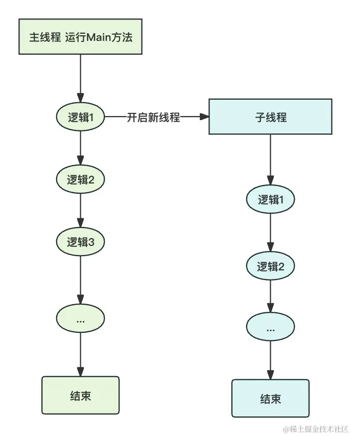
通过上文，了解了线程的基本用法之后，我们需要对线程的一些重要参数和方法做一个详细的说明！我们主要会从线程的优先级、线程名称、什么是守护线程、如何停止线程四个方面做一个重点的介绍。
在 Java 中，线程的优先级用于指定线程相对于其他线程的执行优先级。
线程的优先级是一个整数值，通常在 1 到 10 之间，其中 1 表示最低优先级，10 表示最高优先级。线程的优先级可以影响线程调度器的决策，但并不保证线程一定按照优先级顺序执行，因为线程调度取决于底层操作系统和 Java 虚拟机的实现。
线程优先级的作用包括如下：
要设置线程的优先级，可以使用 Thread 类的setPriority()方法。例如：
// 设置线程的优先级为最高
thread.setPriority(Thread.MAX_PRIORITY);
注意，线程的优先级在一些情况下可能不会按预期工作，因为它依赖于底层操作系统的支持。此外，在一些多线程编程场景中，过度依赖线程优先级可能导致不可预测的结果，因此应该小心使用。在编写多线程应用程序时，最好使用其他机制来控制线程的行为，如锁、条件变量和线程池等，以确保线程能够按照预期的方式协作和同步，这里暂时了解即可。
以下是一些线程优先级可能产生的问题。
多线程编程不仅在开发过程中难以理解，而且更让人困扰的是，一旦多线程任务出现问题，调试变得异常复杂。我相信那些有多线程编程经验的同学都会了解，多线程任务的问题通常不是必现的 bug，而是在特定情况下或者当并发数量达到一定规模时才会显现。
在传统的系统中，无论使用哪种开发框架编写代码，都会涉及大量线程的创建。如果这些线程没有清晰的标识表示它们正在处理哪个任务，开发人员将面临更大的挑战。这就是线程名称非常重要的原因。无论是在排查问题，还是解决由于某些原因引起的死锁问题时，线程名称都提供了宝贵的线索。
那如何设置和获取线程的名称呢？
//设置线程的名称
thread.setName("测试线程");
//获取当前线程的名字
Thread.currentThread().getName()
线程名字，特别是在调试系统因为某些原因变得很慢，或者因为某些原因造成死锁这类问题中“屡建奇功”，我们使用一些 JVM 工具可以很容易监控到线程的存在，比如下图就是我使用 jconsole 监控到的线程的存在：
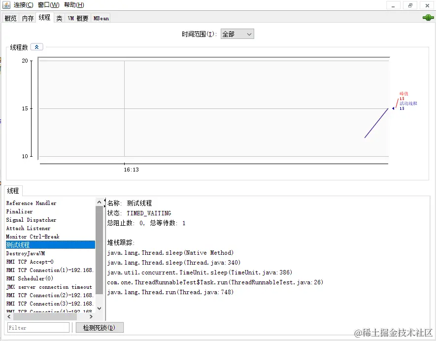
可以看到，我们上面实例代码创建的线程可以很容易地被监控到。
在 Java 中，守护线程（Daemon Thread）是一种特殊类型的线程，其作用是为其他线程提供服务和支持。与普通线程（用户线程）不同，守护线程的生命周期会随着程序的主线程（或最后一个用户线程）的结束而终止。这意味着当只剩下守护线程在运行时，Java 虚拟机会自动退出。
守护线程通常用于执行后台任务，如垃圾回收、定时任务、监控、日志记录等，它们在后台默默地执行，不会干扰或影响程序的正常执行。一旦所有用户线程完成了它们的任务并退出，Java 虚拟机就会自动关闭，而不管守护线程是否完成了它们的工作。
假设我们存在下述代码：
public class ThreadRunnableTest {
public static void main(String[] args) {
Thread thread = new Thread(new Task());
thread.setName("测试线程");
thread.start();
}
private static class Task implements Runnable {
@Override
public void run() {
try {
TimeUnit.SECONDS.sleep(10);
} catch (InterruptedException e) {
e.printStackTrace();
}
System.out.println("线程运行，线程名称为:" + Thread.currentThread().getName());
}
}
}
可以看到，我们的代码同上文的代码没有做什么特别大的改变，只是多增加了一个 10 秒的睡眠，此时运行程序，JVM 会等待子线程 10 秒睡眠完成之后才会正式地将主线程正常结束，这一类的线程叫做工作线程。
那么，我们在代码中使用 thread.setDaemon(true); 来将一个工作线程变为守护线程：
public class DaemonThreadTest {
public static void main(String[] args) {
Thread thread = new Thread(new Task());
thread.setName("测试守护线程");
thread.setDaemon(true);
thread.start();
}
private static class Task implements Runnable{
@Override
public void run() {
try {
TimeUnit.SECONDS.sleep(10);
} catch (InterruptedException e) {
e.printStackTrace();
}
System.out.println("线程运行，线程名称为:" + Thread.currentThread().getName());
}
}
}
运行代码后，主线程运行完毕之后，项目会直接结束，并不会存在任何输出和异常，会直接结束运行！这就是守护线程与工作线程最本质的区别：
在日常开发中，我们必须谨慎考虑守护线程的使用。这是因为守护线程的生命周期与主线程密切相关，一旦主线程结束，守护线程可能来不及执行资源回收等必要的操作（比如关闭 JDBC 连接或文件流连接），这可能导致一些令人困惑的问题出现。
因此，我们需要慎重选择守护线程的任务，确保它们的工作不会影响到程序的正常运行，特别是在主线程结束时。
如何停止线程似乎是一个老生常谈的问题，现阶段来说也没有一个很好的方案很完美地停止线程。
JDK 官方提供的 thread.stop(); 方法可以直接将线程强行终止，且不会存在任何的异常信息！但是无论是 JDK 官方，还是网上的一些文章都告诉我们这种方式不推荐，确实，这种方式会导致资源不释放！
另一种方法是使用 JDK 官方提供的interrupt方法来请求线程停止。
interrupt方法会导致正在等待的线程触发InterruptedException异常，从而可以捕获这个异常以实现线程的停止。然而，这种方式只在存在等待条件（如sleep、wait等）的情况下才能生效。如果代码中没有这些等待条件，或者线程已经执行完它们，那么interrupt方法可能无法停止线程的任务。不过，它在处理子线程作为循环任务的情况下非常有用，我们可以通过发出停止信号并在循环体内检测该信号来终止循环，从而结束子线程的任务。
public class StopThreadTest {
public static void main(String[] args) throws InterruptedException {
Thread thread = new Thread(new Task());
thread.setName("测试线程");
thread.start();
TimeUnit.SECONDS.sleep(1);
//发出一个停止信号
thread.interrupt();
}
private static class Task implements Runnable {
@Override
public void run() {
//验证停止信号是否已经停止
while (!Thread.currentThread().isInterrupted()) {
System.out.println("我执行了");
}
}
}
}
关于线程的停止，存在许多不同的观点和方法。在我实际的生产经验中，最常见的线程停止方式是基于interrupt发出的停止信号，以完成子线程的终止功能。此外，在一次面试中，我听到过这样一种停止线程的方法，即在代码逻辑中设置检查点，检查这个检查点是否接收到interrupt发出的终止信号，从而实现线程的停止功能。然而，这种方法通常只是暂时解决问题，没有根本性的解决办法。
在实际的开发环境中，我们需要根据自身的开发条件和需求来选择适合的线程停止方式。每种方法都有其适用的场景，因此需要根据具体情况来做出决策。最终，确保线程能够在可控和可维护的条件下停止是至关重要的。
线程的生命周期和状态是指线程从创建到终止所经历的各种状态和阶段。Java 线程的生命周期主要包括以下状态：
wait()方法、join()方法或类似的方法。sleep()方法或指定超时的wait()方法。线程可以在不同状态之间转换，例如，一个新建状态的线程可以转换为就绪状态，然后再转换为运行状态。运行状态的线程也可以进入阻塞、等待、定时等待状态，然后最终终止。
理解线程的生命周期和状态对于有效地管理多线程程序非常重要，因为它有助于掌握线程的行为、同步和调度。可以使用 Java 的 Thread 类和相关的工具来监控和管理线程的状态，以确保线程在程序中按照预期的方式运行。有关线程的状态的定义可以在 java.lang.Thread.State 看到。
在并发编程中，我们听到最多的问题就是：并发安全。
什么是并发安全问题呢？并发安全是如何产生的呢？
我们先听一个故事：
在一个小镇的面包店里，有一位名叫小明的面包师傅，有天小明发明了一种新的糕点，他称之为“竞态蛋糕”。这个蛋糕很特殊，顾客购买后需要立即品尝才能尝出它的美味。由于蛋糕十分好吃，小明的面包店非常受欢迎，导致每天都有很多顾客涌入。为了更快地制作面包，小明雇佣了两名助手——小红和小绿——来帮助他制作竞态蛋糕。每位助手都负责一半的制作过程。
竞态蛋糕的制作需要经过以下步骤：
问题出现在第三个步骤，添加奶油和装饰。小红和小绿经常同时完成前两个步骤，然后争相来完成第三个步骤。这导致了问题的发生。
有一天，两位助手都在准备为一位顾客制作蛋糕，但是当进行到最后一步时出现了问题。他们同时试图向蛋糕上添加奶油和装饰，但由于操作冲突，最终的蛋糕变得一团糟。
这个小故事传达了一个重要观点，即竞态条件的产生通常发生在多个人同时尝试操作某个需要一定顺序才能完成的物品时。关键要注意“多人、同时、顺序敏感”这几个因素。
在上述例子中，小红和小绿就好像是两个线程，而蛋糕则代表了临界区。当多个线程同时以不同的顺序访问临界区时，此时就产生了竞 态条件，如果临界区没有做特殊处理，数据可能会变得混乱不堪。
那么，我们应该如何解决这个问题呢？故事还没完，我们将故事继续：
小明意识到了问题，并决定解决这个竞态条件。他引入了一个规则，同时只有一位助手能够操作最后一步，而另一位助手必须等待。这个简单的解决方案确保了竞态条件不再发生，而竞态蛋糕变得一如既往地美味。
这个规则保证了在竞态条件下，临界区能够被正确、有顺序地操作，而这个规则我们在并发编程中一般称之为 锁！
线程作为能够将服务器资源利用率发挥到极致的关键元素，对于现代 Java 开发而言，深入了解和掌握线程是不可或缺的技能之一。
在本章节中，我们重点介绍了线程的基本使用方式、常用参数以及常用方法，并透过案例讨论了多线程可能导致的并发安全问题以及产生这些问题的原因。这一深入探讨为后续学习奠定了基础。虽然线程的使用可以提升服务器资源利用率，但若使用不当、控制不得当，就可能导致系统出现严重问题。
在下一节中，我们将详细探讨如何合理、高效、安全地使用线程，以确保系统的稳定性和性能表现。这将为你提供更全面的视角，使你能够更加精准地运用线程，充分发挥其优势，同时避免潜在的问题。
在前一章，我们学习了线程的基本应用。简而言之，线程的主要目的是充分利用 CPU 的计算能力，以提高服务处理和响应速度。然而，有一句古话说：“过犹不及”，这引发了一个问题：是否线程的数量越多越好呢？
在上一章学习中，我们深入了解了线程的生命周期。线程只有在获得 CPU 时间片时才处于“Running”状态。当时间片用尽时，操作系统必须保存当前线程的执行上下文，包括寄存器状态、程序计数器、栈指针等信息。这是为了确保下一次该线程再次获得 CPU 时间片时能够恢复到之前的执行状态。
现在开发面试张嘴就是并发数高达几十万，假设在这种场景下，我们不加以控制地创建大量线程，将会给操作系统带来巨大的压力，导致线程切换频繁或者内存占用到极限等。因此，需要谨慎控制线程的创建。
在本节课，我们将会着重介绍线程池的使用，将我们上一章节学习的线程集中起来管理，从而使这些散列的线程相互之间协同配合，更好地压榨 CPU 的性能。
一个服务器的硬件资源总是有限的，但是对于线程执行任务的数量是不可以预测的，如果不加以管控，那么系统会在有限的服务器资源上无限制地创建线程，从而造成诸如 OOM 等各种不可预测的问题。
既然无限制的创建线程会出现问题，那么我们让其变得有限不就能够解决问题吗？
在常规的开发场景下，一个线程执行完分配的任务后就会处于空闲状态，继而被 JVM 回收掉。那么假设我们创建有限个线程循环不停的执行任务，任务执行完了，就再获取一个新任务进行执行。这样既解决了无限创建的问题，又解决了线程频繁创建销毁的开销！
比如，我们创建了 10 个持续存在的线程，这些线程会不断执行用户提交的任务，这是否足以解决线程数量过多的问题呢？这就引出了线程池的概念。
线程池是一种基于池化思想的线程管理工具，它在池内维护多个长期存在的“常驻线程”，通过重复使用这些“常驻线程”来避免线程的反复创建和销毁。
当任务到达时，无需每次都创建新线程，线程池能够直接执行任务。此外，线程池具备可扩展性，允许开发人员根据需求添加更多功能，例如利用线程池钩子来实现特定的功能。线程池还提供了一系列可调整的参数，使我们能够根据业务需求进行线程池的调优和监控等操作。
在理解线程池的过程中，如果能够充分理解线程池参数的用法和意义，那么基本上你就已经掌握了线程池的大部分用法。
下面我将会围绕“线程池的参数”和“线程池常用 API”来进行重点介绍，以帮助你掌握线程池的基础使用方法。
在下面的表格中，我列举了使用线程池过程中全部的参数，后续我也将对表格中的每一个参数都会进行一个详细的说明，因为这些参数的使用和意义对于你更好地掌握线程池有重要的意义，并且也是高频面试点，需要着重学习。
| 参数名称 | 类型 | 简要介绍 |
|---|---|---|
| corePoolSize | int | 核心线程数 |
| maximumPoolSize | int | 最大线程数 |
| keepAliveTime | long | 空闲时间 |
| unit | TimeUnit | 空闲时间的时间单位 |
| workQueue | BlockingQueue | 任务队列 |
| threadFactory | ThreadFactory | 线程工厂 |
| handler | RejectedExecutionHandler | 拒绝策略 |
参数的详细介绍：
corePoolSize个线程存在。corePoolSize的这部分线程在空闲一段时间后，JVM 会将其回收掉。它是线程池在面对突发大任务量袭击下的一种 折中手段，先临时开辟不大于maximumPoolSize个数量的线程，先把这部分突增的任务处理掉，然后再把这些多余的线程回收掉。corePoolSize的这部分线程在空闲多长时间会被关闭回收掉。keepAliveTime共同使用，共同定义空闲时间。需要额外说明：这里的核心线程与非核心线程只是一个称呼，在 ThreadPoolExecutor 内部，只要小于核心线程数的线程统称为核心线程，大于核心线程数的统称为非核心线程，不分先后，不一定先创建的就是核心线程、后创建的就是非核心线程。
举个例子，当 coreSize 为 1、maxSize 为 3、队列长度为 0 的时候，提交三个任务，A、B、C 三个线程分别去执行，A 并不一定是核心线程，当 A 执行完毕后，B、C 还在运行中时，此时 A 就会在到达超时时间之后被回收掉， B 和 C 中有一个线程就会被当作核心线程使用。
我们在上文了解了线程池中每一个参数的大致含义之后，我们还需要了解线程池中这些参数在配合之下到底产生了何种奇妙的化学反应！
当我们向线程池中提交了大量的任务后，提交的任务会经历以下的历程：
我们使用一张示意图来解释这个过程：
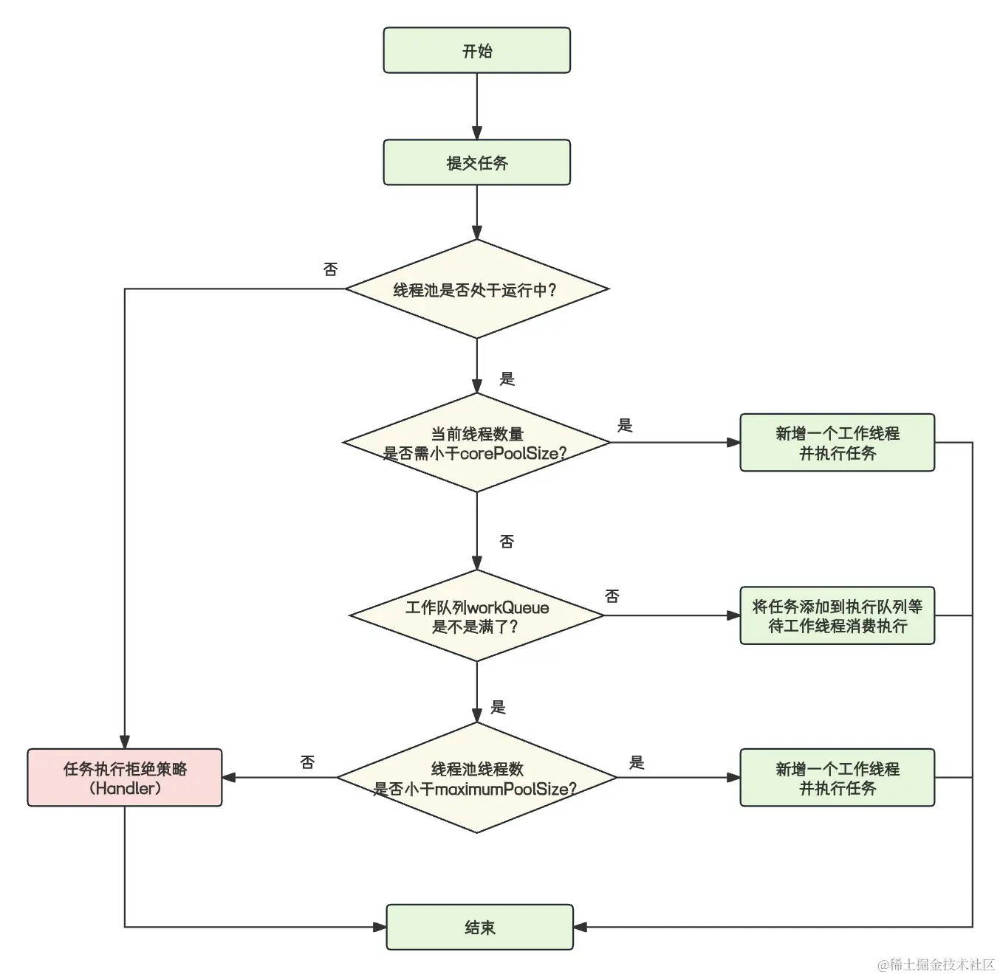
我们上面基本描述了 keepAliveTime 与 unit 所存在的意义：它规定了当非核心线程在规定的时间内，没有执行任务，就证明这个非核心线程是冗余线程，此时就会将非核心线程关闭。
但是我们上面也重点说明了，在不做特殊设置的情况下，线程池无论如何回收都会保证至少存在 corePoolSize 个线程，那么肯定就存在特殊设置：
threadPoolExecutor.allowCoreThreadTimeOut(true);
上述代码就是指定是否回收核心线程，在设置了该项参数之后 ，当核心线程空闲之后也会被回收，如果线程池一个任务也没有，那么在空闲一段时间之后，线程池中线程会被全部回收，等有任务了再去新建线程。
我们在上文说到，所谓的工作队列事实上就是一个“等待任务”的临时存放的容器，这个容器 JDK 官方规定必须是一个阻塞的队列。
JDK 中为我们提供了很多的阻塞队列，在线程池中常用的队列有以下四种。
Integer.MAX_VALUE。使用这种队列的时候需要特别注意，因为它的容量近乎无限，所以线程池参数 maximumPoolSize 是不生效的，拒绝策略也是失效的，因为队列永远也装不满；所以在任务的执行速度低于任务产生的情况下，众多的任务可能被无限地堆积在无界队列中，最终导致 OOM 的发生。maximumPoolSize和拒绝策略就有了意义，当队列被塞满后就会执行我们分析的逻辑。不同的队列在线程池中有不同的使用场景。比如，我就是想要线程池达到上文介绍的那种弹性扩缩容的能力，那么我们就使用 ArrayBlockingQueue 这种有界队列，当任务数量达到队列最大数量之后，开始使用 maximumPoolSize 参数进行工作线程数量的增加，以达到加快任务执行速度的目的。
如果我们希望，线程必须以一个固定的线程容量执行任务，暂时没有机会执行的任务就放到队列中，队列不做长度限制，有多少任务放多少任务，那么就推荐使用类似于 LinkedBlockingQueue 这种无界队列。但是使用无界队列就必须要注意一件事，因为队列长度是无限的，所以无论有多少任务处于等待状态，都不会触发拒绝策略，只会在队列中堆积，从而造成 OOM。
正如我们上面举的例子，当存在大量的任务，而且线程池的工作队列使用的又是一个有界队列，当队列满了而且线程池的存活线程数量也达到了最大线程池规定的数量，此时任务就会被线程池交给拒绝策略去处理。
拒绝策略存在的意义就是当线程池实在是忙不过来的时候，来帮助线程池处理这些任务，至于处理的方式是直接丢弃亦或者是直接报错，由我们给定的处理器决定。
JDK 官方为我们默认提供了 4 种拒绝策略，我们简单说明一下每一种拒绝策略的特点。
以上不同的拒绝策略没有好坏之分，比如一些日志记录或统计任务，这类任务的丢失不会对系统产生什么影响，那么我们可以直接使用 DiscardPolicy，当线程池处理不了的时候直接把任务丢弃掉！当我们丢弃任务的时候，如果需要告知调用者，那么就使用 AbortPolicy，它会在丢弃任务之后再向调用者抛一个异常！
当我们的系统对于某一个任务特别敏感的时候，就是即使线程池处理不了了，那么这个任务也必须执行，此时就可以使用 CallerRunsPolicy，它会直接让主线程来执行。比如，A 线程向线程池提交任务，结果线程池处理不了了，那么这个拒绝策略就会直接让 A 线程自己去执行这个任务！从而保证任务一定能够被执行。但是注意，这种拒绝策略会导致调用者线程阻塞。
使用者也可以自定义拒绝策略，比如我们在线程池满了之后，输出一行丢弃的日志之后将任务丢弃，只需要实现 java.util.concurrent.RejectedExecutionHandler 接口即可，具体的定义方式如下：
public class MyPolicy implements RejectedExecutionHandler {
@Override
public void rejectedExecution(Runnable r, ThreadPoolExecutor executor) {
System.out.println( "线程池已经达到最大极限，该任务被丢弃..." );
}
}
我们在上文中描述，当满足一定条件的时候，对于新任务，线程池会创建一个工作线程来执行任务，创建工作线程这一步就是由线程池工厂来负责。JDK 默认使用DefaultThreadFactory作为线程池的线程池工厂，默认线程池创建的线程都属于同一个线程组，拥有同样的优先级，并且都不是守护线程。线程工厂主要规定了线程池如何创建线程。
线程池对于线程工厂的使用，我们可以使用下图来简单了解一下：
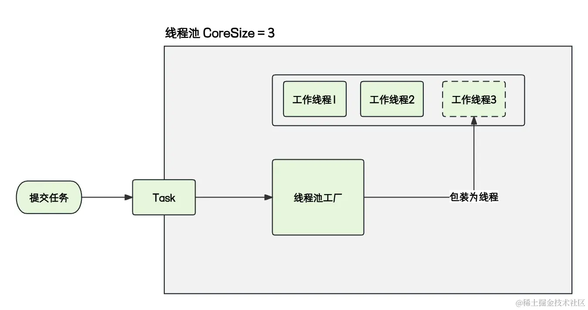
开发者也可以定制自己的线程池工厂，来定制化产生线程的方式。假设我们要求线程池创建的线程的线程名称必须是以 test-Thread 作为开头的话，我们就可以这样来定义线程工厂：
public class MyThreadFactory implements ThreadFactory {
/**
* 线程名称递增id
*/
private final static AtomicLong IDX = new AtomicLong();
@Override
public Thread newThread(Runnable r) {
//将任务包装为线程
Thread thread = new Thread(r);
//设置线程名称
thread.setName( "test-Thread-" +IDX.getAndIncrement());
return thread;
}
}
在介绍自定义线程池之前，我们先学习一下 JDK 默认的几种线程池的创建方式，以及为什么在阿里巴巴最新的编码规范中明确声明不建议使用 JDK 默认的创建方式。
定长线程池的意义是事先就规定好了线程池的大小，它的corePoolSize和maximumPoolSize数量是相等的，且线程队列使用的是无界队列。那么根据我们上文的分析，当corePoolSize=maximumPoolSize，而且队列为无界队列的时候，永远也不会触发拒绝策略，而且所有来不及执行的任务都会堆积在任务队列中。
它的使用方式如下：
ExecutorService fixedThreadPool = Executors.newFixedThreadPool(10);
缺陷：因为任务只会无限制地堆积在任务队列中，当任务产生速度过快的时候，线程池无法自行扩展，而且也无法执行拒绝策略，那么任务将会全部堆积在无界队列中，进而产生 OOM 问题。
它的配置和定长线程池几乎一致，唯一不同的是它的corePoolSize和maximumPoolSize都是 1，证明它最多只能同时执行 1 个任务，多余的任务会被缓存在无界队列中等待消费，缺陷与定长线程池一致。
它的具体使用方式如下：
ExecutorService singleThreadExecutor = Executors.newSingleThreadExecutor();
缓冲线程池是一个特殊的线程池，它的特性是来多少任务，我开启多少线程，当任务执行完毕后，线程空闲一定时间后会被回收。
ExecutorService cachedThreadPool = Executors.newCachedThreadPool();
我们进入到源码分析它的线程池参数，它的corePoolSize为 0，但是maximumPoolSize却为Integer.MAX_VALUE，使用的队列是SynchronousQueue，我们在 workQueue 常用类型中介绍过，这个队列的容量为 0，所以根据上文的分析，我们能得到以下的结论：
corePoolSize的大小为 0，此时线程池会尝试将任务放置到任务队列中。maximumPoolSize参数来创建线程。maximumPoolSize 的大小为 Integer.MAX_VALUE，就证明线程池的最大线程数量为无限大，所以根据分析，缓冲线程池能够无限制地开启任意多个线程，而不受限制。缺陷：极限情况下会导致线程无限制地创建线程，最终将系统资源全部消耗。
这个线程池就很特殊了，它属于 ThreadPoolExecutor 的衍生子类，作用是可以以一个固定的时间去不断地执行任务。
这个线程池也是一个特殊的线程池，与我们上面介绍的线程池不同的是，这个线程池是带有定时功能的线程池，它可以将一个任务延时一定的时间后执行，也可以让任务以一个固定的频率去执行。具体使用方式如下：
ScheduledExecutorService scheduledExecutorService = Executors.newScheduledThreadPool(10);
对于定时线程池，我们在开发中常用的有三种使用方式。
scheduledExecutorService.schedule(() -> System.out.println("定时任务执行"), 1, TimeUnit.SECONDS);
它的使用方式具体如下：
scheduledExecutorService.scheduleWithFixedDelay(() -> System.out.println("扫描数据库邮件表，并发送邮件"), 10, 5, TimeUnit.SECONDS);
我们可以看到它的定义，存在 4 个参数：
这里注意，任务的执行间隔是相对于上一次任务的完成时间，也就是说当上一个任务执行完毕之后，下一次任务的计时才会开始。假设我们的任务执行需要 5 秒，从 10 点开始执行，每 5 分钟执行一次，那么第一次执行是 10:05:00执行，10:05:05 执行完毕, 那么下一次执行时间是10:10:05。
它的使用方式具体如下：
scheduledExecutorService.scheduleAtFixedRate(() -> System.out.println("定时任务执行"), 1, 1, TimeUnit.SECONDS);
与第二种使用方式不同的是它的执行频率，它下一次的任务开始时间不再是以上一次任务的结束时间开始计时的，而是从上一次任务的开始时间开始计时。
下面我举个例子，你对照第二种使用方式的例子，就能够理解它们之间的区别：假设我们的任务执行需要 5 秒，从 10 点开始执行，每 5 分钟执行一次，那么第一次执行是 10:05:00执行，10:05:05 执行完毕，但是与第二种方式不同的是，它下一次执行时间是10:10:00。
这种使用方式适用于对执行时间敏感的任务，比如我们就是需要每隔一个小时执行任务，无论上一个任务是否执行完毕，下一个任务都要准时触发的场景。
我们上文详细分析了对于 JDK 自带的默认线程池的使用方式和缺陷，使用系统自带的线程池固然简单，但是我们前面仔细分析了线程池参数的意义、使用系统自带的线程池定义方式，那么开发人员对于线程池的参数是无法掌控的，我们所使用的参数全部都变成系统预设的，所以在开发中，我们使用最多的还是自定义线程池。
我们简单尝试定一个线程池：
ThreadPoolExecutor threadPoolExecutor = new ThreadPoolExecutor(1, 2, 60, TimeUnit.SECONDS, new ArrayBlockingQueue<>(10), new ThreadFactory() {
@Override
public Thread newThread(Runnable r) {
return new Thread(r);
}
}, new ThreadPoolExecutor.AbortPolicy());
上述自定义线程池中：
- corePoolSize=1
- maximumPoolSize=2
- keepAliveTime=60
- unit=秒
- workQueue=有界队列，长度为 10
- threadFactory 使用的是自定义的线程池工厂
- handler 使用的是 AbortPolicy，当任务被拒绝后，抛出异常后丢弃任务
根据前面的学习，我们上述定义的线程池的核心大小为 1，最大长度为 2，空闲时间为 60 秒，有界队列长度为 10，可以根据我们的所学来描述线程池提交任务的过程。
有了上面线程池参数，我们可以尝试将线程池提交任务的过程使用文字推算一遍：
可以推测到，线程池接收任务的过程与我们上文分析的流程是一致的，它会先使用 corePoolSize 规定的数量创建核心线程，然后使用 workQueue，队列也被塞满后，就会使用 maximumPoolSize 规定的数目再次启动额外的线程处理任务！当上述三种方式都无法接收新任务的时候，任务就会被推送到拒绝策略执行！
至此，我们学习了线程池如何创建，以及线程池的每一个参数的具体含义，下面我们将会详细学习开发中线程池常用的 API。
线程池中提交任务的方式主要有两种，一种是没有任何返回值和异常的提交方式，一种是提交任务后，可以获取任务的返回值、执行异常的提交方式。
execute 方法
execute 方式是一种无返回结果的提交方式。
如果我们希望线程池仅仅只异步执行一个任务，不需要这个任务的任何返回值，那么我们可以通过下面的方式定义：
public class ThreadPoolNotResultSubmitTest {
/**
* 使用默认的线程工厂
*/
private final static ThreadPoolExecutor THREAD_POOL_EXECUTOR = new ThreadPoolExecutor(1, 2, 60, TimeUnit.SECONDS, new ArrayBlockingQueue<>(10), Executors.defaultThreadFactory(), new ThreadPoolExecutor.AbortPolicy());
public static void main(String[] args) {
THREAD_POOL_EXECUTOR.execute(() ->{
System.out.println("线程池执行任务，线程名为: " + Thread.currentThread().getName());
});
}
}
submit 方法
submit 方式是一种可以通过 Future 获取任务的执行结果和执行异常的方式。
该种方式是一个有结果的执行方式。通过 submit 提交任务，会返回一个 Future 对象，通过 Future 对象，我们可以获取到最终任务执行结果（有关 Future 的使用方式将会在后面的章节详细介绍，这里简单了解即可）。
public class ThreadPoolResultSubmitTest {
/**
* 使用默认的线程工厂
*/
private final static ThreadPoolExecutor THREAD_POOL_EXECUTOR = new ThreadPoolExecutor(1, 2, 60, TimeUnit.SECONDS, new ArrayBlockingQueue<>(10), Executors.defaultThreadFactory(), new ThreadPoolExecutor.AbortPolicy());
public static void main(String[] args) throws ExecutionException, InterruptedException {
Future<String> future = THREAD_POOL_EXECUTOR.submit(() -> {
System.out.println("我执行了");
return String.format("我是执行结果，我被线程【%s】执行", Thread.currentThread().getName());
});
System.out.println("线程执行结果: "+future.get());
}
}
在上述的代码中，我们通过 submit 提交了一个异步任务，任务提交后会返回一个 Future，我们基于 Future 可以获取任务的返回结果和异常信息。
注意，使用线程池提交一个任务后不代表被提交的任务会立即执行，它仅仅是被提交到了线程池中，至于何时执行该任务需要根据我们上文学习到的线程池参数的应用来判定。
JDK 官方为我们提供了两种停止线程池的方式，一种是“优雅的关闭”，一种是“暴力的终止”，下面我们将对两种停止方式做一个具体的介绍。
shutdown 关闭线程池
这个方法特别类似于我们上一节学习线程停止时候的interrupt，它是一个“优雅的绅士”，并不会立即把线程池停掉，而是等待线程池内的所有任务全部执行完毕后，才会关闭线程池。
需要注意的是，发起 shutdown 的信号后，线程池会停止接收新任务。此时如果再调用 shutdown 后再去提交任务，线程池会将任务直接推送到拒绝策略去执行。简单说，任务停止后是不允许提交新任务的。
public class StopThreadPoolTest {
/**
* 使用默认的线程工厂
*/
private final static ThreadPoolExecutor THREAD_POOL_EXECUTOR = new ThreadPoolExecutor(1, 3, 60, TimeUnit.SECONDS, new ArrayBlockingQueue<>(10), Executors.defaultThreadFactory(), new ThreadPoolExecutor.AbortPolicy());
public static void main(String[] args) throws InterruptedException {
THREAD_POOL_EXECUTOR.execute(() ->{
try {
TimeUnit.SECONDS.sleep(3);
System.out.println("线程池执行任务，线程名为: " + Thread.currentThread().getName());
} catch (InterruptedException e) {
e.printStackTrace();
}
});
THREAD_POOL_EXECUTOR.execute(() ->{
try {
TimeUnit.SECONDS.sleep(10);
System.out.println("线程池执行任务，线程名为: " + Thread.currentThread().getName());
} catch (InterruptedException e) {
e.printStackTrace();
}
});
THREAD_POOL_EXECUTOR.shutdown();
TimeUnit.SECONDS.sleep(1);
//线程池是否被停止 true
System.out.println(THREAD_POOL_EXECUTOR.isShutdown());
//线程池是否处于终止中的状态 true
System.out.println(THREAD_POOL_EXECUTOR.isTerminating());
//线程池是否处于终止状态 false
System.out.println(THREAD_POOL_EXECUTOR.isTerminated());
}
}
上述代码就是调用 shutdown 方法停止线程池的方式。可以看到，线程池中存在两个任务，都模拟了业务执行所消耗的时间 10 秒，任务执行过程中，我们调用了 shutdown 方法，此时因为任务还在执行过程中，线程池不会立即关闭，而是等待任务执行完毕后，才会正式停止线程。
我们在代码里面调用了几个判断状态的方式，下面将对这三种方法进行简要说明。
- isShutdown：返回线程池是否处于关闭状态，该方法只要调用了关闭线程池的 API，就会返回为 true，当 isShutdown 返回为 true 的时候，线程池不再接收新的任务。
- isTerminating：返回线程池是否处于终止中的状态，终止代表线程池彻底完成了关闭状态，如上述代码，因为线程池还在等待任务运行完毕，因此线程池处于终止中的状态，此时返回为 true。
- isTerminated：返回线程是否处于终止状态，如上述代码，线程池还未完全关闭成功，所以线程池处于终止中，而不是终止状态，返回为 false。
shutdownNow 关闭线程池
与 shutdown 不同的是，shutdownNow是一个“暴力的汉子”，它会强行向所有正在运行中的线程发出interrupt信号，同时停止所有的线程消费任务队列。
简单说，shutdownNow 是立即停止线程池，包括堆积在队列里面的任务。我们简单看一下它的使用方式：
public class StopThreadPoolTest {
/**
* 使用默认的线程工厂
*/
private final static ThreadPoolExecutor THREAD_POOL_EXECUTOR = new ThreadPoolExecutor(1, 3, 60, TimeUnit.SECONDS, new ArrayBlockingQueue<>(10), Executors.defaultThreadFactory(), new ThreadPoolExecutor.AbortPolicy());
public static void main(String[] args) throws InterruptedException {
THREAD_POOL_EXECUTOR.execute(() ->{
try {
TimeUnit.SECONDS.sleep(3);
System.out.println("线程池执行任务，线程名为: " + Thread.currentThread().getName());
} catch (InterruptedException e) {
e.printStackTrace();
}
});
THREAD_POOL_EXECUTOR.execute(() ->{
try {
TimeUnit.SECONDS.sleep(10);
System.out.println("线程池执行任务，线程名为: " + Thread.currentThread().getName());
} catch (InterruptedException e) {
e.printStackTrace();
}
});
THREAD_POOL_EXECUTOR.shutdownNow();
TimeUnit.SECONDS.sleep(1);
//线程池是否被停止 true
System.out.println(THREAD_POOL_EXECUTOR.isShutdown());
//线程池是否处于终止中的状态 false
System.out.println(THREAD_POOL_EXECUTOR.isTerminating());
//线程池是否处于终止状态 true
System.out.println(THREAD_POOL_EXECUTOR.isTerminated());
}
}
所谓的钩子函数就是线程池在任务执行前或执行后会主动触发一下这个钩子函数，使得线程池能够在任务执行前后有一定的介入能力！
线程池为我们提供的钩子回调分别是afterExecute和beforeExecute。afterExecute的执行时机是任务执行完成后，而beforeExecute的调用时机是任务执行前。
假设我们有这样一个需求，因为向线程池提交任务之后，任务何时执行我们并不知道，如果我们想要在任务执行之前记录一个任务的开始时间，任务结束之后记录一个结束时间，此时我们就可以使用如下的方式来记录：
public class ExThreadPoolTest extends ThreadPoolExecutor {
public ExThreadPoolTest(int corePoolSize, int maximumPoolSize, long keepAliveTime, TimeUnit unit, BlockingQueue<Runnable> workQueue) {
super(corePoolSize, maximumPoolSize, keepAliveTime, unit, workQueue);
}
public ExThreadPoolTest(int corePoolSize, int maximumPoolSize, long keepAliveTime, TimeUnit unit, BlockingQueue<Runnable> workQueue, ThreadFactory threadFactory) {
super(corePoolSize, maximumPoolSize, keepAliveTime, unit, workQueue, threadFactory);
}
public ExThreadPoolTest(int corePoolSize, int maximumPoolSize, long keepAliveTime, TimeUnit unit, BlockingQueue<Runnable> workQueue, RejectedExecutionHandler handler) {
super(corePoolSize, maximumPoolSize, keepAliveTime, unit, workQueue, handler);
}
public ExThreadPoolTest(int corePoolSize, int maximumPoolSize, long keepAliveTime, TimeUnit unit, BlockingQueue<Runnable> workQueue, ThreadFactory threadFactory, RejectedExecutionHandler handler) {
super(corePoolSize, maximumPoolSize, keepAliveTime, unit, workQueue, threadFactory, handler);
}
@Override
protected void beforeExecute(Thread t, Runnable r) {
//任务开始执行
System.out.println("任务开始执行，执行时间为:" + new Date());
super.beforeExecute(t, r);
}
@Override
protected void afterExecute(Runnable r, Throwable t) {
System.out.println("任务执行完毕，结束时间为:" + new Date());
super.afterExecute(r, t);
}
public static void main(String[] args) {
ExThreadPoolTest exThreadPoolTest = new ExThreadPoolTest(1, 1, 60, TimeUnit.SECONDS, new ArrayBlockingQueue<>(10));
exThreadPoolTest.execute(() ->{
try {
TimeUnit.SECONDS.sleep(5);
System.out.println("任务结束");
} catch (InterruptedException e) {
e.printStackTrace();
}
});
}
}
然后我们使用这个线程池就可以记录任务的执行时间与结束时间，当然，这个案例并不完善，afterExecute和beforeExecute的存在为我们监控线程池任务提供了无限的可能。
钩子函数的使用需要直接继承 ThreadPoolExecutor，重写beforeExecute方法和afterExecute方法。beforeExecute方法的调用时机是任务执行前，afterExecute的触发时机是任务执行之后。
这里有一个来自我们公司真实的应用场景案例：
我们公司内需要对于异步任务做任务指标进行采集，然后分析任务的执行情况。我们的方案是重新封装线程池，采用线程池的钩子函数复写
afterExecute和beforeExecute。在任务 Runnable 执行前，将 Runnable 重新包装为一个新的 Runnable，我们暂且称之为 NewRunnable，在 NewRunnable 中会记录任务的开始时间、结束时间、执行耗时、是否拒绝、执行结果、执行线程等各种状态，并输出到日志，后续采集这些日志，做线程池参数分析！
当然这个还有其他功能，比如根据采集的日志参数，去动态修改线程池参数、计算线程池的负载状态等功能。后续只需要采集钩子函数输出到日志文件中记录，就能够实时分析线程池的运行状态以及负载压力等统计图。
学习到这一步，我们基本上了解了线程池的使用，下面再来学习线程池能够复用这些线程的原理。线程池是如何来解决我们在上一章学习的线程重复创建销毁的问题呢？
这里我们重点关注线程池的execute 方法，进入到源码中查看，简要源码如下：
public void execute(Runnable command) {
if (command == null)
throw new NullPointerException();
int c = ctl.get();
//获取当前的工作线程数量是否小于核心线程数
if (workerCountOf(c) < corePoolSize) {
// 创建核心线程
if (addWorker(command, true))
return;
c = ctl.get();
}
//如果当前线程数大于核心数且线程是运行中并且能够放入队列（未满）
if (isRunning(c) && workQueue.offer(command)) {
//二次检查
int recheck = ctl.get();
// 如果二次检查时线程不是运行状态则从队列删除任务，将任务执行拒绝策略
if (! isRunning(recheck) && remove(command))
reject(command);
//如果是运行状态，则检查当前运行的线程数，是否因为异常或其他原因到只数量为0，此时直接将任务执行，发布为非核心线程
else if (workerCountOf(recheck) == 0)
addWorker(null, false);
}
else if (!addWorker(command, false))
reject(command);
}
通篇读下来这个源码（详细看注释），我们重点关注addWorker这个方法，这个方法主要就是创建了一个Worker对象，并将Worker对象中的线程启动起来，这个对象是一个 Runnable 的子类。我们看下它的定义：
private final class Worker extends AbstractQueuedSynchronizer implements Runnable {}
Worker 对象本身是一个 Runnable 的子类，在创建 Worker 的时候会调用我们传递的线程工厂（ThreadFactory），创建一个新的线程对象，并将本身传递到线程工厂中。ThreadFactory 会根据传递的 Runable 创建一个线程，保存到变量中，Worker 的构造函数如下：
Worker(Runnable firstTask) {
setState(-1);
this.firstTask = firstTask;
//调用ThreadFactory创建一个新的线程
this.thread = getThreadFactory().newThread(this);
}
我们在上一章学习的 Thread 知识了解到，基于 new Thread(worker)；创建线程，然后启动线程，线程启动后会调用 worker 的 run 方法，在 worker 的 run 方法中重点调用了runWorker方法。我们重点分析runWorker方法的源码逻辑：
final void runWorker(Worker w) {
Thread wt = Thread.currentThread();
//获取提交的任务
Runnable task = w.firstTask;
try {
//死循环 如果提交的任务不为空 或者从阻塞队列中取值，没有任务就阻塞等待任务
while (task != null || (task = getTask()) != null) {
w.lock();
try {
//任务开始前，调用beforeExecute钩子函数
beforeExecute(wt, task);
Throwable thrown = null;
try {
//开始执行任务 直接调用提交任务的run方法
task.run();
} catch (RuntimeException x) {
thrown = x; throw x;
} catch (Error x) {
thrown = x; throw x;
} catch (Throwable x) {
thrown = x; throw new Error(x);
} finally {
//任务执行后 调用钩子函数afterExecute
afterExecute(task, thrown);
}
} finally {
task = null;
w.completedTasks++;
w.unlock();
}
}
completedAbruptly = false;
} finally {
processWorkerExit(w, completedAbruptly);
}
}
从上述代码我们能够真正了解线程被复用的原因：线程池中每一个线程都是无限循环的消费者，线程池中的线程会不断地去线程池的等待队列消费任务，当线程从任务队列中获取到了任务之后，开始调用我们提交的任务的 Run 方法去执行任务。
我们前面分析过，任务队列是一个阻塞队列，所以当任务队列为空的时候，getTask 方法会被阻塞，直到有任务被推送过来或者阻塞队列获取超时，getTask 才会返回！当 getTask 方法获取超时，会返回为 null，此时断定线程为空闲线程，就会结束循环。
我们使用一张图来说明一下：
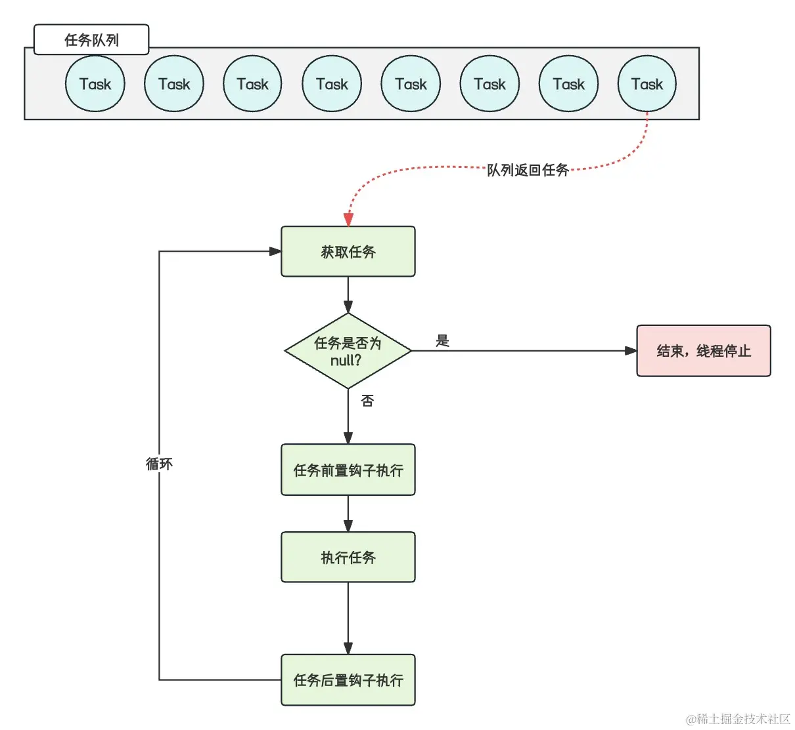
下面我们介绍一下 Java 中的线程池有几种不同的状态，这些状态反映了线程池在生命周期中的不同情况和可用性。
以下是线程池可能的状态：
TERMINATED 状态。TERMINATED 状态。TERMINATED 状态的前一个状态，线程池会执行一些清理工作。这些状态对应了 ThreadPoolExecutor 类中的一些方法，例如：
shutdown() 方法将线程池状态从 RUNNING 切换到 SHUTDOWN。shutdownNow() 方法将线程池状态从 RUNNING 切换到 STOP。awaitTermination() 方法用于等待线程池进入 TERMINATED 状态。线程池的状态管理是重要的，因为它们决定了线程池是否接受新任务、是否执行已提交的任务以及如何处理任务。了解线程池的状态有助于确保线程池在不同阶段的正确行为和资源管理。
在本章节中，我们针对线程池参数以及线程池常用的 API 进行了详细的介绍，深入探讨了如何在项目中有效地利用线程池来提高并发性能。线程池作为多线程编程的重要工具，在实际应用中起到了至关重要的作用。
除此之外，我们还从源码层面分析了线程池能够复用线程的原理，探讨了钩子函数的调用时机，希望通过深入的源码解析能够使你对线程池的工作机制有更清晰的认识。理解线程池的底层实现原理不仅有助于解决一些复杂的并发问题，还能够帮助你更好地调优和优化项目性能。
工作中在使用线程池的时候，一定要牢记线程池参数的含义。这不仅包括线程池的大小、任务队列的容量等基本参数，还涉及到线程的生命周期、任务的执行策略等方面。深入了解这些参数的含义，有助于你能够更加精准地配置线程池，使其更好地适应项目的特定需求。
希望你能够通过本章的学习有所收获，将这些理论知识应用到实际工作中。合理使用线程池不仅能够提升系统的并发能力，还能够改善代码的可维护性和性能表现。
在当今计算机科学领域中，多核处理器和多线程编程已经成为常态。虽然多线程在提高性能和资源利用率方面具有巨大潜力，但同时也引入了一系列潜在的问题。其中最为关键的是并发安全问题。
本文将深入探讨 Java 中的锁机制，以解释并发安全问题的根本原因以及锁如何帮助我们解决这些问题。
首先，我们需要深入理解为何多线程会引发并发安全问题，而单线程操作通常不会。根本原因就在于并发性。
设想有一个不透明盒子，其中包含一个数字 5，同时有两个人 A 和 B 试图同时查看盒子内的数据并执行加 1 的操作，然后将计算结果写回盒子中。然而，我们会发现每个人的计算结果都是 6，而不是 7。这是一个典型的并发问题，因为它们都在看到数字 5 后，在各自的大脑中存储了数值 5，并执行了加 1 操作，因此最终的结果是错误的。
解决这个问题的方法有以下两种。
上述两种方案在 Java 中通常对应于经典的阻塞锁与 CAS 自旋锁。
由上面的例子，我们基本可以了解产生多线程并发问题的根本原因。
不透明盒子，其中一个人修改了数据之后，另外一个人并不知道修改了什么，所以导致的计算结果的错误。这三个问题，是最基本的线程安全产生的原因。
我们通过上面的案例以及学习的产生多线程并发问题的根本原因可以得知，如果我们能够将竞态条件、可见性问题、临界区问题给解决掉，那么我们就能够对并发安全问题手拿把掐，后续我们将从两种手段来解决上述的三种问题。
我们上文学习到，并发安全问题是因为竞态条件下没有限制地修改临界区所产生的，那么假设我们将临界区变为不可修改，是不是就可以从根本上解决线程安全的问题？既然修改会产生问题，那么我就不让你修改！
在 Java 中，final 修饰的属性（字段或变量）可以帮助确保线程安全，因为 final 具有以下特性：
final 属性一旦被赋予初值，就不能再被修改。这意味着其他线程无法更改这个属性的值。在多线程环境下，如果多个线程可以同时修改同一个变量，那么就会出现竞态条件和并发冲突，从而导致线程不安全。因为final 属性的不可变性，所以能够彻底消除这种风险。总的来说，并发安全问题是因为修改产生的，那么我改都不让你改，你如何能够出现线程安全问题？
在前文中，我们已经了解到 final 修饰的方式适用于那些属性在对象创建后不需要修改的特定场景。然而，在实际应用中，许多情况下需要多线程对临界区数据进行修改。因此，我们将重点介绍第二种确保线程安全的方式，即使用线程锁。
为了保证线程安全，在 Java 中，JDK 官方提供了多种线程锁机制，涵盖了从原生的 synchronized 关键字到 Lock 接口的具体实现，包括 ReentrantLock、ReentrantReadWriteLock 等。这些机制能够有效地管理多线程对共享资源的访问，确保在任何时刻只有一个线程可以执行临界区代码，从而避免潜在的并发问题。
synchronized 和 Lock虽然都用于多线程编程中的同步，但它们并不是相互替代的关系，而是各自有其适用的情境和特点。特别是在 JDK 1.6 之后，随着引入轻量级锁和偏向锁，synchronized 的性能得到了显著提升。在一些对并发要求不高、需求不太复杂的场景中，synchronized 实际上并不比 Lock 差，反而可能是更好的选择。
这是因为在这些场景下，synchronized 更加简单直观。它隐含了锁的获取和释放过程，无需用户过多关心锁的释放问题，大大减少了代码的复杂性。对于不太复杂的开发需求，使用 synchronized 更容易理解和维护。
在一些简单的应用场景下，synchronized 的性能和易用性使其成为更好的选择。
在本章节中，我们将对synchronized关键字做一个具体的学习，在synchronized锁的分类中，我们大致可以将锁分为以下两种：
| 实现 | 锁分类 | 特性 |
|---|---|---|
| synchronized 关键字 | 类锁 | 独占、可重入、作用于整个类，影响类的所有实例 |
| 实例锁 | 独占、可重入、作用于实例，只影响同一个实例的线程访问 |
不过，在介绍 synchronized 关键字之前，我们需要先明晰独占特性和可重入特性的概念。
什么是独占特性？
独占锁是一种锁的模式，它在任意时刻只能被一个线程持有。当一个线程获得了独占锁，其他线程就无法同时获得相同的锁，它们必须等待当前持有锁的线程释放锁后才能获取。
独占锁的主要特点包括：
- 排他性：一次只能有一个线程持有独占锁，其他线程必须等待。
- 互斥性：如果一个线程持有独占锁，其他线程试图获取锁时会被阻塞，直到锁被释放。
什么是可重入特性？
可重入特性指的是同一个线程在持有锁的情况下，能够再次获取该锁，而不会发生死锁。这使得同一个线程可以多次进入由同一把锁保护的临界区域，而不会被阻塞。
可重入性的主要特点包括：
- 同一线程可多次获取锁： 如果一个线程已经获得了某个锁，那么在持有该锁的情况下，它可以再次获取相同的锁。
- 防止死锁： 可重入性避免了因为同一线程在持有锁的情况下无法再次获取锁而导致的死锁情况。
可重入性在编写复杂的程序时非常有用，尤其是当一个方法调用另一个加锁的方法时。如果锁不支持可重入性，这样的调用可能会导致死锁，因为同一线程在调用的过程中无法再次获取已经持有的锁。可重入特性可以保证同一个线程在同步块或锁的保护下多次调用被同一把锁保护的方法，而不会发生死锁。
了解了独占特性和可重入特性之后，我们下面将正式进入 synchronized 关键字的学习中去。
synchronized 是 Java 中的一个关键字，具有独占性、互斥性和可重入性。在 Java 中，它的作用范围可以是方法体声明或者代码块。
类锁是全局唯一的，这主要是因为在 Java 中，每个类都对应一个 Class 对象，而这个 Class 对象在整个 JVM 中是唯一的。当使用 synchronized (ClassName.class) 时，锁定的就是这个唯一的 Class 对象。
下面我们将演示方法签名声明和代码块声明两种类锁的加锁方式。
方法签名声明锁
public class SynchronizedClassTest {
public static void main(String[] args) throws InterruptedException {
Task task = new Task();
Thread thread1 = new Thread(task, "线程1");
Thread thread2 = new Thread(task, "线程2");
thread1.start();
thread2.start();
thread1.join();
thread2.join();
System.out.println("最终的计算结果"+task.getCount());
}
private static class Task implements Runnable {
static int count = 0;
@Override
public void run() {
Task.addCount();
}
public static synchronized void addCount(){
for (int j = 0; j < 100000; j++) {
count++;
}
}
public int getCount() {
return count;
}
}
}
在上面的代码中，我们在静态方法的声明中直接声明了 synchronized，当静态方法直接声明 synchronized 的时候，JVM 会自动使用类锁的加锁方式。我们可以使用一个示意图来描述这个过程：
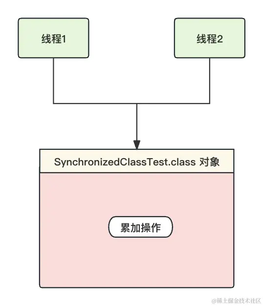
我们可以近似地理解为，线程是从 SynchronizedClassTest.class 这把锁里面进入后，再进行的累加操作，谁抢占到了这个锁谁去加，抢不到就等人家释放了再抢。
代码块声明锁
在方法签名声明的synchronized可能会带来更大的性能开销，因为进入和退出方法都需要进行锁的获取和释放操作。而在代码块级别，可以更灵活地控制锁的获取和释放时机，从而减小锁的开销。
我们假设存在 5 个线程执行任务，当关键字声明在方法签名上时，5 个线程的执行如下：
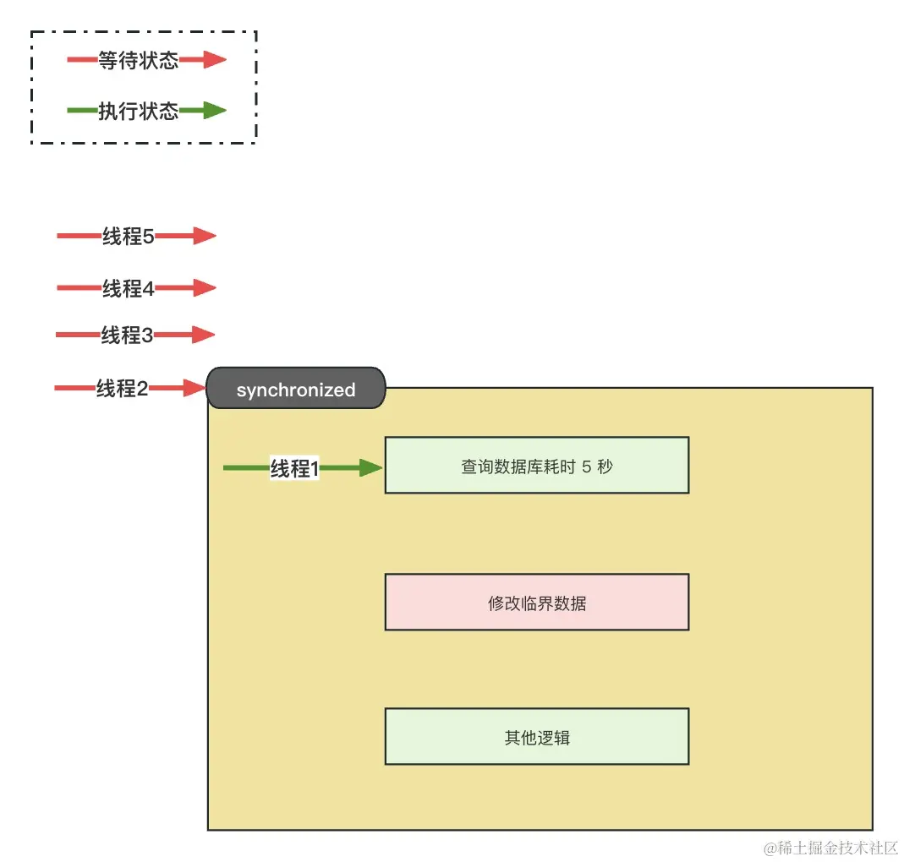
我们可以从图中看到，即使查询数据库和其他逻辑并不会出现线程安全问题，但是因为将 synchronized 声明在了方法签名上，导致无论谁来都只能等待上一个线程将任务执行完毕！
但是，如果我们只锁定会出现并发安全的逻辑，比如上图的修改临界区那一段逻辑就能大大地加快运行效率，比如下图：
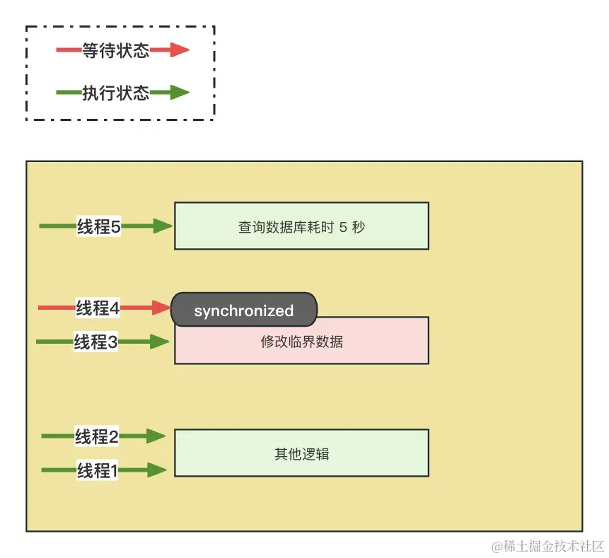
使用代码块声明锁可以选择性地锁定方法内的一部分代码，从而缩小锁的粒度。这样其他线程就有更大的机会在不需要锁的部分执行，提高了并发性，它的具体使用如下：
public class SynchronizedClassTest {
public static void main(String[] args) throws InterruptedException {
Task task = new Task();
Thread thread1 = new Thread(task, "线程1");
Thread thread2 = new Thread(task, "线程2");
long currentTimeMillis = System.currentTimeMillis();
thread1.start();
thread2.start();
thread1.join();
thread2.join();
System.out.println("总耗时:" + (System.currentTimeMillis() - currentTimeMillis));
}
private static class Task implements Runnable {
@Override
public void run() {
try {
Task.simulate();
} catch (InterruptedException e) {
e.printStackTrace();
}
}
public static void simulate() throws InterruptedException {
System.out.println(Thread.currentThread().getName() + ": 开始查询数据库");
//模拟耗时
Thread.sleep(5000);
System.out.println(Thread.currentThread().getName() + ": 查询数据库结束");
synchronized (SynchronizedClassTest.class) {
System.out.println(Thread.currentThread().getName() + ": 开始修改临界区数据");
//修改临界区数据操作 模拟耗时
Thread.sleep(2000);
System.out.println(Thread.currentThread().getName() + ": 修改临界区数据结束");
}
System.out.println(Thread.currentThread().getName() + ": 开始执行剩余的逻辑");
Thread.sleep(3000);
System.out.println(Thread.currentThread().getName() + ": 执行剩余的逻辑成功");
}
}
}
上述代码大约只需要 10 秒左右就可以执行完毕，在相同的环境下，采用方法声明 synchronized 的方式下需要 20 秒左右。
总体来说，选择方法级别或代码块级别的synchronized应该根据具体的需求和场景。如果整个方法都需要被同步，那么方法级别的synchronized可能更方便。如果只有方法内的一小部分代码需要同步，而其他部分可以并发执行，那么代码块级别的synchronized可能更适合。
类锁的加锁方式是全局唯一的，也就是整个 JVM 只有这一把锁，就如我们上文提到的，锁的粒度太大了。如果我们能够把 class 对象实例化的对象作为锁对象，那么粒度就小了很多，因为一个 class 对象可以实例化无数个对象，这就是实例锁。
相比类锁，实例锁有以下的好处：
与类锁相同的是，实例锁也有方法声明和代码块加锁两种加锁方式，只要方法不是静态方法，那么将synchronized声明到方法签名中它自动就会使用当前实例作为实例锁，这里只演示代码块加锁的方式。
使用当前实例作为锁对象
使用当前实例作为锁对象，只需要使用 this 当作synchronized关键字的参数就可以了：
public class SynchronizedCodeTest {
public static void main(String[] args) throws InterruptedException {
Task task = new Task();
Thread thread1 = new Thread(task, "线程1" );
Thread thread2 = new Thread(task, "线程2" );
thread1.start();
thread2.start();
thread1.join();
thread2.join();
System.out.println( "最终的计算结果" +task.getCount());
}
private static class Task implements Runnable {
int count = 0;
@Override
public void run() {
for (int j = 0; j < 100000; j++) {
synchronized (this) {
count++;
}
}
}
public int getCount() {
return count;
}
}
}
使用其他对象作为锁对象
使用其他对象作为锁对象需要先创建一个对象，然后将该对象传递到synchronized关键字中，不同的synchronized关键字使用同一个锁对象代表这些synchronized使用的是同一把锁：
public class SynchronizedCodeTestOther {
public static void main(String[] args) throws InterruptedException {
Object lock = new Object();
Task task = new Task(lock);
Thread thread1 = new Thread(task, "线程1" );
Thread thread2 = new Thread(task, "线程2" );
thread1.start();
thread2.start();
thread1.join();
thread2.join();
System.out.println( "最终的计算结果" +task.getCount());
}
private static class Task implements Runnable {
private final Object lock;
int count = 0;
private Task(Object lock) {
this.lock = lock;
}
@Override
public void run() {
for (int j = 0; j < 100000; j++) {
synchronized (lock) {
count++;
}
}
}
public int getCount() {
return count;
}
}
}
上述的两种方式是在开发中最常用的两种方式，面对简单的并发场景下不用考虑太复杂的加锁逻辑，直接使用 synchronized 就可以了。对于性能而言，JDK 1.6 优化之后，synchronized 的性能也还不错，所以，简单的并发优先推荐这种方式！
至此，相信你已经理解了 synchronized 的加锁原理，并且也可以用来应付后续的面试！不过，有关于 synchronized 的原理网上一抓一大把，这里不做太多过于细节的讲解，因为这对于大家来说反而会增大理解的难度。
我们上文说过，JDK 1.6 之后，对于 synchronized 做了很多优化，其中的重点就是锁的升级过程。在使用 synchronized 加锁的时候，Java 并不会直接调用操作系统内核加锁，而是根据线程的竞争情况采用不同的策略逐渐升级锁，直至调用操作系统加锁。
锁的升级包含以下几个过程：
整体 synchronized 的锁升级过程为：偏向锁 -> 轻量级锁（自旋锁） -> 重量级锁。
为了帮助你理解这个过程，首先我们需要理解一个对象在存储空间的对象结构：
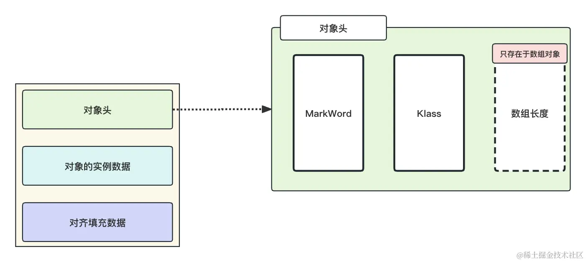
有关锁的信息被存储在了 MarkWord 中，这里以 64 位虚拟机为例，在不开启压缩的情况下，MarkWord 占用 64 位空间用于存储数据，具体存储如下：
| 锁状态 | 25 bit | 31 bit | 1 bit | 4 bit | 1 bit | 2 bit |
|---|---|---|---|---|---|---|
| 空闲空间 | 分代年龄 | 偏向锁 | 锁标志位 | |||
| 无锁 | 空闲 | hashCode值 | 0 | 01 | ||
| 偏向锁 | 线程id(54 bit)– + –偏向时间戳Epoch(2 bit) | 1 | 01 | |||
| 轻量级锁 | ptr_to_lock_record(62 bit) 栈中锁记录指针 | 00 | ||||
| 重量级锁 | ptr_to_heavyweight_monitor(62 bit) 互斥量指针 | 10 |
01，此时不存在线程执行任务。我们可以近似地理解，偏向锁和轻量级锁都是系统通过 CAS 修改对象头中的锁标记位来实现的，只有重量级锁才会调用操作系统内核进行加锁或者入队操作。一个是只需要修改点东西就能实现，一个是需要入队、阻塞、唤醒、出队等诸多步骤才能实现，谁快谁慢不言而喻！
以上就是 JDK 对于 synchronized 锁的优化，重量级锁相对而言太慢了，所以 JDK 官方才会采用一系列的动作借此完成对于锁的优化。
在本章节中，我们深入探讨了 Java 中synchronized关键字的具体应用及其深层次的细节。
首先，我们详细介绍了synchronized的两种主要应用场景：类锁和实例锁。通过具体实例和案例分析，我们深入了解了在不同情境下选择合适的锁定方式的优缺点，有助于在实际应用中做出明智的选择。
随后，我们深入研究了 JDK 1.6 之后对synchronized的优化措施。这一部分内容包括了具体的优化实现和背后的原理，让你对 Java 虚拟机在提升synchronized性能方面的工作有了更深入的理解。我们强调了这些优化如何提高多线程程序的效率，并在实际项目中发挥积极作用。
特别地，我们详细描述了synchronized锁的升级过程，并解释了升级发生的原因。通过分析锁升级的各个阶段，你能够理解在并发编程中锁的状态如何随着程序执行而动态演变，从而更好地优化代码以避免潜在的性能瓶颈。
通过这章节的学习，相信你已经获得了对于synchronized更为深入、全面的认识，能够更自信、更有效地应对多线程编程中的挑战。在下一章节中，我们将对 Java 锁中最常用的 Lock 接口做一个详细的讲解和分析。
在上一章节，我们详细学习了synchronized的具体使用，深入了解了类锁和实例锁的应用场景、优劣势以及 JDK 1.6 之后的优化。在本节课中，我们将进一步拓展我们的多线程知识，转向学习 Java 中的Lock接口。
Lock接口提供了一种更加灵活和强大的锁定机制，相较于synchronized，它具有更多的扩展性和控制性。通过Lock接口，我们能够实现更复杂的锁定结构，包括但不限于可重入锁、读写锁以及尝试非阻塞地获取锁等特性。这使得在一些特定场景下，Lock接口能够提供更好的性能和更灵活的线程管理手段。
在本章中，我们将深入研究Lock接口的使用方式、不同实现类的特性以及与synchronized相比的优势。我们将探讨如何使用Lock接口来确保线程安全，以及在并发编程中如何充分发挥其潜在优势。通过这次学习，希望你能够建立对于Lock接口的扎实理解，并能够在实际应用中灵活运用这一强大的多线程工具。
在本章节中，我们主要学习 Lock 接口的三个实现：
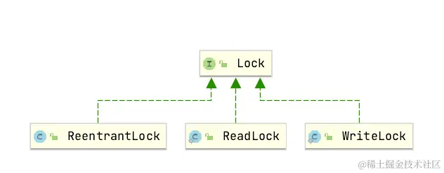
上图的三种实现可以大致分为两个大类，后续我们将基于下表中的两个大类展开详细的介绍。
| 实现 | 锁分类 | 特性 |
|---|---|---|
| ReentrantLock | 可中断锁 | 独占、可重入、支持线程在等待锁的过程中响应中断信号 |
| 公平锁 | 独占、可重入、按照线程请求锁的顺序分配锁，避免线程饥饿 | |
| 非公平锁 | 独占、可重入、不按照线程请求锁的顺序分配锁，允许插队 | |
| ReentrantReadWriteLock | 读锁 | 共享、可重入、允许多个线程同时获取读锁，但阻止写锁 |
| 写锁 | 独占、可重入、只允许一个线程获取写锁，阻止其他读写锁的获取 |
ReentrantLock 是 Java 中提供的一种可重入独占锁。它实现了 Lock 接口，相较于传统的 synchronized 关键字，ReentrantLock 提供了更多的灵活性和额外的功能。ReentrantLock 在一些高并发场景下可能具有更好的性能，但也因为其太过灵活，使用时需要小心处理、避免复杂性。
首先，我们简单了解一下ReentrantLock的主要 API :
- lock()。 无限制地等待，只要拿不到锁就死等，直到获取到锁之后才会向下执行，不可被中断。
- tryLock。 尝试获取锁，能够获取到就返回 true，否则返回 false。
- tryLock(long timeout, TimeUnit unit)。 尝试等待规定的时间获取锁，到达等待时间后返回是否获取到了锁；它有两个返回时机，等待到了锁和等待时间到了。该方法可以被中断。
- lockInterruptibly()。 类似于等待时间无限长的 tryLock，也是一个可以被中断的锁 。
- unlock。 将获取到的锁进行解锁。
我们使用ReentrantLock模拟一个简单的线上购票业务：首先存在一个车票总数，然后开启线程进行购票，要求保证并发购票下，不会出现超卖的现象。
我们首先进行分析：
在这个场景中，谁是临界区？
记住一个理论：多线程会并发修改谁，谁就是临界区数据。在这个例子中，我们会并发修改车票的剩余数量，那么车票的剩余数量就是临界区数据。
在开发中，我们一般会对修改临界区的代码段进行加锁控制，以求多线程环境下对于临界区修改的可控性。
我们现在知道了需要对谁进行加锁，那么我们就可以进行代码编写了：
public class TicketBookingSystem {
public static void main(String[] args) {
TicketCounter ticketCounter = new TicketCounter(20);
// 创建多个线程进行购票操作
Thread thread1 = new Thread(() -> {
for (int i = 0; i < 10; i++) {
ticketCounter.purchaseTicket(1);
}
});
Thread thread2 = new Thread(() -> {
for (int i = 0; i < 10; i++) {
ticketCounter.purchaseTicket(1);
}
});
Thread thread3 = new Thread(() -> {
for (int i = 0; i < 10; i++) {
ticketCounter.purchaseTicket(1);
}
});
thread1.start();
thread2.start();
thread3.start();
try {
thread1.join();
thread2.join();
thread3.join();
} catch (InterruptedException e) {
e.printStackTrace();
}
// 打印最终剩余车票数量
System.out.println( "最后可售门票: " + ticketCounter.getAvailableTickets());
}
}
class TicketCounter {
/**
* 车票的剩余数量
*/
private int availableTickets;
/**
* 锁
*/
private final Lock lock = new ReentrantLock();
public TicketCounter(int totalTickets) {
this.availableTickets = totalTickets;
}
/**
* 购票动作
* @param quantity 购票的数目
*/
public void purchaseTicket(int quantity) {
//加锁
lock.lock();
try {
if (availableTickets >= quantity) {
//模拟购票所需时间
Thread.sleep(500);
availableTickets -= quantity;
System.out.println(Thread.currentThread().getName() + " 购买 " + quantity + " 票； 剩余的票: " + availableTickets);
} else {
System.out.println(Thread.currentThread().getName() + " 购买失败，车票不足" );
}
} catch (Exception e) {
e.printStackTrace();
}finally {
//解锁
lock.unlock();
}
}
/**
* 返回余票的数目
* @return 余票数目
*/
public int getAvailableTickets() {
return availableTickets;
}
}
上述代码中展示了 lock 锁的具体用法，这里需要注意的是：尽量将 lock() 操作放在 try 的上一行，unLock() 一定要放在 finally 里面；lock() 和 unLock() 一定要成对出现，否则会出现死锁问题！
ReentrantLock 有两种构造函数，默认为非公平锁：
Lock lock = new ReentrantLock();
还可以将 ReentrantLock 设置为公平锁模式，这样定义：
Lock lock = new ReentrantLock(true);
trLock() 与 lock() 不同的是：lock() 在获取不到锁的时候会阻塞等待，直至获取到锁为止！trLock() 是尝试获取锁，无论获取到锁与否都会返回一个值，当获取到锁了返回 true，没有获取到锁返回一个 false，使用方式与 lock() 类似。
public class TryLockTest {
public static void main(String[] args) throws InterruptedException {
Task task = new Task();
Thread thread1 = new Thread(task);
Thread thread2 = new Thread(task);
thread1.start();
thread2.start();
thread1.join();
thread2.join();
}
private static class Task implements Runnable {
private final ReentrantLock lock = new ReentrantLock();
@Override
public void run() {
boolean tryLock = lock.tryLock();
if(tryLock) {
try{
System.out.println(Thread.currentThread().getName() + "获取到了锁." );
Thread.sleep(1000);
} catch (InterruptedException e) {
e.printStackTrace();
} finally {
lock.unlock();
}
}else {
System.out.println(Thread.currentThread().getName() + "没有抢占到锁." );
}
}
}
}
tryLock(long timeout, TimeUnit unit)，它与 tryLock() 类似，不同的是，带参数的 tryLock 如果没有获取到锁，不会立即返回值，而是会等待设置的时间，如果等待时间内获取到了锁，则返回 true，没有获取到则返回为 false，而且它可以响应中断信号（有关中断信号后续会详细介绍，这里先学习它的用法）！
public class TryLockTest2 {
public static void main(String[] args) throws InterruptedException {
Task task = new Task();
Thread thread1 = new Thread(task);
Thread thread2 = new Thread(task);
thread1.start();
thread2.start();
thread1.join();
thread2.join();
}
private static class Task implements Runnable {
private final ReentrantLock lock = new ReentrantLock();
@Override
public void run() {
try {
boolean tryLock = lock.tryLock(2, TimeUnit.SECONDS);
//尝试获取锁
if(tryLock) {
try{
System.out.println(Thread.currentThread().getName() + "获取到了锁." );
Thread.sleep(1000);
} catch (InterruptedException e) {
e.printStackTrace();
} finally {
//一定一定不要忘了释放锁
lock.unlock();
}
}else {
System.out.println(Thread.currentThread().getName() + "没有抢占到锁." );
}
}catch (InterruptedException e) {
System.out.println( "tryLock被中断" );
}
}
}
}
我们的这一段代码，演示了如果线程使用lock.tryLock没有获取到锁，则等待两秒，等待期间如果获取到了锁，就返回 true 继续向下执行！
了解了 ReentrantLock 的使用方式之后，这里我们再学习一些 ReentrantLock 更加深入的使用。
公平锁是一种多线程同步机制，它遵循一种公平策略，确保线程按照请求锁的顺序获得锁。具体来说，如果有多个线程在等待锁，公平锁会按照线程请求锁的顺序授予锁的许可，即先来先得的原则。
公平锁会遵循线程请求锁的顺序，确保等待时间较长的线程优先获得锁。公平锁通常维护一个等待队列，其中包含了等待锁的线程。当锁被释放时，从等待队列中选择下一个线程来获得锁，而不是任意选择一个线程。
我们可以尝试用一张图来理解公平锁的定义：
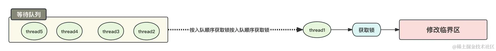
可以看到，公平锁内部维护了一个等待队列，任务会根据请求锁的先后顺序依次进入到队列中，后续这些任务会根据队列的先后顺序去操作临界区。
公平锁的实现也是基于ReentrantLock，我们上文说过，ReentrantLock默认是非公平锁，如果想要改变它，在定义的时候传递一个 true 即可：
protected final static ReentrantLock LOCK = new ReentrantLock(true);
我们计划设计这样一个需求：现在存在 2 个线程，每一个线程在释放锁之后，再次获取一次锁，因为是公平锁的原因，因此线程在释放锁之后再次获取锁会将自己排在任务队列的队尾。这两个线程的执行顺序如下：
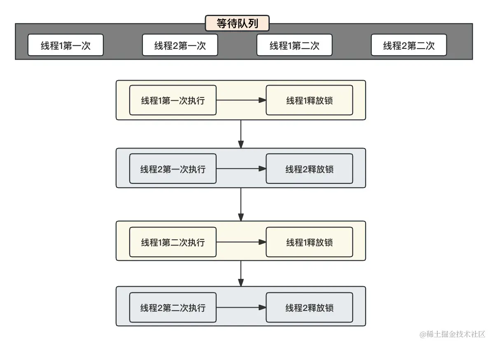
想要演示的结果如上图，我们代码需要按照这样的方式运行，才能达到上图公平锁的特点：
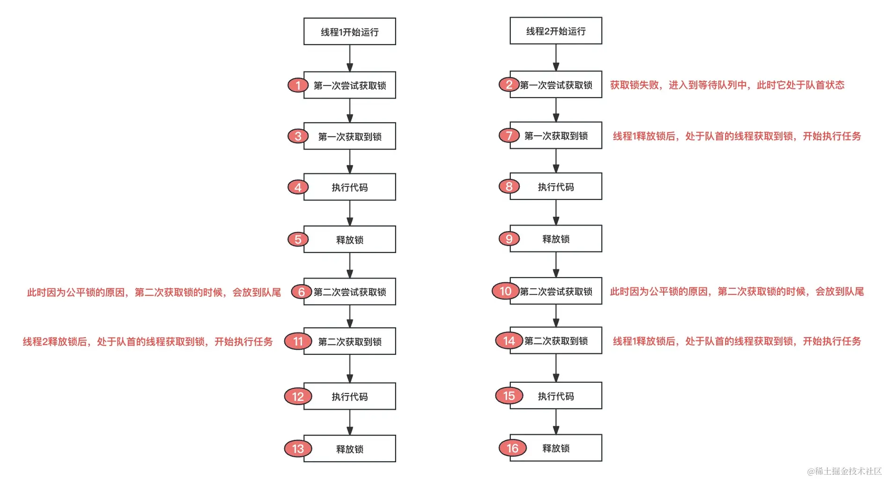
了解了执行顺序后，我们使用公平锁进行运行任务，看执行结果是否与我们设计的执行顺序一致：
public class FairLockTest {
protected final static ReentrantLock LOCK = new ReentrantLock(true);
public static void main(String[] args) throws InterruptedException {
Task target = new Task();
List<Thread> threadList = new ArrayList<>();
for (int i = 0; i < 2; i++) {
Thread thread1 = new Thread(target, "线程" +i);
threadList.add(thread1);
}
for (Thread thread : threadList) {
Thread.sleep(20);
thread.start();
}
}
private static class Task implements Runnable {
@Override
public void run() {
//第一次获取锁
LOCK.lock();
try {
System.out.println(Thread.currentThread().getName() + "获取到了锁." );
try {
Thread.sleep(1000);
} catch (InterruptedException e) {
e.printStackTrace();
}
}finally {
//第一次释放锁
LOCK.unlock();
}
//第二次获取锁
LOCK.lock();
try {
System.out.println(Thread.currentThread().getName() + "获取到了锁." );
try {
Thread.sleep(1000);
} catch (InterruptedException e) {
e.printStackTrace();
}
}finally {
//第二次释放锁
LOCK.unlock();
}
}
}
}
执行结果如下:
线程0获取到了锁.
线程1获取到了锁.
线程0获取到了锁.
线程1获取到了锁.
与我们预期的顺序一致，公平锁最大的特点就是：它能够保证每一个任务都有机会获取锁，谁先申请锁谁就先执行，谁后申请就去排队，就像我们去银行取钱挂号一样，银行的工作人员会根据挂号的先后顺序依次办理业务！
非公平锁与公平锁相反，它不严格遵循公平性原则，而允许在锁释放时，选择任何等待线程来获得锁。
在操作系统中，线程的唤醒也需要消耗时间，如果在唤醒期间突然来了一个线程，那么非公平锁可以立即分配一个锁，而无须让该线程进入等待队列，直接拿到锁，省略了排队这一步。
让我们通过一个例子来更好地理解非公平锁的工作原理：
假设你在医院排队缴费，当轮到你缴费时，你正在低头玩手机。在这时，有一个人插到了你前面，他问缴费窗口药房在哪。他得到答复之后就离开了。接着，轮到你缴费。在这个情况下，你会发现，别人插队这件事并没有很影响你的正常流程。
这个例子说明了非公平锁的行为，它允许等待的线程在释放锁后，后面的线程根据某种策略来获取锁，而不是严格按照先来先服务的原则。这可以提高性能，但可能会导致一些线程在某些情况下等待较长时间。
我们看一下它的定义方式：ReentrantLock 本来就是非公平锁，当然我们也可以显式地指定为 false，false 就是非公平锁。
protected final static ReentrantLock LOCK = new ReentrantLock(false)
我们还是以上面公平锁的例子来说明，由于一个线程会连续获取两次，而非公平锁不会遵循先来后到的原则，所以它会出现以下结果：
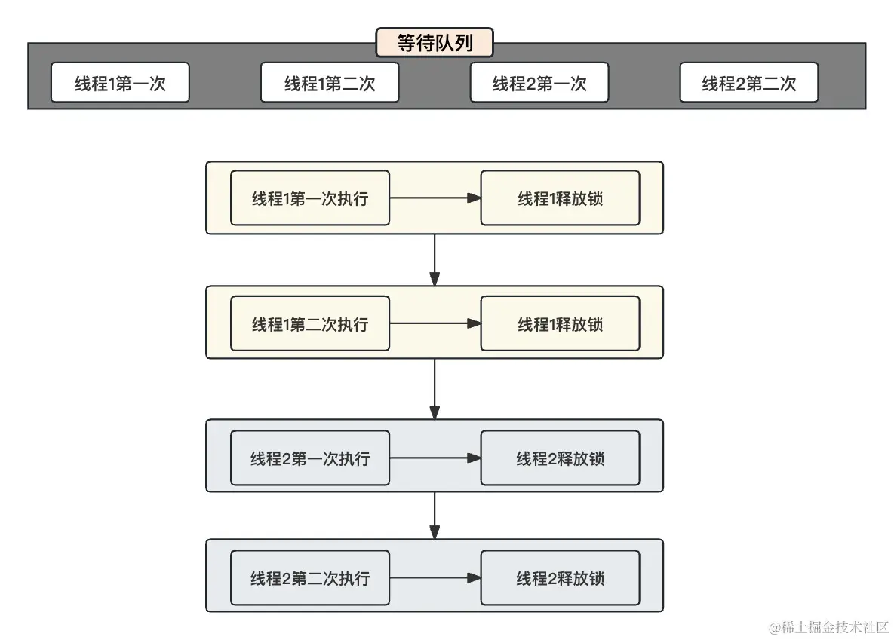
那么它的线程入队逻辑就变成了下图这样：
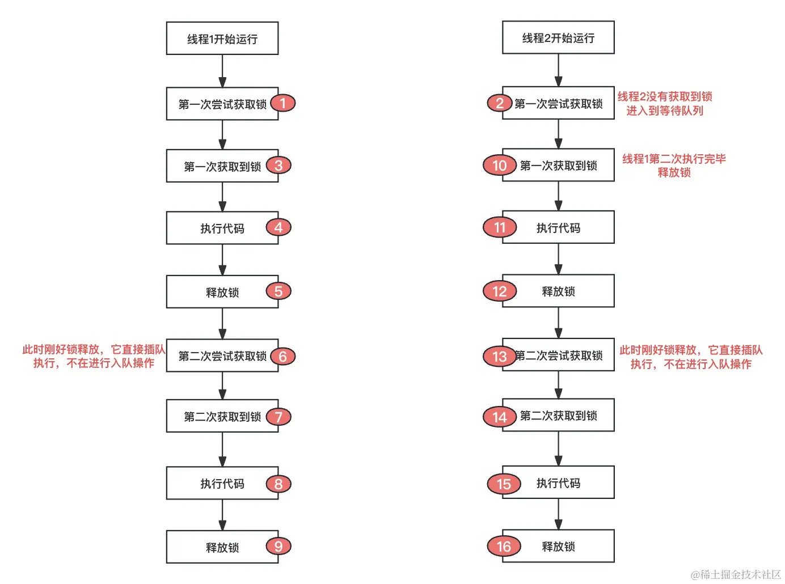
我们可以看到它与公平锁存在本质的区别就是执行顺序。代码与公平锁的代码一致，我们只需要在构建锁之后，指定为非公平锁即可，由于线程 1 释放锁后会立即再次获取一次锁，所以非公平锁会直接让其获取到锁，而非是唤醒等待队列中的锁：
protected final static ReentrantLock LOCK = new ReentrantLock();
非公平锁最大的特点就是当一个任务获取锁的时候，如果恰好前面的线程释放锁，此时当前任务不再进行排队，直接插队执行任务！非公平锁在高并发场景下，会省略大量的唤醒线程的操作，但是极端情况下会造成等待队列中的任务一直被插队一直执行不了！
可中断锁就是线程在等待锁的过程中可以响应中断信号，如果一个线程在等待锁时被中断，它会立即退出等待状态，并抛出 InterruptedException。这种锁的主要目的是提供更好的线程控制，以避免线程在等待锁的过程中无限期地阻塞。
我们设想这样一种场景：线程 A 在等待锁然后处理任务，结果其他的线程将这个任务处理完毕了，此时线程 A 也就不需要等待锁执行这个任务了，所以我们就需要将这个线程 A 获取锁的过程给停止掉，这就是可中断锁。
在 ReentrantLock 中，存在两种可中断锁的 API，tryLock(long timeout, TimeUnit unit) 和lockInterruptibly() 。tryLock 的方式在上面已经给过案例了，这里只演示lockInterruptibly：
public class InterruptReentrantLockTest {
protected final static ReentrantLock LOCK = new ReentrantLock();
public static void main(String[] args) throws InterruptedException {
Task target = new Task();
Thread thread1 = new Thread(target, "线程1" );
Thread thread2 = new Thread(target, "线程2" );
thread1.start();
//睡眠的原因是先尝试让线程1 获取锁
TimeUnit.SECONDS.sleep(1);
thread2.start();
//线程2等待锁的过程中中断等待
thread2.interrupt();
}
private static class Task implements Runnable {
@Override
public void run() {
try {
System.out.println(Thread.currentThread().getName() + "尝试获取锁." );
LOCK.lockInterruptibly();
try {
System.out.println(Thread.currentThread().getName() + "获取到了锁." );
try {
TimeUnit.SECONDS.sleep(5);
} catch (InterruptedException e) {
e.printStackTrace();
}
}finally {
LOCK.unlock();
}
} catch (InterruptedException e) {
System.out.println(Thread.currentThread().getName() + "等待锁的时候被中断,结束等待." );
}
}
}
}
可中断锁的特性就是，它允许人为地将获取锁的过程给强行终止掉！
ReentrantReadWriteLock 是读写锁，它可以用于管理多个线程对共享资源的并发访问。与标准的互斥锁不同，读写锁将锁分为两种类型：读锁（共享锁）和写锁（排他锁）。这种分离的锁类型允许多个线程同时读取共享资源，但在进行写操作时需要排他地获取锁。
从 ReentrantReadWriteLock 中可以衍生出 ReadLock（读锁）和 WriteLock（写锁）。
这里需要注意，写锁是独占锁，写锁持有期间，不允许有其他的读锁或者写锁占有。
简单来说，读锁存在的时候其他线程也可以获取读锁，但是不能获取写锁；写锁存在的时候，其他线程读锁写锁都不允许获取；读锁同时可以有多个，但是写锁同时只能有一个。
下面我们将针对上述的两种锁类型分别介绍。
读锁是共享锁，允许多个线程同时持有读锁：
public class SharedLockTest {
private final static ReentrantReadWriteLock REENTRANT_READ_WRITE_LOCK = new ReentrantReadWriteLock();
/**
* 获取读锁
*/
private final static ReentrantReadWriteLock.ReadLock READ_LOCK = REENTRANT_READ_WRITE_LOCK.readLock();
public static void main(String[] args) {
Task task = new Task();
new Thread(task, "线程1" ).start();
new Thread(task, "线程2" ).start();
new Thread(task, "线程3" ).start();
}
private static class Task implements Runnable {
@Override
public void run() {
System.out.println(Thread.currentThread().getName() + "开始获取数据." );
READ_LOCK.lock();
try {
System.out.println(Thread.currentThread().getName() + "开始读取数据." );
TimeUnit.SECONDS.sleep(3);
System.out.println(Thread.currentThread().getName() + "执行完毕，释放锁." );
} catch (InterruptedException e) {
e.printStackTrace();
} finally {
READ_LOCK.unlock();
}
}
}
}
执行结果如下：
线程1开始获取数据.
线程3开始获取数据.
线程2开始获取数据.
线程1开始读取数据.
线程3开始读取数据.
线程2开始读取数据.
线程3执行完毕，释放锁.
线程1执行完毕，释放锁.
线程2执行完毕，释放锁.
从结果我们可以看到，3 个线程是同时获取到了读锁，并同时执行的，这符合共享锁的定义。
写锁是独占锁，同时只有存在一条线程获取到锁，其余锁必须处于等待写锁的释放：
public class WriteLockTest {
private final static ReentrantReadWriteLock REENTRANT_READ_WRITE_LOCK = new ReentrantReadWriteLock();
/**
* 获取写锁
*/
private final static ReentrantReadWriteLock.WriteLock WRITE_LOCK = REENTRANT_READ_WRITE_LOCK.writeLock();
public static void main(String[] args) {
Task task = new Task();
new Thread(task, "线程1" ).start();
new Thread(task, "线程2" ).start();
new Thread(task, "线程3" ).start();
}
private static class Task implements Runnable {
@Override
public void run() {
System.out.println(Thread.currentThread().getName() + "开始获取锁." );
WRITE_LOCK.lock();
try {
System.out.println(Thread.currentThread().getName() + "获取锁成功开始写入数据." );
TimeUnit.SECONDS.sleep(3);
System.out.println(Thread.currentThread().getName() + "执行完毕，释放锁." );
} catch (InterruptedException e) {
e.printStackTrace();
} finally {
WRITE_LOCK.unlock();
}
}
}
}
最终的执行结果如下：
线程2开始获取锁.
线程2获取锁成功开始写入数据.
线程1开始获取锁.
线程3开始获取锁.
线程2执行完毕，释放锁.
线程1获取锁成功开始写入数据.
线程1执行完毕，释放锁.
线程3获取锁成功开始写入数据.
线程3执行完毕，释放锁.
从结果中可以看到，写锁是独占锁，不允许其他线程共享。其执行顺序也是必须前一个线程释放锁后，后面的线程才能获取到锁。
我们上面单独演示了读锁和写锁的使用，下面我们模拟一个售票的功能，以便于你更加清晰地认识读写锁。
有一个火车购票系统，它有两个功能，可以查询余票和购票。根据功能分析，查询是读操作，适用于读锁；购票时写入，适用于写锁。这里需要注意，读写锁也可以使用公平锁和非公平锁，默认为非公平锁。这里为了方便观察结果，我们暂时将其设置为公平锁（有关它的非公平锁比较特殊，后续我会详细说明），代码如下：
public class BuyTicketReadWriteLock {
private final static ReentrantReadWriteLock REENTRANT_READ_WRITE_LOCK = new ReentrantReadWriteLock(true);
/**
* 获取读锁
*/
private final static ReentrantReadWriteLock.ReadLock READ_LOCK = REENTRANT_READ_WRITE_LOCK.readLock();
/**
* 获取写锁
*/
private final static ReentrantReadWriteLock.WriteLock WRITE_LOCK = REENTRANT_READ_WRITE_LOCK.writeLock();
private static class Task {
/**
* 余票信息
*/
private int remainingVotes;
public Task(int remainingVotes) {
this.remainingVotes = remainingVotes;
}
/**
* 购票
*/
public void buyTicket(){
System.out.println(Thread.currentThread().getName() + "尝试获取写锁，准备购票.");
WRITE_LOCK.lock();
try {
System.out.println(Thread.currentThread().getName() + "获取到写锁，开始购票.");
if(remainingVotes >0) {
remainingVotes--;
Thread.sleep(2000);
System.out.println(Thread.currentThread().getName() + "购票成功，余票减少.");
}else {
System.out.println("剩余票数为:" + remainingVotes + "， 购买失败.");
}
} catch (InterruptedException e) {
e.printStackTrace();
} finally {
WRITE_LOCK.unlock();
}
}
/**
* 查询票
*/
public void selectTicket(){
System.out.println(Thread.currentThread().getName() + "尝试获取读锁，准备查询票.");
READ_LOCK.lock();
try {
System.out.println(Thread.currentThread().getName() + "获取到读锁，当前余票为: " + remainingVotes);
Thread.sleep(1000);
System.out.println(Thread.currentThread().getName() + "查询成功，释放读锁.");
} catch (InterruptedException e) {
e.printStackTrace();
} finally {
READ_LOCK.unlock();
}
}
}
public static void main(String[] args) {
Task task = new Task(4);
new Thread(task::selectTicket, "线程1").start();
new Thread(task::selectTicket, "线程2").start();
new Thread(task::buyTicket, "线程3").start();
new Thread(task::selectTicket, "线程4").start();
}
}
执行结果如下：
线程1尝试获取读锁，准备查询票.
线程2尝试获取读锁，准备查询票.
线程1获取到读锁，当前余票为: 4
线程2获取到读锁，当前余票为: 4
线程3尝试获取写锁，准备购票.
线程4尝试获取读锁，准备查询票.
线程1查询成功，释放读锁.
线程2查询成功，释放读锁.
线程3获取到写锁，开始购票.
线程3购票成功，余票减少.
线程4获取到读锁，当前余票为: 3
线程4查询成功，释放读锁.
通过结果我们可以看到，读锁和写锁是不能共存的，当存在读锁的时候，写锁不允许获取锁，但是读锁查询票是可以并发查的，一旦涉及到写锁，就开始独占，剩余的查询需要等待写锁释放才能获取到读锁！
读写锁也可以设置为非公平锁，ReentrantReadWriteLock 默认就是非公平锁。ReentrantReadWriteLock 默认使用的是非公平锁，如果需要改变类型，需要在构造方法中修改，如下面的代码，就是将它修改为公平锁：
ReentrantReadWriteLock REENTRANT_READ_WRITE_LOCK = new ReentrantReadWriteLock(true);
非公平读写锁的主要特点是在读锁之间不强制遵守请求顺序，但对于写锁，通常仍然会维护一个队列以确保操作的顺序性。这有助于避免写操作与其他读写操作之间的竞争条件和不一致性。
大多数的业务场景都是读多写少，假设非公平读写锁插队逻辑和常规的非公平锁一致，那么极端情况下就会出现这样一种情况，源源不断的读锁过来读取数据，导致写锁迟迟得不到执行！ 所以，非公平读写锁主要针对读锁的设置。当锁的等待队列的头部是写锁时，不允许读锁插队，即写锁有更高的优先级。这样可以确保写锁不会长时间等待，以避免写操作的等待时间过长。
我们使用一张图来帮助你理解：
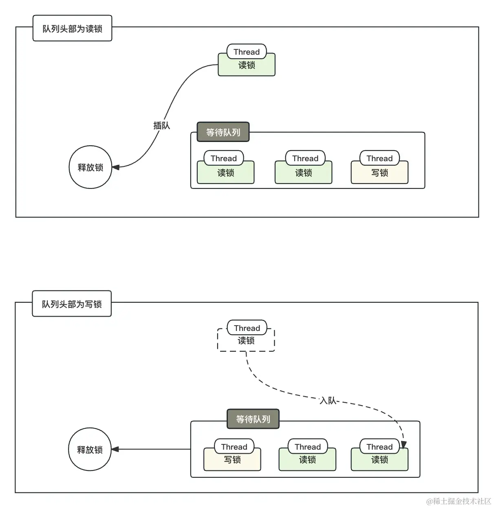
通过图可以看到，当队头为读锁的时候，允许插队，当队头为写锁的时候，不允许插队。
我们上面介绍的 ReentrantLock、ReentrantReadWriteLock 都是可重入锁，可重入锁的特性就是同一个线程可以多次获取已经持有的锁。
比如，我们使用 ReentrantLock，在一个加锁的方法中调用另外一个加锁的方式，此时内层方法不会进入等待状态而是直接获取到锁：
public class ReentrantLockExample {
/**
* 创建一个可重入锁
*/
private final ReentrantLock lock = new ReentrantLock();
public static void main(String[] args) {
ReentrantLockExample example = new ReentrantLockExample();
example.outerMethod();
}
// 外层方法
public void outerMethod() {
lock.lock(); // 获取锁
try {
System.out.println("线程："+Thread.currentThread().getName() + "外层加锁成功; 此时加锁次数为:" + lock.getHoldCount());
System.out.println("线程："+Thread.currentThread().getName() + "; 外层方法开始执行");
innerMethod(); // 调用内层方法
System.out.println("线程："+Thread.currentThread().getName() + "; 外层方法执行结束");
} finally {
lock.unlock(); // 释放锁
System.out.println("线程："+Thread.currentThread().getName() + "外层方法释放锁成功; 此时加锁次数为:" + lock.getHoldCount());
}
}
// 内层方法
public void innerMethod() {
//获取锁不会被阻塞
lock.lock();
try {
System.out.println("线程："+Thread.currentThread().getName() + "内层加锁成功; 此时加锁次数为:" + lock.getHoldCount());
System.out.println("线程："+Thread.currentThread().getName() + "; 内层方法执行");
System.out.println("线程："+Thread.currentThread().getName() + "; 内层方法结束");
} finally {
lock.unlock(); // 释放锁
System.out.println("线程："+Thread.currentThread().getName() + "内层方法释放锁成功; 此时加锁次数为:" + lock.getHoldCount());
}
}
}
运行结果如下：
线程：main外层加锁成功; 此时加锁次数为:1
线程：main; 外层方法开始执行
线程：main内层加锁成功; 此时加锁次数为:2
线程：main; 内层方法执行
线程：main; 内层方法结束
线程：main内层方法释放锁成功; 此时加锁次数为:1
线程：main; 外层方法执行结束
线程：main外层方法释放锁成功; 此时加锁次数为:0
从结果也可以看出，内层方法是没有等待外层方法的锁释放的，而是直接获取到锁。
在 ReentrantLock 内部维护了一个加锁的次数，可重入锁每加锁一次，加锁次数 +1，每释放一次锁，加锁次数 -1，当加锁次数为 0 的时候，该线程彻底释放这个锁。可以通过 getHoldCount 来获取加锁次数。
在本章节中，我们不仅深入研究了Lock接口的基础使用，还从各种特性出发，详细介绍了Lock的两种重要衍生特性。
首先，我们聚焦于ReentrantLock，它是一种可重入锁，允许线程在持有锁的情况下多次进入同一个锁保护的代码块。我们详细讨论了ReentrantLock的使用方法、锁的获取和释放机制，以及与传统synchronized关键字相比的一些优势，例如更灵活的锁定和可中断性。
进一步地，我们还探究了ReentrantReadWriteLock，这是由ReentrantLock衍生出的读写锁。我们详细分析了读写锁的设计理念，以及它如何在允许多个线程同时读取数据的同时，确保写操作的互斥性。通过对读写锁的深入了解，我们能够更好地在不同场景下选择适当的锁，以优化程序的并发性能。
通过本章的学习，相信你对Lock接口及其衍生特性应该有了更全面、深入的认识。这些知识将为你在实际开发中处理复杂的多线程场景提供更灵活、更高效的工具和策略。
在本章节，我们将深入学习线程的并发流程控制，这是一个非常重要的主题。这些概念的关键作用在于协调和管理线程之间的执行，以实现更有效地控制并发流程。通过掌握这一章节的内容，我们将能够在未来的开发工作中更加灵活地安排线程的执行顺序，从而更好地掌握并发编程的技巧。
控制并发流程的重要性在于它有助于开发人员更容易地让线程之间协作，以满足业务逻辑的要求。在本章节中，我们将介绍四个重要的类，它们分别是：CountDownLatch、CyclicBarrier、Semaphore和Condition。
这些类提供了不同的机制和工具，以满足不同的并发编程需求。例如，CountDownLatch用于等待一组线程完成特定任务，CyclicBarrier用于等待一组线程达到某个同步点，Semaphore用于控制同时访问共享资源的线程数量，Condition用于在锁的基础上实现更复杂的线程协作。
通过深入了解这些类的使用方式，能够帮助你更好地应对并发编程中的各种挑战。
CountDownLatch 在中文里面有“倒计时”的意思，它允许一个或多个线程等待一组操作完成后再继续执行。它的名字暗示着一个 计数器，它被初始化为一个正整数，当计数器的值达到零时，等待的线程可以继续执行。
它在多线程编程中非常有用，特别是在协调多个线程完成某项任务时。一些常见的应用场景包括：等待线程池中的所有任务完成、多个线程协作执行某个操作、等待多个服务初始化完成等。
我们在学习它之前先了解一下它主要的 API。
构造方法：
CountDownLatch COUNT_DOWN_LATCH = new CountDownLatch(5);
上面代码构造函数中，传递的数值就是计数器的总数量。
注意：这个 await 方法跳出阻塞的条件有三个。
- CountDownLatch 的计数变为 0。
- 设置了超时时间，且到达了超时时间，此时 await 会跳出循环，这里它不会存在任何异常。
- 线程被中断，此时 await 同样会跳出等待，并抛出异常：
InterruptedException。
CountDownLatch中计数器的数量减 1，countDown 通常与 await 配合使用，以达到线程编排的目的。CountDownLatch的剩余次数，当CountDownLatch的次数变成 0 的时候，再次调用 countDown 也依旧是 0，不会变成负数。学习了它的基础 API 的使用之后，这里我们学习一下它的基础使用。
为了加深你的印象，我们设想这样一种场景：
现在公司有一个需求，需要 4 名程序员在获取到产品经理的原型和 PRD 后才能开始开发，开发完成后开始安排 1 名运维上线。
我们分析下这个需求：
需求分析完了，我们开始根据上面的需求开发代码：
public class DevelopCountDownLatchTest {
private final static ThreadPoolExecutor EXECUTOR = new ThreadPoolExecutor(10, 20, 60, TimeUnit.SECONDS, new ArrayBlockingQueue<>(100), Executors.defaultThreadFactory(), new ThreadPoolExecutor.AbortPolicy());
/**
* 产品经理的工作进度
*/
protected final static CountDownLatch DEMAND_COUNT = new CountDownLatch(1);
/**
* 开发人员进度的计数器
*/
protected final static CountDownLatch DEVELOP_COUNT = new CountDownLatch(4);
public static void main(String[] args) throws Exception {
EXECUTOR.execute(new ProjectDevelop("java小红"));
EXECUTOR.execute(new ProjectDevelop("java小绿"));
EXECUTOR.execute(new ProjectDevelop("java小蓝"));
EXECUTOR.execute(new ProjectDevelop("java小紫"));
EXECUTOR.execute(new ProjectDemandPrd("需求小王"));
EXECUTOR.execute(new OperationUp("运维奇奇"));
}
/**
* 运维上线的任务
*/
private static class OperationUp implements Runnable {
private final String name;
private OperationUp(String name) {
this.name = name;
}
@Override
public void run() {
try {
System.out.println(name + "正在等待开发完成...");
//运维开始等待项目开发完毕上线
DEVELOP_COUNT.await();
System.out.println("项目开发完毕，运维" + name + "开始上线.");
System.out.println("上线成功..");
} catch (Exception e) {
e.printStackTrace();
}
}
}
/**
* 需求设计PRD原型的任务
*/
private static class ProjectDemandPrd implements Runnable {
private final String name;
private ProjectDemandPrd(String name) {
this.name = name;
}
@Override
public void run() {
try {
System.out.println(name + "产品经理此时正在紧张的设计原型和PRD.....");
TimeUnit.SECONDS.sleep(3);
System.out.println(name + "原型设计完毕.");
} catch (InterruptedException e) {
e.printStackTrace();
} finally {
DEMAND_COUNT.countDown();
}
}
}
/**
* 开发们开发代码的任务
*/
private static class ProjectDevelop implements Runnable {
private final String name;
private ProjectDevelop(String name) {
this.name = name;
}
@Override
public void run() {
try {
System.out.println(name + "正在等待产品经理的原型和PRD...");
DEMAND_COUNT.await();
System.out.println(name + "获取到了原型和PRD，开始开发.");
Thread.sleep((long) (Math.random() * 10000));
System.out.println(name + "开发完毕.");
} catch (InterruptedException e) {
e.printStackTrace();
} finally {
DEVELOP_COUNT.countDown();
}
}
}
}
我们看最终的结果：
java小红正在等待产品经理的原型和PRD...
java小绿正在等待产品经理的原型和PRD...
java小蓝正在等待产品经理的原型和PRD...
java小紫正在等待产品经理的原型和PRD...
需求小王产品经理此时正在紧张的设计原型和PRD.....
运维奇奇正在等待开发完成...
需求小王原型设计完毕.
java小红获取到了原型和PRD，开始开发.
java小紫获取到了原型和PRD，开始开发.
java小蓝获取到了原型和PRD，开始开发.
java小绿获取到了原型和PRD，开始开发.
java小紫开发完毕.
java小蓝开发完毕.
java小红开发完毕.
java小绿开发完毕.
项目开发完毕，运维运维奇奇开始上线.
上线成功..
任务被编排的与我们的预期相同。
在实际的应用场景中，我们还可以使用 CountDownLath 做一些简单的压力测试，比如我们准备 100 个线程，让它们同时处于 await 状态，在所有的线程全部准备好之后，再统一地使用 countDown 放行。这也是典型的“多等一”的场景。
注意：如果使用await等待锁，则必须保证countDown能够被正常的执行，因为正常情况下，CountDownLath 不会自动释放，否则会出现服务卡死的问题，就像案例中将 countDown 放在 finally 中以保证它能够被百分之百执行。
CyclicBarrier 和 CountDownLath 的功能有相似之处，它们都用于协调一组线程的执行，等待线程计数器递减至 0 后再执行后续操作。
不同于 CountDownLatch，CyclicBarrier 在所有线程完成计算任务（计数器归零）时，会触发内部的回调函数执行额外的操作。CyclicBarrier 是一个强大的工具，适用于需要多个线程在不同阶段协同工作的情况，并提供了内部回调功能来执行额外操作，以实现更高级的并发编程控制。
CountDownLatch 一旦计数器减为零，就无法再次使用，适用于一次性的等待任务。计数器归零后，无法重置或重新使用。相比之下，CyclicBarrier 更具灵活性。当 CyclicBarrier 的计数器归零时，你可以通过reset()方法重新设置计数器，使其可以在后续的同步点中再次使用。
同样，我们在学习 CyclicBarrier 之前，先对它的主要 API 进行学习。
TimeoutException 异常。值得注意的是，若其中一个线程在等待过程中抛出了 TimeoutException 异常，这将引起其他所有线程在调用 await 时抛出BrokenBarrierException异常。此时，CyclicBarrier 进入不可用状态，必须调用 reset 方法对其进行重置，方可继续使用。这种机制确保在超时或异常情况下，程序能够及时恢复到正常的同步状态。BrokenBarrierException 异常。这样 CyclicBarrier 就可以重新进入可用状态，允许后续的线程再次使用它进行同步。在学习了基础的 API 之后，我们接着开始学习它的基础使用。
对于 CyclicBarrier 而言，它存在两种定义方式。
CyclicBarrier barrier = new CyclicBarrier(2);
CyclicBarrier barrier = new CyclicBarrier(2, new Runnable() {
@Override
public void run() {
System.out.println("栅栏已经被全部释放");
}
});
回调的意义是：当所有线程调用 await 的数量达到了 CyclicBarrier 设置的阈值的时候，会优先触发该回调后再向下执行各自的回调，后面我会给详细的案例演示。
我们先举一个简单的例子，来初步学习它的使用。
假设今天是周六，公司要求今天统一去公司集合，然后人到齐之后一起坐车去团建！！！要求所有员工必须先全部到公司集合，人到齐后再一块儿去目的地团建。
public class DineTest {
private final static ThreadPoolExecutor EXECUTOR = new ThreadPoolExecutor(10, 20, 60, TimeUnit.SECONDS, new ArrayBlockingQueue<>(100), Executors.defaultThreadFactory(), new ThreadPoolExecutor.AbortPolicy());
/**
* 小伙伴
*/
private static final CyclicBarrier BUDDY_CUNT = new CyclicBarrier(4, new Runnable() {
@Override
public void run() {
System.out.println("人都到齐了，出发去团建;每一个人都很开心，脸上挂着幸福的笑容.");
System.out.println("公司班车开始发往目的地...");
try {
Thread.sleep((long) (Math.random() * 10000));
} catch (InterruptedException e) {
e.printStackTrace();
}
System.out.println("两个小时后...");
}
});
public static void main(String[] args) {
EXECUTOR.execute(new EmployeeAct("打工人1号"));
EXECUTOR.execute(new EmployeeAct("打工人2号"));
EXECUTOR.execute(new EmployeeAct("打工人3号"));
EXECUTOR.execute(new EmployeeAct("打工人4号"));
}
/**
* 公司任务
*/
private static class EmployeeAct implements Runnable {
private final String name;
private EmployeeAct(String name) {
this.name = name;
}
@Override
public void run() {
try {
System.out.println(name + "出发前往公司.");
Thread.sleep((long) (Math.random() * 10000));
System.out.println(name + "到达公司");
BUDDY_CUNT.await();
System.out.println(name + "经过2个小时的车程，到达了目的地");
} catch (Exception e) {
e.printStackTrace();
}
}
}
}
我们查看一下它的执行结果：
打工人2号出发前往公司.
打工人4号出发前往公司.
打工人3号出发前往公司.
打工人1号出发前往公司.
打工人2号到达公司
打工人1号到达公司
打工人3号到达公司
打工人4号到达公司
人都到齐了，出发去团建;每一个人都很开心，脸上挂着幸福的笑容.
公司班车开始发往目的地...
两个小时后...
打工人4号经过2个小时的车程，到达了目的地
打工人2号经过2个小时的车程，到达了目的地
打工人1号经过2个小时的车程，到达了目的地
打工人3号经过2个小时的车程，到达了目的地
从上面的例子我们可以简单了解到，回调的执行时机是 CyclicBarrier 计数器归 0 之后，回调执行完毕后，才会执行 await 方法后面的动作。
假设我们有一个更为复杂的场景，我们采用它的回调功能将所有的步骤都编织起来执行：
现在公司有一个需求，需要 4 名程序员在获取到产品经理的原型和 PRD 后才能开始开发，开发完成需要 1 名测试完成常规的测试后再安排 1 名运维上线服务。
我们具体分析下这个需求：
与CountDownLatch那个需求不同的是，我们在开发完成后需要测试人员先进行测试，提测完成之后才能进行上线。我们采用 CyclicBarrier 需要将每一步任务都当作上一个任务完成的回调，从而将所有任务关联起来！
具体细节我们可以看代码：
public class DevelopAndTestCountDownLatchTest {
private final static ThreadPoolExecutor EXECUTOR = new ThreadPoolExecutor(10, 20, 60, TimeUnit.SECONDS, new ArrayBlockingQueue<>(100), Executors.defaultThreadFactory(), new ThreadPoolExecutor.AbortPolicy());
/**
* 产品经理
*/
private static final CyclicBarrier PRD_COUNT = new CyclicBarrier(1, new StartDevelop());
/**
* 开发人员
*/
private static final CyclicBarrier DEVELOP_COUNT = new CyclicBarrier(4, new TestCode());
/**
* 测试人员
*/
private static final CyclicBarrier TEST_COUNT = new CyclicBarrier(1, new OperationTopLineCode());
public static void main(String[] args) throws BrokenBarrierException, InterruptedException {
System.out.println("产品经理此时正在紧张的设计原型和PRD.....");
TimeUnit.SECONDS.sleep(3);
System.out.println("原型设计完毕.");
PRD_COUNT.await();
}
/**
* 产品经理资料准备齐全后的回调
*/
private static class StartDevelop implements Runnable {
@Override
public void run() {
EXECUTOR.execute(new DevelopCode("java小红"));
EXECUTOR.execute(new DevelopCode("java小绿"));
EXECUTOR.execute(new DevelopCode("java小蓝"));
EXECUTOR.execute(new DevelopCode("java小紫"));
}
}
/**
* 开发人员开始进行开发代码
*/
private static class DevelopCode implements Runnable {
private final String name;
private DevelopCode(String name) {
this.name = name;
}
@Override
public void run() {
try {
System.out.println(name + "开始开发代码.......");
Thread.sleep((long) (Math.random() * 10000));
System.out.println(name + "完成了代码开发！");
//等待其他人完成开发
DEVELOP_COUNT.await();
} catch (Exception e) {
e.printStackTrace();
}
}
}
/**
* 测试人员的测试任务
*/
private static class TestCode implements Runnable {
@Override
public void run() {
try {
System.out.println("开发人员全部都开发完成了，测试人员开始测试.");
Thread.sleep((long) (Math.random() * 10000));
System.out.println("测试人员完成测试，服务没有问题，可以准备上线了.");
TEST_COUNT.await();
} catch (Exception e) {
e.printStackTrace();
}
}
}
/**
* 运维上线代码
*/
private static class OperationTopLineCode implements Runnable{
@Override
public void run() {
try {
System.out.println("检测到测试完成，运维开始上线代码");
Thread.sleep((long) (Math.random() * 10000));
System.out.println("上线完成");
//上线完成后关闭线程池
EXECUTOR.shutdown();
} catch (Exception e) {
e.printStackTrace();
}
}
}
}
执行结果如下：
产品经理此时正在紧张的设计原型和PRD.....
原型设计完毕.
java小红开始开发代码.......
java小绿开始开发代码.......
java小蓝开始开发代码.......
java小紫开始开发代码.......
java小红完成了代码开发！
java小绿完成了代码开发！
java小紫完成了代码开发！
java小蓝完成了代码开发！
开发人员全部都开发完成了，测试人员开始测试.
测试人员完成测试，服务没有问题，可以准备上线了.
检测到测试完成，运维开始上线代码
上线完成
在上面的例子中，我们将开发人员开始开发代码的时机当作了 PRD 设计完成时的回调，将测试测试代码当作了开发完成开发的回调，将运维上线当作了测试完毕的回调，进而将所有的任务关联了起来，完成了需求！
Semaphore（信号量）是一个用于控制并发访问资源的同步工具，它允许多个线程在同一时刻访问共享资源，但限制了可以同时访问资源的线程数量。
Semaphore维护一个计数器，该计数器表示可用的许可证数量，线程在访问资源前必须先获取许可证。如果许可证数量耗尽，后续的线程必须等待其他线程释放许可证，以便获得访问权。
我们可以近似地将 Semaphore 理解为是一个 令牌桶，它可以规定同时能有多少线程访问资源，只有在令牌桶内申请到令牌的人才可以访问资源。
Semaphore提供了两个主要操作：
acquire()：当一个线程想要获得一个许可证时，它可以调用acquire()方法。如果许可证可用，线程将获得许可证并继续执行。如果许可证不可用，线程将被阻塞，直到有许可证可用为止。release()：当一个线程完成对资源的访问后，它应该调用release()方法来释放许可证，使其他线程可以获得访问权。Semaphore可以初始化为指定的许可证数量，通常用于控制并发资源的访问。这使得开发人员能够更好地管理并发访问，避免资源争夺和竞争条件。
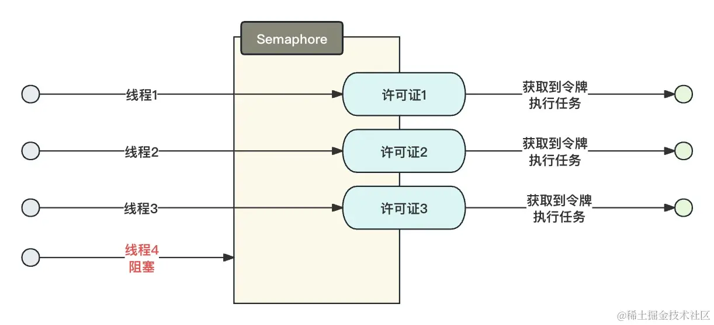
我们先介绍一下它的主要的 API。
true，表示成功获取；如果许可证不可用，tryAcquire()方法会立即返回false，而不会阻塞线程。线程可以根据返回值来判断是否成功获取许可证。假设我们现在有一个任务，它在执行的时候消耗的系统资源比较大，我们的服务器经过测试一次最多执行两个任务：
public class SemaphoreTest {
private final static ThreadPoolExecutor EXECUTOR = new ThreadPoolExecutor(10, 20, 60, TimeUnit.SECONDS, new ArrayBlockingQueue<>(100), Executors.defaultThreadFactory(), new ThreadPoolExecutor.AbortPolicy());
/**
* 同时只能存在两个令牌
*/
private static final Semaphore SEMAPHORE = new Semaphore(2, true);
public static void main(String[] args) throws Exception {
for (int i = 0; i < 5; i++) {
EXECUTOR.execute(new Task());
}
}
private static class Task implements Runnable {
@Override
public void run() {
try {
//申请许可证
SEMAPHORE.acquire();
System.out.println(Thread.currentThread().getName() + "获取到了许可证，开始运行. ");
Thread.sleep((long) (Math.random() * 10000));
System.out.println(Thread.currentThread().getName() + "运行结束. ");
} catch (InterruptedException e) {
e.printStackTrace();
}finally {
//释放许可证
SEMAPHORE.release();
}
}
}
}
当需要对线程访问资源的并发数量和速率进行精确控制时，Semaphore提供了一种有效的解决方案。在实际应用场景中，我们可以将Semaphore用于实现令牌桶算法，确保请求只有在成功获取令牌的情况下才能被转发到服务上。这种方式不仅有效地控制了并发访问速率，还可以防止资源的过度消耗，保护服务的稳定性和可用性。
Semaphore作为一个强大的工具，使我们能够在复杂的网络环境中实现精细的流量控制，从而更好地满足各种应用的需求。
我们在学习 ReentrantLock 的时候并未提起 Condition，主要是我想放在这一章节中讲会更加的合适。
Condition是 Java 并发编程中的一种重要工具，通常与 ReentrantLock 或 ReentrantReadWriteLock 配合使用，用于管理线程的等待和通知机制。Condition允许线程在满足特定条件之前等待，以实现更复杂的同步控制。
Condition的主要特点和用途包括：
Condition允许线程在等待某个条件变为真之前暂停执行（等待状态），并在条件满足时恢复执行（通知状态）。这有助于线程之间的协调和同步。ReentrantLock 可以关联多个 Condition，每个 Condition 可以表示不同的等待和通知条件。这使得更复杂的同步控制可以更容易地实现。wait() 和 notify() 方法相比，Condition提供了更灵活的等待和通知机制，可以在不同条件下等待或通知线程，而不会导致竞态条件或死锁。Condition允许开发人员在特定条件下等待，以避免不必要的等待和提高性能。它的创建主要依托于 ReetrantLock 或者 ReentrantReadWriteLock。我们以 ReentrantLock 为例，创建方式如下：
private final static ReentrantLock LOCK = new ReentrantLock();
/**
* 创建等待条件
*/
private final static Condition CONDITION = LOCK.newCondition();
我们还是老方式，先介绍它的主要 API。
LOCK.lock();加锁块中使用，否则会抛出IllegalMonitorStateException异常。我们模拟这样一种使用场景：假设有一个停车场，该停车场有 4 个停车位。车辆可以进入到停车场停车，如果当前停车位已满，车辆就需要等待停车位。
代码如下：
public class ParkingLot {
private final static ThreadPoolExecutor EXECUTOR = new ThreadPoolExecutor(10, 20, 60, TimeUnit.SECONDS, new ArrayBlockingQueue<>(100), Executors.defaultThreadFactory(), new ThreadPoolExecutor.AbortPolicy());
private final static ReentrantLock LOCK = new ReentrantLock();
private final static Condition CONDITION = LOCK.newCondition();
/**
* 停车场总位置数量
*/
private final int totalParkingSpaces;
/**
* 已经停了多少量
*/
private int occupiedSpaces = 0;
public ParkingLot(int totalParkingSpaces) {
this.totalParkingSpaces = totalParkingSpaces;
}
public static void main(String[] args) {
ParkingLot parkingLot = new ParkingLot(5);
for (int i = 0; i < 10; i++) {
EXECUTOR.execute(new CarActive(parkingLot, "车辆"+i));
}
}
/**
* 尝试进入停车场
*/
public void park(String name){
LOCK.lock();
try {
if(occupiedSpaces >= totalParkingSpaces){
// 如果停车场已满，等待
System.out.println(name + ": 车辆等待停车位...");
// 开始等待车位
CONDITION.await();
}
// 有停车位，抢到了 将已经占用的数量+1
occupiedSpaces++;
System.out.println(name + ": 车辆成功停车，剩余的停车位:" + (totalParkingSpaces - occupiedSpaces));
} catch (InterruptedException e) {
e.printStackTrace();
} finally {
LOCK.unlock();
}
}
/**
* 驶离停车场
*/
public void bearOff(String name){
LOCK.lock();
try {
// 离开停车场 将已占用的数量-1
occupiedSpaces--;
System.out.println(name + ": 车辆离开停车场，剩余停车位: " + (totalParkingSpaces - occupiedSpaces));
// 通知等待的车辆有空位了
CONDITION.signal();
}finally {
LOCK.unlock();
}
}
private static class CarActive implements Runnable {
private final ParkingLot parkingLot;
private final String name;
private CarActive(ParkingLot parkingLot, String name) {
this.parkingLot = parkingLot;
this.name = name;
}
@Override
public void run() {
try {
parkingLot.park(name);
Thread.sleep((long) (Math.random() * 10000));
parkingLot.bearOff(name);
} catch (InterruptedException e) {
e.printStackTrace();
}
}
}
}
执行结果如下：
车辆0: 车辆成功停车，剩余的停车位:3
车辆2: 车辆成功停车，剩余的停车位:2
车辆1: 车辆成功停车，剩余的停车位:1
车辆4: 车辆成功停车，剩余的停车位:0
车辆5: 车辆等待停车位...
车辆3: 车辆等待停车位...
车辆4: 车辆离开停车场，剩余停车位: 1
车辆5: 车辆成功停车，剩余的停车位:0
车辆0: 车辆离开停车场，剩余停车位: 1
车辆3: 车辆成功停车，剩余的停车位:0
车辆1: 车辆离开停车场，剩余停车位: 1
车辆3: 车辆离开停车场，剩余停车位: 2
车辆2: 车辆离开停车场，剩余停车位: 3
车辆5: 车辆离开停车场，剩余停车位: 4
注意：Condition 与 ReentrantLock 一定是成对出现的，我上面的代码采用的是 signal 来释放的锁，如果采用 signalAll 那么最终的运行结果就会错误，因为它是唤醒全部线程去停车，那么临界区的已停数量就会计算错误。
在本章节中，我们深入讲解了并发编程中的四个重要工具：CountDownLatch、CyclicBarrier、Semaphore 和 Condition，并为每一个工具提供了详细的 API 方法和清晰的用例示例，旨在帮助开发者更好地理解和运用这些关键组件。
这些工具在多线程编程中发挥着重要作用，可协助实现线程之间的协调、资源控制、等待和唤醒操作，从而构建更可靠和高效的并发应用程序。
通过深入理解这些工具的特性和使用方式，开发者能够编写更加健壮和可扩展的多线程代码，提高应用程序的性能和可维护性。这为应对并发编程中的挑战提供了有力的工具和方法。
在之前的章节中，我们已经介绍了线程的并发安全问题，这些问题往往由于多个线程竞争访问同一个临界资源而引发。
为了确保临界区的数据正确性，我们主要学习了两种方式来解决并发安全问题：一种是使用final关键字，使数据只允许读取不允许修改；另一种是使用锁机制，以确保在同一时刻只有一个线程可以修改临界区的数据。
本节中我们将介绍第三种保证线程安全的方式，即ThreadLocal。
无论是使用final还是锁，它们的核心目标都是防止多个线程同时修改同一个临界区。但是否有一种更加轻量级和高效的方法呢？我们可以考虑每个线程都维护一个自己的“临界区”，其中每个线程只能访问自己的“临界区”，这样是否能够避免多个线程同时访问同一个临界区呢？
ThreadLocal正是基于这一思路而来的，它将临界变量存放到每个线程的副本中，从而有效地避免了并发安全问题的出现。
ThreadLocal，也称为线程局部变量，是 Java 中一种特殊的变量类型，为每个线程提供独立的变量副本，实现了线程间的数据隔离。它主要应用于解决多线程环境下对共享资源的并发访问问题，同时避免了显式锁机制的复杂性，提高了程序的并发性能和可维护性。
通过ThreadLocal，每个线程可以访问自己独立的变量副本，彼此之间不会相互干扰，从而有效地规避了竞态条件和锁竞争问题，为多线程数据共享提供了更轻量级和安全的解决方案。
在接下来的内容中，我们将对ThreadLocal进行全面的探讨，包括其使用方式、原理解析、实际应用场景、可能存在的缺陷，以及针对这些缺陷的解决方案。
相信通过学习本章节的内容，你将能够轻松掌握ThreadLocal的应用，并在实际开发环境中充分利用它的优势。
ThreadLocal 的线程隔离特性是它的核心特点之一，它使得每个线程都可以拥有独立的变量副本，不受其他线程的影响。
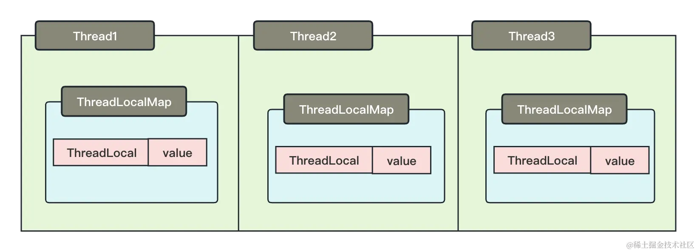
从上图可以了解到，ThreadLocal 存在于每一条线程中，这意味着每个线程都有自己独立的 ThreadLocal 实例，因此不会存在多个线程同时竞争或干扰同一个 ThreadLocal 的操作。这特性为线程安全提供了强大的支持，因为每个线程可以在自己独立的 ThreadLocalMap 中存储自己的数据，而不必担心其他线程的影响。
可能这么说还不太好理解，我们尝试用一个例子说明这个能力。
在 Java 原生提供的时间格式化工具SimpleDateFormat，它是一个线程不安全的工具类，当出现多线程并发使用同一个 SimpleDateFormat 的时候，时间格式化就会出现问题。
我们看代码：
public class SimpleDateFormatErrorTest {
private final static ThreadPoolExecutor EXECUTOR = new ThreadPoolExecutor(10, 20, 60, TimeUnit.SECONDS, new ArrayBlockingQueue<>(1000), Executors.defaultThreadFactory(), new ThreadPoolExecutor.AbortPolicy());
static final SimpleDateFormat simpleDateFormat = new SimpleDateFormat("yyyy-MM-dd HH:mm:ss");
public static void main(String[] args) {
for (int i = 0; i < 1000; i++) {
int finalI = i;
EXECUTOR.execute(() ->{
System.out.println(simpleDateFormat.format(new Date(finalI * 1000)));
});
}
}
}
在介绍这段代码之前，让我们先了解时间戳的规则，这是我们在日常工作中经常使用的。
通常，我们使用
System.currentTimeMillis()来获取时间戳，它返回的是毫秒数。当时间戳为 0 时，代表的是 1970 年 1 月 1 日 00:00:00（协调世界时，UTC）这一刻，这个时刻被称为“Unix 纪元”，起源于 Unix 操作系统的设计。由于中国位于
东八区，相对于协调世界时（UTC）我们快了 8 小时，因此我们使用的是UTC+8时区。因此，在中国，当时间戳为 0 时，实际代表的时间是 1970 年 1 月 1 日 08:00:00。
理解了时间戳的定义后，我们来看上述代码的问题。我们从 0 开始计算，每次打印 0 秒代表的时间、1 秒代表的时间、2 秒代表的时间……以此类推，按照我们初步的分析可得，因为每一次都 +1 操作，所以我们使用 simpleDateFormat 所格式化的时间一定不会一致。但是事与愿违，它会出现重复的时间：
出现这个问题就是因为 SimpleDateFormat 不是线程安全的。所以，我们在开发中规定多线程使用 SimpleDateFormat 的时候，必须要保证每次使用前都 new 一个新实例！
那么我们如何使用 ThreadLocal 使其变得可以在多线程环境下使用呢？假设，我们让每一个线程内部都自己持有一个 SimpleDateFormat，是否就能解决问题呢？
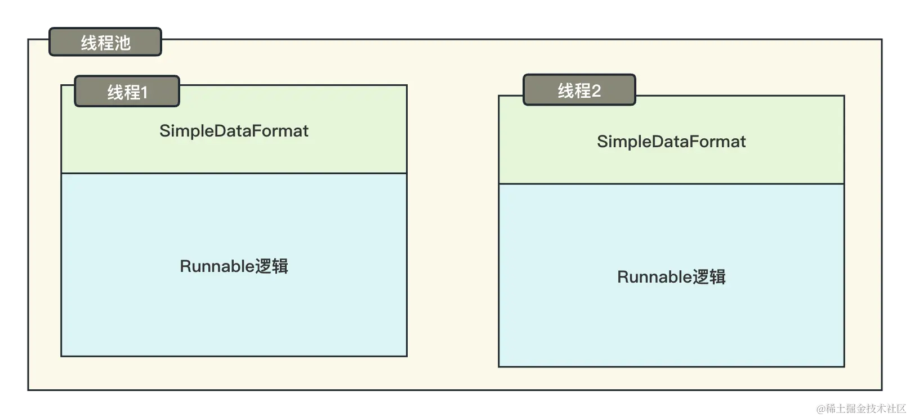
按照上图，我们每一个线程都老老实实地使用自己的 SimpleDataFormat，那么临界区就不会存在并发问题了；那么竞态条件也就不存在了，当竞态条件不存在，并发安全问题也就被顺理成章地解决了。
我们使用代码展示一下：
public class SimpleDateFormatSuccessTest {
private final static ThreadPoolExecutor EXECUTOR = new ThreadPoolExecutor(10, 20, 60, TimeUnit.SECONDS, new ArrayBlockingQueue<>(1000), Executors.defaultThreadFactory(), new ThreadPoolExecutor.AbortPolicy());
public static void main(String[] args) {
for (int i = 0; i < 1000; i++) {
int finalI = i;
EXECUTOR.execute(() ->{
//从当前的线程中获取一个simpleDateFormat
SimpleDateFormat simpleDateFormat = SimpleDataFormatCache.getSimpleDateFormat();
System.out.println(simpleDateFormat.format(new Date(finalI * 1000)));
});
}
}
}
class SimpleDataFormatCache {
/**
* 构建一个ThreadLocal 并在每次调用get方法返回为空的时候调用创建SimpleDateFormat的初始化方法
*/
private static final ThreadLocal<SimpleDateFormat> SIMPLE_DATA_FORMAT_CACHE = ThreadLocal.withInitial(() -> new SimpleDateFormat("yyyy-MM-dd HH:mm:ss"));
public static SimpleDateFormat getSimpleDateFormat(){
return SIMPLE_DATA_FORMAT_CACHE.get();
}
public static void setSimpleDateFormat(SimpleDateFormat simpleDateFormat){
SIMPLE_DATA_FORMAT_CACHE.set(simpleDateFormat);
}
public static void removeSimpleDateFormat(){
SIMPLE_DATA_FORMAT_CACHE.remove();
}
}
我们可以对比一下，与上文不同的是，这里的代码不在所有线程复用一个 SimpleDateFormat，而是每次使用的时候从当前线程的缓存中获取，从而避免了并发操作 SimpleDateFormat 所导致的数据错乱！
这就是典型的线程隔离的特性，在实际的应用场景：
正如之前所讨论的，ThreadLocal 存在于每个线程中，使每个线程能够持有独立的 ThreadLocal 实例，这有助于在当前线程内轻松获取 ThreadLocal 的值。
让我们通过一个例子来进一步说明这一点。
在日常的 Web 开发中，我们经常需要获取当前登录用户的信息和权限。如果不使用 ThreadLocal，我们需要从数据库或缓存中查询用户信息，然后通过方法参数层层传递，最终将用户信息传递到需要的地方。这种情况下，代码可能会变得冗长和复杂。
如果我们在请求开始的时候，比如在前置拦截器中获取请求头中的用户信息，将用户信息从 db 或者缓存中查询之后放到 ThreadLocal 中，那么在后续所有的方法中，都可以从该上下文中获取用户信息。
我们尝试用代码模拟一个在拦截器中拦截用户信息，并传递到线程上下文的例子：
public class ThreadLocalParameterPassing {
private final static ThreadPoolExecutor EXECUTOR = new ThreadPoolExecutor(10, 20, 60, TimeUnit.SECONDS, new ArrayBlockingQueue<>(1000), Executors.defaultThreadFactory(), new ThreadPoolExecutor.AbortPolicy());
public static void main(String[] args) {
InterceptorTest interceptorTest = new InterceptorTest();
ControllerTest controllerTest = new ControllerTest();
EXECUTOR.execute(() ->{
try{
//调用前置拦截
interceptorTest.beforeInterceptor(1);
//执行controller逻辑
controllerTest.deleteById(10);
}finally {
//调用后置拦截
interceptorTest.afterInterceptor();
}
});
EXECUTOR.execute(() ->{
try{
//调用前置拦截
interceptorTest.beforeInterceptor(2);
//执行controller逻辑
controllerTest.deleteById(11);
}finally {
//调用后置拦截
interceptorTest.afterInterceptor();
}
});
}
}
class InterceptorTest {
/**
*
* 前置拦截
* 模拟从请求头中获取userId
* @param userId 用户的名称
*/
public void beforeInterceptor(int userId){
//模拟查询数据库或者缓存
User user;
if(1 == userId) {
user = new User("小红", userId, "北京市朝阳区");
}else {
user = new User("小绿", userId, "北京市海淀区");
}
UserContext.setUser(user);
}
/**
* 后置拦截
*/
public void afterInterceptor(){
//删除本次线程缓存
UserContext.removeUser();
}
}
class ControllerTest {
public void deleteById(Integer id) {
ServiceTest serviceTest = new ServiceTest();
serviceTest.deleteById(id);
}
}
class ServiceTest {
public void deleteById(Integer id) {
User user = UserContext.getUser();
try {
System.out.println(user.getName() + "开始删除数据...");
TimeUnit.SECONDS.sleep(2);
System.out.println(user.getName() + "删除成功...");
writeLog(true, "成功");
} catch (InterruptedException e) {
e.printStackTrace();
writeLog(false, e.getMessage());
}
}
public void writeLog(boolean success, String errorMessage){
User user = UserContext.getUser();
System.out.printf("开始记录日志：用户%s根据id删除了某个东西，结果是:%s, 信息是:%s%n", user.getName(), success, errorMessage);
}
}
/**
* 构建用户上下文
*/
class UserContext {
private static final ThreadLocal<User> USER_CONTEXT = new ThreadLocal<>();
public static User getUser(){
return USER_CONTEXT.get();
}
public static void setUser(User user){
USER_CONTEXT.set(user);
}
public static void removeUser(){
USER_CONTEXT.remove();
}
}
class User {
private String name;
private Integer userId;
private String address;
public User(String name, Integer userId, String address) {
this.name = name;
this.userId = userId;
this.address = address;
}
篇幅原因，删除get/set方法 读者自行添加......
}
我们模拟了一个拦截器拦截用户信息的例子，注意代码中后置拦截器是将 ThreadLocal 删除了的。在日后的开发工作中，使用完毕 ThreadLocal 一定不要忘记删除这个缓存，否则可能会出现内存泄漏的问题，后面有详细讲解。
我们上面介绍了两个特性，那么 ThreadLocal 是如何做到线程隔离的呢？
通过上面的图示能够看出来，它之所以能够做到线程隔离，是因为它是存在于线程内部的。我们看下相关源码：
public class Thread implements Runnable {
ThreadLocal.ThreadLocalMap inheritableThreadLocals = null;
}
从源码中可以看到，在线程的内部是存在一个 ThreadLocalMap 的，它是一个关键的存在，内部可以存储多个 ThreadLocal。存储结构如下图所示：
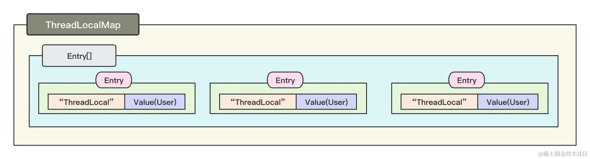
它首先会将 ThreadLocal 与要缓存的值包装成一个 Entry，然后将 ThreadLocal 哈希运算出数组索引后，追加到数组中，最终在一个 Thread 中就存在了一个 ThreadLocal 的引用！
在初次接触 ThreadLocal 时，我曾有一个疑问：为什么需要使用数组来存储多个 ThreadLocal 实例？难道不可以只使用一个吗？
实际上，在一个线程内可以存在多个 ThreadLocal 实例。举例来说，我们可以同时使用两个 ThreadLocal，一个用于存放用户信息，另一个用于存放权限信息。这就导致在 ThreadLocalMap 中存在多个 ThreadLocal 实例的映射。
下面，我们将结合源码来一起揭开 ThreadLocal 的真面目。
首先，我们看它的 set 方法，看它究竟是如何与线程关联起来的。
public void set(T value) {
//获取当前的线程
Thread t = Thread.currentThread();
//从当前的线程中获取ThreadLocalMap
ThreadLocalMap map = getMap(t);
if (map != null) {
//如果不为空，直接将数据放到map中
map.set(this, value);
} else {
//如果为空则创建map，并将数据放到map中去
createMap(t, value);
}
}
可以看到，它是直接获取的当前的线程，然后从当前线程中获取我们上文提到的 theadLocalMap，最后进行的写入。具体流程如下：
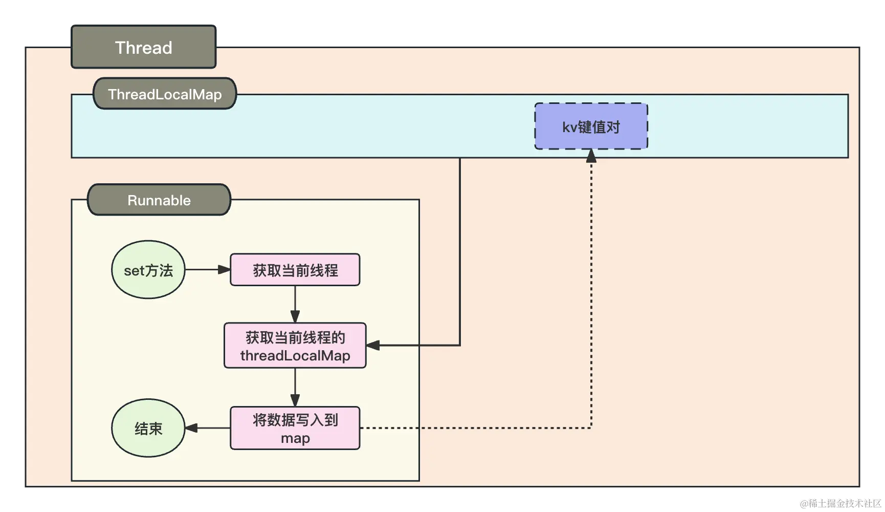
那么，如何从线程中获取 ThreadLocal 的值呢？我们再关注一下 get 方法的源码：
public T get() {
//获取当前线程
Thread t = Thread.currentThread();
//获取线程中的map
ThreadLocalMap map = getMap(t);
if (map != null) {
//将自身当作key 获取值
ThreadLocalMap.Entry e = map.getEntry(this);
if (e != null) {
@SuppressWarnings("unchecked")
T result = (T)e.value;
return result;
}
}
//如果map为空，则获取初始化方法 前面simpleDateFormat的例子上有演示该方法
return setInitialValue();
}
get 方法与 set 方法的逻辑很相似，也是从当前线程中获取 map，然后 hash 运算计算出位置之后，再获取数组里面的值并返回。
相信大家在网上学习 ThreadLocal 的时候，恐怕看到的最多的就是：ThreadLocal 的设计问题会导致内存泄漏。
内存泄漏这个关键词太亮眼了，所谓的内存泄漏并不是说一旦发生内存泄漏，程序就会出现 OOM 这种重大事故。
假设有一个 static 的 map 成员变量，我们向里面 put 了一个数据，然后我们使用完这个数据后没有删除这个数据，也没有定义自动清理它的功能，这也叫内存泄漏！
用完的数据、没有用的数据但是却没有删除，白白占用着内存空间就是内存泄漏问题！
理解了这个，我们来分析：ThreadLocal 真的就那么容易产生内存泄漏问题吗？
我们先分析下所谓的内存泄漏导致的原因。细心的同学应该能够看到，我在介绍 ThreadLocalMap 的时候，对 Entry 中的 ThreadLocal 打了一个引号！因为 Entry 被定义为了一个弱引用，一个对象当只剩下弱引用指向一个对象时，垃圾回收器通常会在适当的时机回收这个对象。
我们看下 Entry 的定义：
static class Entry extends WeakReference<ThreadLocal<?>> {
/** The value associated with this ThreadLocal. */
Object value;
Entry(ThreadLocal<?> k, Object v) {
super(k);
value = v;
}
}
可以看到，Entry 是一个 WeakReference 的实现，在 Entry 中，ThreadLocal 也就是我们前文分析的 key，调用了 super 方法被传递到了弱引用的构造器中，而 value 被一个成员变量存储是一个强引用！明晰了 key 为弱饮用、value 为强引用，那么我们如果要分析内存泄漏的问题，就必须知道弱引用到底是一个什么东西。
我们根据下图来一起分析一下：
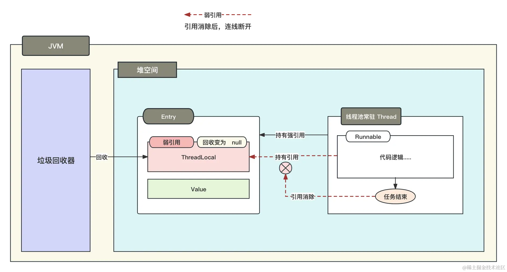
上图比较复杂，我们分析下，ThreadLocalMap 的生命周期是根据 Thread 的生命周期来的，如果线程运行完就销毁，那么内存泄漏也不存在！但是事实上我们生产环境中，不可能不使用线程池，线程池创建的核心线程基本都是常驻线程，常驻线程的生命周期是永久性的，所以 ThreadLocalMap 中的数据只要你不删除，那么它就是永久性存在的！
如上图，Runable 持有的是 Entry 的强引用，在 Entry 中，key 为弱引用，Value 为强引用，正常运行中 JVM 不会强制回收被 Thread 持有的强引用，当 Runable 运行完毕后，Runable 所持有的 ThreadLocal 引用会被释放，此时 Entry 中就存在了一个 key 为弱引用的数据。当一个对象只剩下弱引用的时候，JVM 就会回收这个对象，回收完成后，此时的 key 就会等于 null。
为什么要设计为弱引用呢？
我们在上文分析过，ThreadLocal 是和线程挂钩的，当一个线程的任务运行完毕后，ThreadLocal 的值就再也用不上了，因为它只服务于这个线程里面的任务，任务都运行完了，那么 ThreadLocal 的存在就没有用了。正是考虑到这个问题，所以 JVM 希望在一个任务运行完毕后，ThreadLocal 能够自己清理掉一部分无用数据以节省内存！
那么，ThreadLocal 是如何自己清理这一部分无用数据的呢？我们分析一下 set 方法：
private void set(ThreadLocal<?> key, Object value) {
....
if (!cleanSomeSlots(i, sz) && sz >= threshold)
//重新进行哈希运算
rehash();
}
rehash 中会调用 reset 方法，reset 方法又会调用 resize 方法，最终在 reset 方法中会做 key 的清理：
private void resize() {
....
for (int j = 0; j < oldLen; ++j) {
Entry e = oldTab[j];
if (e != null) {
ThreadLocal<?> k = e.get();
//如果key为空
if (k == null) {
//将value也设置为空 以方便value被jvm回收
e.value = null; // Help the GC
} else {
....
}
}
}
....
}
我们在调用 set/get/remove/rehash 任意一个方法，ThreadLocal 都会验证 key 是否为 null，如果确实是 key 为 null，则将 value 也设置为 null。这样 value 的强引用就被断开了，value 就会被 JVM 回收。
事实上，我们通过分析可以得知，弱引用的设计恰恰就是为了帮我们解决内存泄漏的问题的，弱引用的存在能够使得对象在使用完毕后自动将 key 变为 null，从而使得 ThreadLocal 能够发现这些 key 为 null 的数据然后清除的。
但是因为 ThreadLocalMap 是定义在 Thread 中的，而 Thread 又是线程池里面的线程，是一个不会停止的线程，所以导致 ThreadLocalMap 永远也不会释放。我们在使用 ThreadLocal 往里面 set 值的时候如果不调用 set/get/remove/rehash 任意一个方法，那么就会导致 ThreadLocalMap 中的 null -> value 即使已经完全没有作用，但是这辈子也不会被释放的问题！
注意，即使我们不使用线程池也绕不开这个问题，你不主动使用线程池但是你所用的 Tomcat 里面用的有线程池呀，一个请求被分发到 controller 这个过程其实就对应着一个 Tomcat 线程池中的线程执行任务的过程！
所以，在使用过程中一定要注意：使用完毕后调用 remove 删除！使用完毕后调用 remove 删除！使用完毕后调用 remove 删除！重要的事情说三遍。
我们通篇文字，都强调了一个问题，ThreadLocal 是和当前线程绑定的，它不支持跨线程。如在 A 线程上给 ThreadLocal 设置了值为 1，在 B 线程获取这个值获取的为 null！因为 1 只存在于 A 线程上！
下面演示一个反例：
public class NullThreadLocal {
private final static ThreadLocal<Integer> THREAD_LOCAL = new ThreadLocal<>();
public static void main(String[] args) {
THREAD_LOCAL.set(1);
System.out.println("线程：" + Thread.currentThread().getName() + "获取到数据为:" + THREAD_LOCAL.get());
new Thread(()->{
System.out.println("线程：" + Thread.currentThread().getName() + "获取到数据为:" + THREAD_LOCAL.get());
}, "子线程").start();
}
}
最终能够得到结果：
线程：main获取到数据为:1
线程：子线程获取到数据为:null
可以看到，不同的线程是无法相互获取值的，原因上面也分析过，因为它是线程隔离的。那么如果我们想要在子线程上也适用 ThreadLocal 的值，则需要重新设置：
public class ChildThreadLocal {
private final static ThreadLocal<Integer> THREAD_LOCAL = new ThreadLocal<>();
public static void main(String[] args) {
THREAD_LOCAL.set(1);
System.out.println("线程：" + Thread.currentThread().getName() + "获取到数据为:" + THREAD_LOCAL.get());
//获取主线程的值
Integer integer = THREAD_LOCAL.get();
new Thread(()->{
//设置到子线程
THREAD_LOCAL.set(integer);
System.out.println("线程：" + Thread.currentThread().getName() + "获取到数据为:" + THREAD_LOCAL.get());
}, "子线程").start();
}
}
执行结果如下：
线程：main获取到数据为:1
线程：子线程获取到数据为:1
这里我会将生产环境中的一些实际截图拿出来，帮助你更好地应用 ThreadLocal。
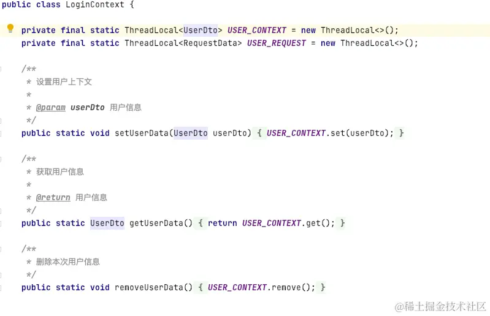
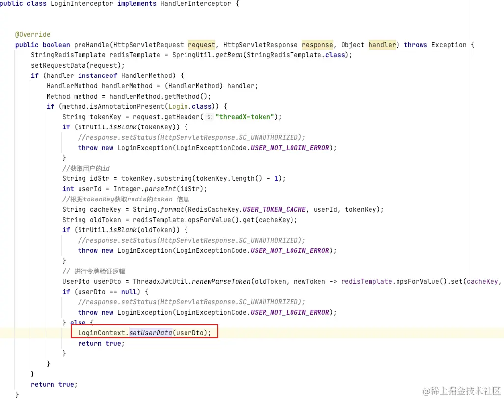
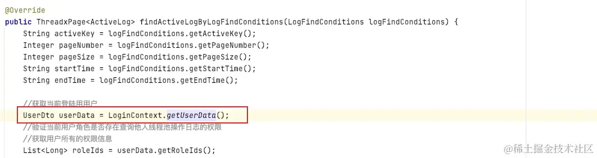
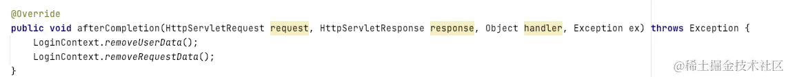
在 Spring 中同样对于 ThreadLocal 有一个广泛的运用，比如使用 ThreadLocal 存储 RequestAttributes，它内部存放了各种与请求相关的信息：
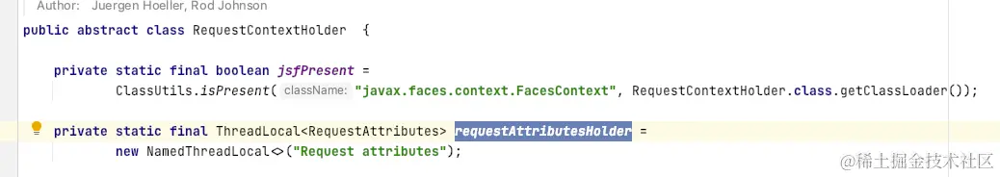
尝试获取请求中的参数信息：
在本章节中，我们详细学习了 ThreadLocal。
我们深入探讨了 ThreadLocal 的使用、原理、注意事项和实际应用案例，为开发者提供了全面的指导。在实际开发中，使用 ThreadLocal 需要理解其内部的工作机制，包括数据的存储和清理过程，这样才能更好地管理和利用 ThreadLocal。
ThreadLocal 是一个很有用的工具，用于实现线程间数据隔离，但也需要小心使用，以避免潜在的内存泄漏问题。
理解 ThreadLocal 的工作方式，包括底层的数据结构和清理机制，对于开发者来说至关重要。只有通过清晰的认知，开发者才能更好地管理 ThreadLocal 的当前状态，确保它的使用在多线程环境中是安全和可靠的。
总之，ThreadLocal 是多线程环境下的一个重要工具，它可以用于实现线程安全的数据隔离和上下文传递。掌握 ThreadLocal 的原理和最佳实践将有助于编写高效、可维护的多线程应用程序。
CAS 是 “Compare and Swap”（比较并交换）的缩写，是一种多线程编程中用来实现同步操作的技术。CAS 操作通常用于解决多线程并发访问中，在共享数据时的竞态条件问题。
在 Java 中， CAS 操作主要通过 java.util.concurrent.atomic 包中的原子类来实现，比如AtomicInteger、AtomicLong、AtomicReference等。
CAS 操作的基本思想是，比较数据的当前值与期望值是否相等，如果相同，则正式更新数据。这个比较和修改操作是一个原子操作，因此它可以确保在多线程环境下，只有一个线程能够成功地进行更新操作，避免了竞态条件。如果比较失败（即当前值与期望值不相等），CAS 操作会返回失败，此时可以选择重试或者采取其他策略来处理。
让我们一起回顾一下出现并发安全问题的条件：出现竞态条件和无规则地修改临界区。我们既然在解决并发问题，那么竞态条件就无法避免，因此我们需要着重解决“无规则地修改临界区”这个问题。前面我们介绍的锁机制用于解决这个问题，但在对性能要求非常高的场景下，锁有时显得性能不足，这时我们需要一种无锁化的模式来提高程序性能。
本章节我们将对 CAS，包括使用 CAS 原理做的一些工具类，做一个详细的介绍。
总体来讲，CAS 的优势有如下：
人无完人，CAS 也一样，它也是有劣势的，如下：
CAS 的原理是基于硬件提供的原子性操作，通常涉及到特定的 CPU 指令。CAS 操作是一种乐观锁机制，它用于解决多线程并发访问共享数据时的竞态条件问题。
下面我们简单分析一下 CAS 的原理。
读取操作：CAS 操作首先读取内存位置的当前值，这是基于硬件提供的原子性操作。这个值将被用于后续比较和更新步骤。比较操作：CAS 会将读取的当前值与预期值（也称为期望值）进行比较。如果当前值等于预期值，则说明没有其他线程在读取或修改这个内存位置的数据，此时 CAS 操作可以继续执行。更新操作：如果比较操作成功（当前值等于预期值），CAS 会使用新值来更新内存位置的内容。这个更新操作是原子的，操作系统确保了不会存在多个线程同时修改这个内存位置的值。失败和重试：如果比较操作失败（当前值不等于预期值），CAS 会返回一个失败标志，表明其他线程已经修改了内存位置的值。在这种情况下，通常需要根据应用的需要来决定如何处理失败，可以选择重试 CAS 操作，或者采取其他策略来解决竞态条件问题。CAS 操作是原子的，要么成功，要么失败，不会出现中间状态。它不需要显式地加锁，因为硬件确保了 CAS 操作的原子性。这使得 CAS 操作在高并发场景中非常有用，因为多个线程可以同时尝试执行 CAS 操作，只有一个线程会成功，其他线程需要重试或采取其他操作。
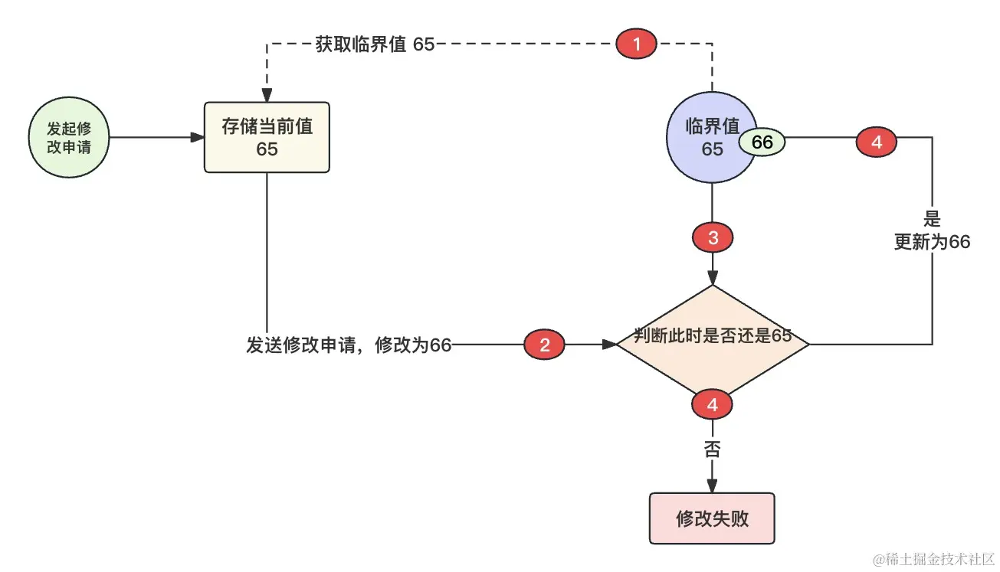
上图是一个简单的 CAS 流程，注意里面的比较、修改操作都是借助于操作系统来进行的（原子操作）。在 Java 中，JVM 虽然无法直接修改操作系统，但是 Java 可以借助于 Unsafe 来进行操作，Unsafe 工具类可以直接操作 JVM 之外的内存。在 NIO 中，所谓的堆外内存，其实也是基于 Unsafe 来进行操作的。关于 Unsafe 的学习，大家可以查阅资料学习，本章节不做太多讲解。
AtomicXXXX 是 JDK 为我们提供的一组原子工具类，其中主要运用的原理就是 CAS 操作，后续我们将对 JDK 目前常用的 Atomic 原子类做一个具体的学习。
AtomicInteger 是一个应用于 int 值进行加减操作的原子类，一般实际开发场景中用于计数器的实现，主要 API 如下：
- incrementAndGet：对当前值累加 1 后返回。
- getAndIncrement：返回当前值后，对当前值加 1。
- getAndAdd：返回当前值，并对数据累加一个自定义的数值，减法可以传递负值。
- addAndGet：累加一个自定义的数值，减法可以传递负值，然后返回操作后的值。
- decrementAndGet：对当前变量减 1 后返回数据。
- getAndDecrement：返回当前数据，然后对当前数据减 1。
- compareAndSet(int expect, int update)：如果是期望值，则改成要修改的值。比如
expect=1 update =2，当程序发现当前的累加值是 1 的话，就将当前的累加值变为 2；如果不是 1 则不修改；返回值为是否修改成功。
在了解了 AtomicInteger 的 API 的作用后，我们针对累加操作做一个具体的演示，使用两个线程针对一个数据进行累加操作：
public class AtomicIntegerTest {
protected static AtomicInteger atomicInteger = new AtomicInteger();
public static void main(String[] args) throws InterruptedException {
Thread thread = new Thread(new Task());
Thread thread1 = new Thread(new Task());
thread.start();
thread1.start();
thread.join();
thread1.join();
System.out.println(atomicInteger.get());
}
private static class Task implements Runnable {
@Override
public void run() {
for (int i = 0; i < 100000; i++) {
//累加并返回
atomicInteger.incrementAndGet();
}
}
}
}
在 JDK 提供的工具包中，AtomicInteger、 AtomicLong 的用法很相似，所以针对于 AtomicLong 这里不做过多的演示，你可自行探索。
AtomicBoolean 主要用于多线程环境下条件的判断，内部只存在 true 和 false 两个值。
我在工作中遇到过这样一个场景：某个 Socket 服务在启动的时候只能启动一次，可以使用 AtomicBoolean 来避免一个服务重复启动两次的场景。
我们使用这个场景来编写一个案例：
public class AtomicBooleanTest {
protected static AtomicBoolean atomicBoolean = new AtomicBoolean(false);
public static void main(String[] args) {
new Thread(new Task()).start();
new Thread(new Task()).start();
new Thread(new Task()).start();
new Thread(new Task()).start();
}
private static class Task implements Runnable {
@Override
public void run() {
if (atomicBoolean.compareAndSet(false, true)) {
System.out.println(Thread.currentThread().getName() + "开始启动服务");
try {
Thread.sleep(2000);
} catch (InterruptedException e) {
e.printStackTrace();
}
System.out.println(Thread.currentThread().getName() + "启动服务占用8080端口");
}else {
System.out.println(Thread.currentThread().getName() + "服务已经被启动了，无须在再次启动");
}
}
}
}
结果如下：
Thread-0开始启动服务
Thread-2服务已经被启动了，无须在再次启动
Thread-1服务已经被启动了，无须在再次启动
Thread-3服务已经被启动了，无须在再次启动
Thread-0启动服务占用8080端口
AtomicReference 与 AtomicInteger、 AtomicLong、 AtomicBoolean 的功能基本一致，我们在日常开发过程中不可能只有数值类型的参数，而 AtomicReference 是可以对引用类型的对象提供原子性的操作。它允许多线程安全地更新引用对象，避免竞态条件问题。
注意：AtomicReference本身可以用于确保引用的原子性操作，但它不会保证引用对象中的属性的线程安全。AtomicReference只能保证引用的替换、获取等操作是原子的，但不会处理引用对象内部状态的线程安全性。
AtomicReference 的用法实际上与 AtomicBoolean 十分相似，我们还是先介绍主要的 API。
AtomicReference<V>()：无参构造函数，创建一个初始引用值为null对象。AtomicReference<V>(V initialValue)：可以传递一个希望变为原子引用的对象。V get()：获取当前原子对象的值。void set(V newValue)：设置当前原子对象的值。V getAndSet(V newValue)：先获取旧的原子值，再将新的设置到 AtomicReference 中。boolean compareAndSet(V expect, V update)：比较当前对象中的引用值与期望值（expect）是否相等，如果相等，则将对象中引用的值更新为新值（update），返回true表示更新成功，否则返回false表示更新失败。这是一个常用的原子操作，用于实现乐观锁的模式。我们尝试使用一个简单的案例来说明它的使用方法，使用 compareAndSet 来进行比对，如果数据等于预期值则更新，否则不更新：
public class AtomicReferenceTest {
public static void main(String[] args) {
AtomicReference<String> atomicReference = new AtomicReference<>();
//设置一个值
atomicReference.set("abcd");
//获取一个值
System.out.println(atomicReference.get());
//比较后更新
System.out.println(atomicReference.compareAndSet("abcd", "hf"));
//获取值
System.out.println(atomicReference.get());
}
}
我们还可以尝试 AtomicReference 来实现一个自旋锁的操作。
想法是这样的：加锁的时候使用 AtomicReference 判断是否为空，为空就将当前线程设置进去，同时加锁成功；解锁的时候判断 AtomicReference 中是否是当前的线程，如果是，当前的线程则设置为 null，同时解锁成功。
public class SpinLockDemo {
private AtomicReference<Thread> atomicReference = new AtomicReference<>();
/**
* 加锁操作
*/
public void lock(){
//获取当前线程
Thread thread = Thread.currentThread();
//判断 是不是有线程持有锁，如果锁为空，则将当前线程分配锁！否则自旋
while (!atomicReference.compareAndSet(null, thread)) {
System.out.println(Thread.currentThread().getName() + "尝试重新获取锁");
}
}
/**
* 解锁操作
*/
public void unLock(){
//获取当前线程
Thread thread = Thread.currentThread();
//如果是当前线程 就将当前线程设为null 解锁
atomicReference.compareAndSet(thread, null);
}
public static void main(String[] args) throws InterruptedException {
Task task = new Task(new SpinLockDemo());
Thread thread1 = new Thread(task,"线程1");
Thread thread2 = new Thread(task,"线程2");
Thread thread3 = new Thread(task,"线程3");
thread1.start();
thread2.start();
thread3.start();
thread1.join();
thread2.join();
thread3.join();
System.out.println("此时值为:" + task.i);
}
private static class Task implements Runnable{
int i = 0;
private final SpinLockDemo spinLockDemo;
private Task(SpinLockDemo spinLockDemo) {
this.spinLockDemo = spinLockDemo;
}
@Override
public void run() {
spinLockDemo.lock();
try {
for (int j = 0; j < 100000; j++) {
i++;
}
}finally {
spinLockDemo.unLock();
}
}
}
}
我们看最终的结果，也是能够保证线程安全的：
线程1获取到锁
线程3尝试重新获取锁
线程2尝试重新获取锁
线程2尝试重新获取锁
线程2尝试重新获取锁
线程2获取到锁
线程3尝试重新获取锁
线程3尝试重新获取锁
线程3获取到锁
此时值为:300000
AtomicXXXArray 包括 AtomicIntegerArray、AtomicLongArray、AtomicReferenceArray，它是一个原子数组，在该类的原子数组都能够实现线程安全的原子操作。
我们首先了解一下它的主要 API。
AtomicIntegerArray(int length)：构造函数，创建一个包含指定长度的AtomicIntegerArray，并初始化所有元素为 0。AtomicIntegerArray(int[] array)：构造函数，创建一个包含与给定整数数组相同长度的AtomicIntegerArray，并将其初始化为与给定数组相同的值。get(int index)：获取指定索引位置的元素的值，返回一个普通的整数值，不具备原子性。set(int index, int newValue)：将指定索引位置的元素设置为新的值，这个操作是原子性的。getAndSet(int index, int newValue)：获取指定索引位置的元素的当前值，并将其设置为新的值，返回的是设置之前的值。compareAndSet(int index, int expect, int update)：比较指定索引位置的元素的当前值与期望值（expect），如果相等，将该元素的值更新为新值（update），返回true表示更新成功，false表示更新失败。getAndIncrement(int index)：获取指定索引位置的元素的当前值，并将其自增，返回的是自增前的值。getAndDecrement(int index)：获取指定索引位置的元素的当前值，并将其自减，返回的是自减前的值。getAndAdd(int index, int delta)：获取指定索引位置的元素的当前值，并将其加上指定的增量（delta），返回的是加操作前的值。incrementAndGet(int index)：自增指定索引位置的元素的值，并返回自增后的值。decrementAndGet(int index)：自减指定索引位置的元素的值，并返回自减后的值。addAndGet(int index, int delta)：将指定索引位置的元素加上指定的增量（delta），并返回加操作后的值。我们使用 AtomicIntegerArray 来做演示，这里我们还是以一个案例为切入点去学习它的使用。
假设有这样一个场景，我们有 20 组线程，每一组线程都有两个线程 A 和 B，A 线程对数组内所有的值 +1，线程 B 对数组内所有的值 -1。那么我们最终等待线程运行完毕之后，尝试获取数组内的元素，在线程安全的情况下，此时数组内的数据应该全部都为 0。
public class AtomicIntegerArrayTest {
public static void main(String[] args) throws InterruptedException {
AtomicIntegerArray atomicIntegerArray = new AtomicIntegerArray(1000);
List<Thread> threadList = new ArrayList<>(40);
IncrementTask task1 = new IncrementTask(atomicIntegerArray);
DecrementTask task2 = new DecrementTask(atomicIntegerArray);
for (int i = 0; i < 20; i++) {
Thread thread1 = new Thread(task1);
Thread thread2 = new Thread(task2);
thread1.start();
thread2.start();
threadList.add(thread1);
threadList.add(thread2);
}
//等待线程结束
for (Thread thread : threadList) {
thread.join();
}
System.out.println("线程执行完毕");
//获取当前原子数组中的数据
for (int i = 0; i < atomicIntegerArray.length(); i++) {
System.out.println(atomicIntegerArray.get(i));
}
}
/**
* 进行累加操作
*/
private static class IncrementTask implements Runnable {
private final AtomicIntegerArray atomicIntegerArray;
private IncrementTask(AtomicIntegerArray atomicIntegerArray) {
this.atomicIntegerArray = atomicIntegerArray;
}
@Override
public void run() {
for (int i = 0; i < atomicIntegerArray.length(); i++) {
//对i位置进行+1操作
atomicIntegerArray.incrementAndGet(i);
}
}
}
/**
* 进行递减操作
*/
private static class DecrementTask implements Runnable {
private final AtomicIntegerArray atomicIntegerArray;
private DecrementTask(AtomicIntegerArray atomicIntegerArray) {
this.atomicIntegerArray = atomicIntegerArray;
}
@Override
public void run() {
for (int i = 0; i < atomicIntegerArray.length(); i++) {
//对i位置进行-1操作
atomicIntegerArray.decrementAndGet(i);
}
}
}
}
最终结果数组内的数据还是全部为 0，有关 AtomicLongArray、AtomicReferenceArray 的使用不再做重复讲解，基本一致。
AtomicXXXFieldUpdater 存在 AtomicReferenceFieldUpdater、AtomicIntegerFieldUpdater、AtomicLongFieldUpdater 三种实现方式。
AtomicXXXFieldUpdater 的意义是它用于原子性地更新对象中的某个字段，而不需要使用锁来保护字段的更新操作。这个类允许你在多线程环境中高效地进行对象字段的原子更新。
我们前面讲过的 AtomicReference 虽然也是针对对象的原子操作，但是它只能保证自身而无法保证自身内的属性的原子操作，AtomicXXXFieldUpdater 就可以实现将某一个对象内的属性变为原子操作。
我们以 AtomicIntegerFieldUpdater 为例，它用于更新一个对象中 int 属性的值进行加减操作，具体如下：
public class AtomicIntegerFieldUpdaterTest {
public static void main(String[] args) throws InterruptedException {
AtomicIntegerFieldUpdater<Count> atomicIntegerFieldUpdater = AtomicIntegerFieldUpdater.newUpdater(Count.class, "count");
Count count = new Count();
Task task = new Task(count, atomicIntegerFieldUpdater);
Thread thread = new Thread(task);
Thread thread1 = new Thread(task);
thread.start();
thread1.start();
thread.join();
thread1.join();
System.out.println(count.count);
}
private static class Task implements Runnable {
private final Count count;
private final AtomicIntegerFieldUpdater atomicIntegerFieldUpdater;
private Task(Count count, AtomicIntegerFieldUpdater atomicIntegerFieldUpdater) {
this.count = count;
this.atomicIntegerFieldUpdater = atomicIntegerFieldUpdater;
}
@Override
public void run() {
for (int i = 0; i < 100000; i++) {
//对对象内的数据进行累加操作
atomicIntegerFieldUpdater.incrementAndGet(count);
}
}
}
private static class Count {
volatile int count;
}
}
我们再来看下 AtomicReferenceFieldUpdater 的使用，它用于更新对象中普通属性的原子修改：
public class AtomicReferenceFieldUpdaterTest {
public static void main(String[] args) throws InterruptedException {
AtomicReferenceFieldUpdater<Log, String> atomicReferenceFieldUpdater = AtomicReferenceFieldUpdater.newUpdater(Log.class, String.class, "logMessage");
Log log = new Log("a");
if (atomicReferenceFieldUpdater.compareAndSet(log,"a", "b")) {
System.out.println("原子更新成功");
}
System.out.println(log.logMessage);
}
private static class Log {
volatile String logMessage;
public Log(String logMessage) {
this.logMessage = logMessage;
}
}
}
在使用 AtomicXXXFieldUpdater 的时候，被升级的属性需要有以下几个注意点：
Must be volatile type 异常。java.lang.IllegalArgumentException 异常。上文一直在说它是基于 CAS 加上自旋来实现的，本节我们将对它的实现机理给出说明。
以 AtomicInteger 为例，看一下它累加的源码，做一个简单的分析：
public final int getAndAddInt(Object o, long offset, int delta) {
int v;
do {
v = getIntVolatile(o, offset);
} while (!compareAndSwapInt(o, offset, v, v + delta));
return v;
}
可以很清楚地看到，它的实现方式是自旋的方式，compareAndSwapInt 方法是一个 native 方法，直接由 C++ 代码实现，它的意义就是对比、然后设置，如果没有设置上，就返回 false，直到自旋设置成功为止！
画一张图展示下：
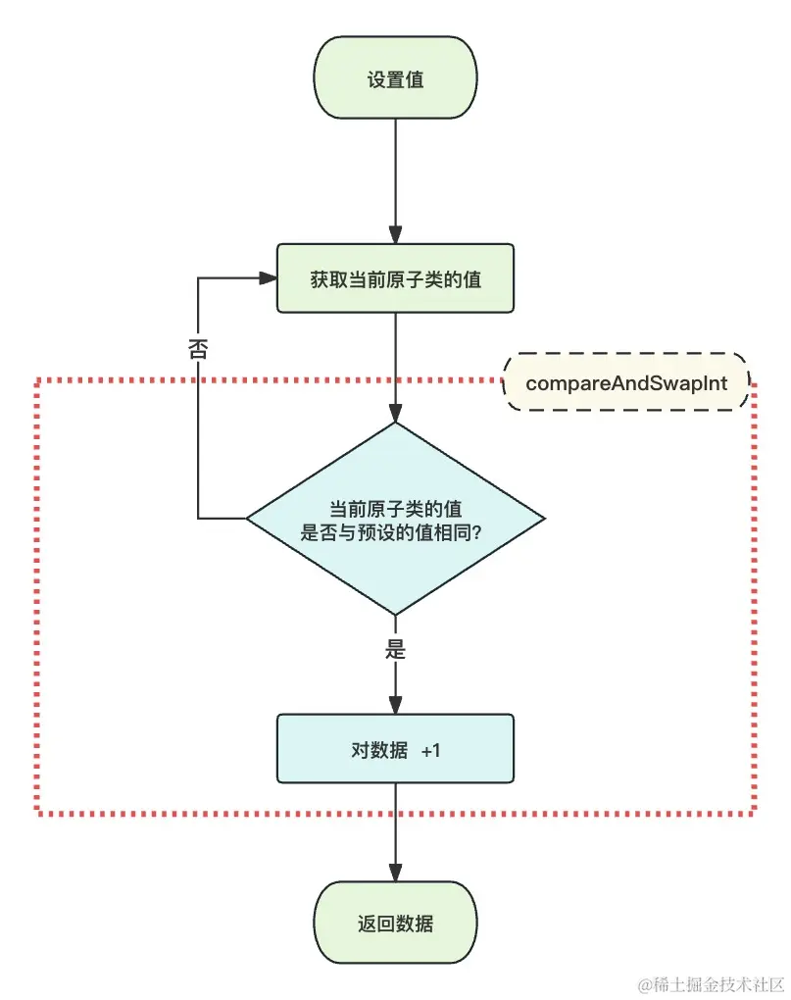
在之前的学习中，我们了解了 AtomicInteger，它是用于原子性地操作整数值的工具类。类似地，AtomicLong 用于原子性操作长整数值，主要用于累加操作。
现在，让我们介绍一种新的工具类，即 LongAdder，它在 Java 8 中引入，旨在优化替代 AtomicLong。虽然原子类提供了便捷的原子操作，但它们使用自旋锁的方式来实现，这在极端情况下可能导致某一个线程会频繁地对比失败无法设置新值进而自旋，导致性能的整体下降。
LongAdder 是为了解决这个性能问题而设计的。它采用一种 分段锁 的策略，将累加操作分散到多个单元（称为“单元”或“分段”），从而减少了竞争。这使得在高度并发的情况下，LongAdder 能够提供更好的性能，避免了单一锁的瓶颈。
因此，LongAdder 是一个更适合在高并发环境下执行长整数累加操作的工具类，可以显著提高性能并减轻潜在的竞态条件问题。
它的主要原理其实是采用“分而治之”的思想。
我们在上文分析过 Atomic 的累加方式，它是一条线程不断地去验证是否等于更新前的值，每一个线程都在自旋等待更改这个值。而 LongAdder 是根据竞争的线程数衍生出了一个 Cell 数组，每一个 Cell 都维护几个线程的累加，最终获取值的时候将所有 Cell 的累加值加上初始值，就等于最终的结果。
我们可以总结一下这个过程：
LongAdder 使用分段锁的方式来实现累加操作。多个线程可以同时累加，因为它们会选择不同的 Cell ，而不会争夺同一个锁。这减少了竞争和锁争用，提高了性能。Cell 维护一个局部累加值，线程进行累加操作时，会选择一个 Cell 并在该 Cell 上进行操作。这减少了对共享资源的访问，因为每个线程只操作自己选择的 Cell 。LongAdder 会将所有 Cell 的局部累加值与 base 的值相加，以计算出最终的累加结果。这个合并操作是原子的。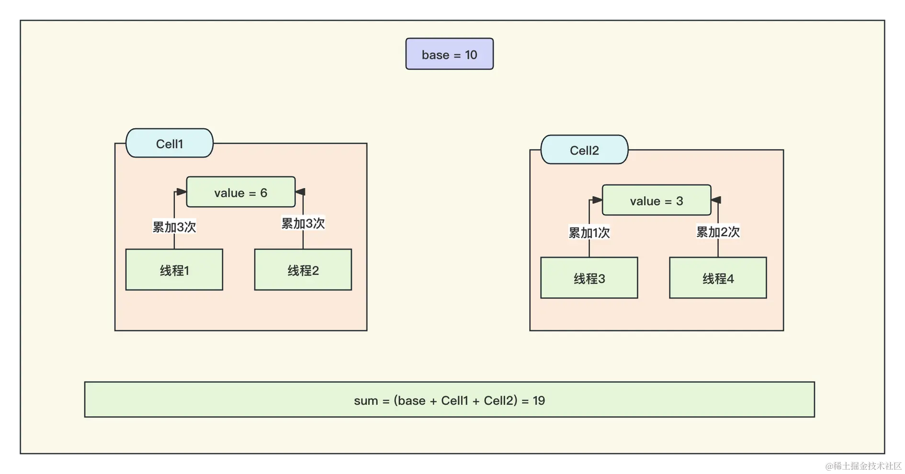
我们看一下具体用法：
public class LongAdderTest {
protected static LongAdder longAdder = new LongAdder();
public static void main(String[] args) throws InterruptedException {
Thread thread = new Thread(new Task());
Thread thread1 = new Thread(new Task());
thread.start();
thread1.start();
thread.join();
thread1.join();
System.out.println(longAdder.sum());
}
private static class Task implements Runnable {
@Override
public void run() {
for (int i = 0; i < 100000; i++) {
//累加并返回
longAdder.increment();
}
}
}
}
可以看到，我们获取最终的累加结果的时候，采用的是 longAdder.sum 来获取的。我们可以简单分析下 sum 方法，这样你会理解得更为透彻：
public long sum() {
Cell[] as = cells; Cell a;
//base值
long sum = base;
if (as != null) {
//循环Cell 进行累加操作
for (int i = 0; i < as.length; ++i) {
if ((a = as[i]) != null)
sum += a.value;
}
}
return sum;
}
可以看到，事实上内部做了一个循环，将 base 的值和 Cell 数组中每一个 Cell 的值累加起来，得到最终的结果。
注意：longAdder 使用的场景是统计求和，而且适用于并发场景特别高的情况下；如果并发数量不大的话，事实上它与 Atomic 的效率也差不多。
我们在生产环境中面对的需求是复杂多样化的，有时候我们的需求可能不止是累加操作，比如要求乘法等问题，LongAccumulator 就是为了解决这个问题。
LongAccumulator 是 Java 中用于累加长整数值的类，它也是 Java 8 引入的。与 LongAdder 类似，LongAccumulator 用于在高并发环境中执行长整数的累加操作。但与 LongAdder 不同，LongAccumulator 具有更高的灵活性，允许你自定义累加操作。
LongAccumulator 的核心是一个长整数值，以及一个用户定义的二元操作函数（BinaryOperator），这个函数用于指定如何对长整数值进行累加。累加操作是原子的，并且支持多线程并发累加。
我们看一下它的用法：
public class LongAccumulatorTest {
public static void main(String[] args) {
LongAccumulator longAccumulator = new LongAccumulator((x,y)-> x * y, 1);
longAccumulator.accumulate(1);
longAccumulator.accumulate(2);
longAccumulator.accumulate(3);
System.out.println(longAccumulator.getThenReset());
}
}
想要理解 LongAccumulator 的执行逻辑，就必须要理解 LongAccumulator 初始化的时候传入的回调类，它的过程是：
LongAccumulator 的意义是灵活，它的计算逻辑完全由使用者自己编写，而且使用这个类还可以在多线程并发的情况下保证最终结果的正确性！它适用于大量计算且并行的场景！注意并发情况下，线程的执行顺序是不确定的，所以 LongAccumulator 只适合执行顺序不影响最终结果的场景！
我们本章节剖析了 CAS 的基本原理，介绍了 JDK 内部对于 CAS 的实现方式即原子类，它可以保证一些操作被“不可分割”地执行，保证了线程安全。同时，还分享了 7 种类型的 JDK 对于原子类的实现！
相信经过本章节的学习，你会对 CAS 的原理以及 JDK 中对于 CAS 原理的实现有了一个更加清晰的认知。
我们在前文学习了如何保证对单个对象并发操作的并发安全性，本章节我们将学习如何对一个容器类内的元素并发操作，保证并发安全性。
首先我们需要知道传统的容器是不支持多线程操作的，譬如 ArrayList、LinkedList、HashSet、TreeSet、HashMap、TreeMap 等，它们在使用中因为并发安全问题会出现诸如数据丢失、报错、死循环等诸多问题。
在 Java 1.5 之前，如果想要使用线程安全的并发容器，那么有以下几个选择：
Vector：线程安全的容器。它的具体使用方式与 ArrayList 相似，其内部实现的原理是在方法层面上增加 synchronized 来实现线程安全。我们简单看一下源码： public synchronized boolean add(E e) {
...
}
Hashtable：一个线程安全的 KV 结构的数据。操作方式与 HashMap 相似，其内部原理也是在方法层面上增加 synchronized 来实现线程安全。我们简单看一下源码： public synchronized V put(K key, V value) {
.....
}
synchronizedList：在介绍锁的那一章节专门对于 synchronized 有过介绍，我们说过为了使锁粒度更加的精确，推荐将 synchronized 放到需要的代码块中，而不是放到整个方法定义上，于是有了以下的包装类。它的具体使用方法如下： List<String> list = Collections.synchronizedList(new ArrayList<>());
synchronizedList 能够使一个普通的 ArrayList 变为一个线程安全的容器，我们简单结合源码看它是如何实现的，具体实现在 java.util.Collections.SynchronizedCollection：
public boolean add(E e) {
synchronized (mutex) {return c.add(e);}
}
它的实现方式就比 Vector 的实现更加好一点，采用锁代码块的方式来解决，锁的粒度更小了。
相似的实现还有 Map、Set，都可以使用 Collections.synchronizedXXX 去包装，使其变成一个支持并发安全的类。
上述的几种并发安全容器基本都是采用 synchronized 的方式来实现的，可是 synchronized 实现的方式无论是在方法上还是代码块上，在高并发场景中效率都不太尽如人意。
那么，是否有一种方式能够保障线程安全的前提下，又能够满足性能需求呢？在下文，我将会重点介绍两种并发安全的 集合 和几种常用的 队列。
在本文中，我们将对 1.8 中常用的并发容器做一个详细的讲解，包括 ConcurrentHashMap、CopyOnWriteArrayList、线程安全的队列三个方面来学习。
HashMap 相信大家在日常的开发工作中都使用过，它是一个 KV 数据结构的容器，只限于单线程进行使用，在多线程环境下使用会因为多线程同时扩容的问题产生死循环，从而导致线程堆栈溢出！
具体细节这里我们不做太多的讲解，大家可以去网上以
HashMap CPU100%为关键词去搜一下，网上有大量的讲解。
ConcurrentHashMap 与传统的 HashMap 有以下五个区别：
| 类型 | 实现 | 简介 |
|---|---|---|
| 线程安全性 | HashMap | HashMap 是非线程安全的，多个线程并发访问同一个 HashMap 实例时，需要手动进行并发安全控制或采用其他措施来确保线程安全。 |
| ConcurrentHashMap | ConcurrentHashMap 是线程安全的。它使用分段锁技术，不同的线程可以同时访问不同的分段，只有在写操作时才需要锁定对应的分段，因此它支持高度并发的读操作，同时保证写操作的线程安全。 | |
| 性能 | HashMap | 由于不支持并发操作，所以它不涉及额外的锁同步开销，HashMap 在单线程环境下的性能通常会略高于 ConcurrentHashMap。 |
| ConcurrentHashMap | 虽然在高并发情况下需要处理锁，但由于它采用了分段锁机制，因此能够更好地处理多线程并发，在多线程环境下通常具有更好的性能。 | |
| 迭代器 | HashMap | HashMap 的迭代器不是线程安全的，如果在迭代期间对 HashMap 进行结构性修改，可能会导致 ConcurrentModificationException 异常。 |
| ConcurrentHashMap | ConcurrentHashMap 的迭代器是弱一致的，允许在迭代期间进行结构性修改，但不保证一定能够看到最新的修改。 | |
| 允许空键值 | HashMap | HashMap 允许存储 null 键和 null 值。 |
| ConcurrentHashMap | ConcurrentHashMap 不允许存储 null 键和 null 值。如果尝试存储 null 键或值，会抛出 NullPointerException。 | |
| 初始容量和负载因子 | HashMap | 可以通过构造函数设置初始容量和负载因子，以控制 HashMap 的大小和性能。 |
| ConcurrentHashMap | 不支持通过构造函数设置初始容量和负载因子，因为它的分段结构会自动扩展和收缩，以适应负载变化。 |
ConcurrentHashMap 的使用方式与 HashMap 很相似，这里给一个简单的示例：
public class NewSyncContainer {
public static void main(String[] args) {
ConcurrentHashMap<String,String> concurrentHashMap = new ConcurrentHashMap<>();
concurrentHashMap.put("1","a");
}
}
ConcurrentHashMap 在 Java 1.8 中是使用 CAS + synchronized 来实现的，是可以保证并发情况下的并发安全的，所以在存在多线程读写 Map 的场景下是推荐使用 ConcurrentHashMap 的。
我们已经学习了关于并发安全的 Map 容器，现在让我们来看一下并发安全的 List 容器。
在开发中，我们经常会使用 ArrayList，但它是线程不安全的。为了创建一个线程安全的 List 集合，我们可以使用 Vector 或者上文提到的 Collections.synchronizedList 方法。然而，正如我们在上文分析的那样，它们实现并发安全的方式是通过对读写添加 synchronized 关键字来实现的。
相比之下，CopyOnWriteArrayList 提供了另一种选择，它在某些场景下可能更为高效。它通过在写入操作时复制整个数组来实现线程安全，这样读取操作不受影响，因此适合读多写少的情况。
CopyOnWriteArrayList 可以简单翻译为“写时复制”，它的特点是在对其进行修改操作（例如添加、删除、更新元素）时，不直接在原始数据上进行操作，而是先创建一个副本（Copy），在副本上进行修改，然后将副本替换原始数据。
这样可以确保并发访问时不会出现数据一致性问题，因为每个线程都在自己的副本上操作，不会影响其他线程的操作。
CopyOnWriteArrayList 的主要优点是读操作非常高效，因为不需要加锁，多个线程可以同时读取数据，而写操作会比较慢，因为需要复制数据。它适用于读多写少的场景，当数据集相对稳定，而写操作较少时，使用 CopyOnWriteArrayList 可以提供较好的性能。
总的来说，CopyOnWriteArrayList 在特定的场景下存在以下的优势：
CopyOnWriteArrayList 在读取操作上非常高效，因为它在进行修改操作时会创建一个新的数组，这意味着读取操作不需要加锁或复制整个数组。CopyOnWriteArrayList 支持并发修改和迭代操作，因为它在迭代时使用的是原始数组的一个快照，所以不会抛出 ConcurrentModificationException 异常。CopyOnWriteArrayList 中添加、删除元素时，不会阻塞正在进行的读取操作，因为修改操作会在一个独立的副本上进行，只有在修改完成后才会将副本赋值给原始数组。CopyOnWriteArrayList 在修改时需要复制整个数组，所以适合读多写少的场景，如果写操作非常频繁，则性能可能会受到影响。Vector 和 Collections.synchronizedList 不同，CopyOnWriteArrayList 不需要手动同步操作，因为它已经内置了线程安全机制。CopyOnWriteArrayList 的使用方式与 ArrayList 类似，我们简单学习一下它的使用：
public static void main(String[] args) {
CopyOnWriteArrayList<String> copyOnWriteArrayList = new CopyOnWriteArrayList<>();
copyOnWriteArrayList.add("a");
copyOnWriteArrayList.add("b");
for (String s : copyOnWriteArrayList) {
System.out.println(s);
}
}
可以看下它是如何做到线程安全的，我们简单分析下 add 的源码：
public boolean add(E e) {
//增加锁
final ReentrantLock lock = this.lock;
lock.lock();
try {
Object[] elements = getArray();
int len = elements.length;
// 复制一个集合的副本
Object[] newElements = Arrays.copyOf(elements, len + 1);
// 将要增加的线程追加到副本中
newElements[len] = e;
// 使用副本替换集合
setArray(newElements);
return true;
} finally {
lock.unlock();
}
}
可以看到，CopyOnWriteArrayList 在写的时候会使用 ReentrantLock 加锁，同时复制一个新的数组；将数据写到新的数组后，再将新的数组替换旧的数组，完成写入。不难发现，当我们在写场景多的情况下，CopyOnWriteArrayList 会立即加锁然后复制一个新的数组占用空间，效率反而比 Vector 要慢。
我们简单看一个流程图：
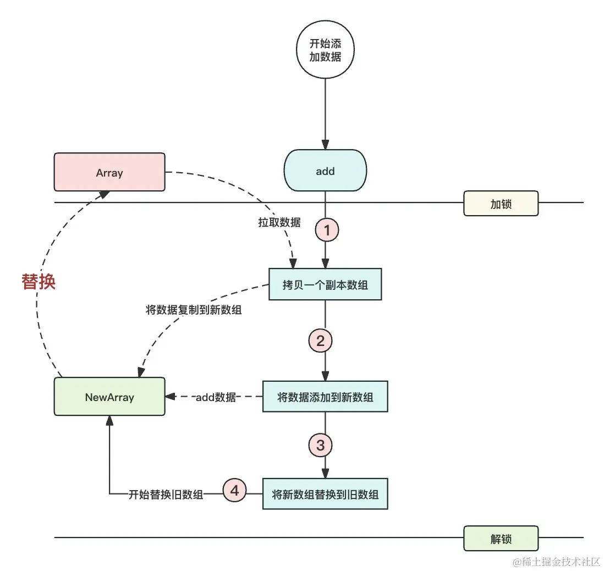
需要注意的是：
大多数的开发者对于队列的认知是类似于 Kafka、RabbitMQ 等一些“高大上”的消息队列上，对于 Java 内的队列却是一知半解。熟练运用 Java 内的队列，将会在日后的开发工作中对于需要多线程的开发场景处理得游刃有余。
在并发编程中，无论如何都绕不过的一个坎就是 队列。如果要实现一个线程安全的队列有两种方式，一种是使用阻塞算法，另外一种是非阻塞算法。
阻塞算法的队列可以使用一把锁（出队和入队使用一把锁）或者使用两把锁（出队和入队使用不同的锁）等方式来实现。非阻塞的实现方式则可以使用循环 CAS 的方式来实现，在后续我们将会针对阻塞队列和非阻塞队列两个大类来展开介绍。| 类型 | 实现 | 简介 |
|---|---|---|
| 阻塞队列 | ArrayBlockingQueue | 一个由数组结构组成的有界阻塞队列 |
| LinkedBlockingQueue | 一个由链表结构组成的有界阻塞队列 | |
| PriorityBlockingQueue | 一个支持优先级排序的无界阻塞队列 | |
| SynchronousQueue | 一个不存储元素的阻塞队列 | |
| DelayQueue | 一个使用优先级队列实现的无界阻塞队列 | |
| 非阻塞队列 | ConcurrentLinkedQueue | 一个基于链接节点的线程安全的无界队列 |
从上文的图表中，可以看到一个陌生的名词：有界和无界。所谓的有界队列就是这个队列是有一个最大长度的，简单来说就是通过不断的写入数据能够把队列写满的！而无界队列的长度可以认为是无限大，理论上只要内存够大，无界队列就无法被塞满。
了解了有界和无界的概念后，我们针对阻塞队列和非阻塞队列做一个详细的讲解。
阻塞队列是具有阻塞功能的队列。
从名字可以看出，首先它具有队列的特性（先进先出），其次它具有阻塞的能力。当存在数据的时候消费者可以获取到数据，当不存在数据的时候消费者阻塞等待。当队列不满的时候生产者可以向队列写入数据，当队列满的时候，生产者停止写入并进入阻塞状态。
既然是队列，就一定有生产数据和消费数据的 API。这里将以 ArrayBlockingQueue 为例讲解基础的 API，BlockingQueue 的 API 种类大致可以分为 3 组。
| 类型 | API名称 | 简介 |
|---|---|---|
| 会产生阻塞的API | put() | 插入元素，如果队列已满，则进入阻塞状态，直到队列存在空闲位置。 |
| take() | 获取并溢出队列头节点，如果队列为空则进入阻塞状态，直到队列存在数据。 | |
| 会产生异常的API | add() | 向队列中添加数据，当队列满了之后抛出异常。 |
| remove() | 删除队列的头节点，当队列为空的时候，抛出异常。 | |
| element() | 获取但不删除队列的头部，如果队列为空，它将抛出异常。 | |
| 不会阻塞也不会异常的API | offer() | 向队列头部写入数据，当队列满了之后，返回 false，写入成功则返回 true。 |
| poll() | 返回并删除队列头节点，当队列为空的时候返回 null。 | |
| peek() | 获取但不删除队列的头部，当队列为空的时候返回 null。 |
在学习了它的重点 API 方法后，我们使用一个简单的案例来帮助你更好地掌握它的使用方式。
ArrayBlockingQueue
有这样一个例子：排队吃饭，饭店只有 3 个服务员，每一个服务员同时只能服务一个顾客，所以一次最多接待 3 个客人，其他客人需要等到上一位客人吃完之后，才能就坐吃饭。
public class BlockingQueueTest {
private final static ArrayBlockingQueue<String> ARRAY_BLOCKING_QUEUE = new ArrayBlockingQueue<String>(5);
private final static ThreadPoolExecutor THREAD_POOL_EXECUTOR = new ThreadPoolExecutor(4, 8, 60, TimeUnit.SECONDS, new ArrayBlockingQueue<>(10), Executors.defaultThreadFactory(), new ThreadPoolExecutor.AbortPolicy());
public static void main(String[] args) {
//触发排队操作 这里实际生产环境不推荐两种任务共同使用一个线程池 演示使用
THREAD_POOL_EXECUTOR.execute(new QueueUp());
//三个服务员开始接待客人吃饭
for (int i = 0; i < 3; i++) {
THREAD_POOL_EXECUTOR.execute(new EatingTask());
}
}
private static class QueueUp implements Runnable {
@Override
public void run() {
for (int i = 0; i < 10; i++) {
try {
String customerName = "顾客" + i;
System.out.println("顾客" + customerName + "开始排队");
ARRAY_BLOCKING_QUEUE.put(customerName);
} catch (InterruptedException e) {
e.printStackTrace();
}
}
}
}
private static class EatingTask implements Runnable {
@Override
public void run() {
while (true) {
try {
String thisCustomerName = ARRAY_BLOCKING_QUEUE.take();
System.out.println("顾客" + thisCustomerName + "排队成功，进入餐厅开始吃饭");
Thread.sleep((long) (Math.random() * 10000));
System.out.println("顾客" + thisCustomerName + "吃完离开了.");
} catch (Exception e) {
e.printStackTrace();
}
}
}
}
}
简单学习了它的使用之后，我们尝试看一下 put 的源码，分析下它的主要实现方式是什么：
public void put(E e) throws InterruptedException {
checkNotNull(e);
final ReentrantLock lock = this.lock;
// 进来先加锁
lock.lockInterruptibly();
try {
//判断队列是否已经满了
while (count == items.length)
//满了就进行阻塞
notFull.await();
//队列没满就入队
enqueue(e);
} finally {
//释放锁
lock.unlock();
}
}
根据我们前面所掌握的知识，首先看到的是lockInterruptibly，证明它是一个可以被打断的锁类型；其次可以看到，循环条件中，当数据长度达到预设值的时候（队列满了），程序会基于锁条件进行 await 等待完成阻塞操作。
至此，我们基本可以得知的是 ArrayBlockingQueue 采用 ReentrantLock 的方式保证并发安全，并且借用 Condition 来完成阻塞。
LinkedBlockingQueue
学习了 ArrayBlockingQueue 之后，LinkedBlockingQueue 就好理解多了。
LinkedBlockingQueue 除了在数据结构上与 ArrayBlockingQueue 不同外，它与 ArrayBlockingQueue 最大的区别就是 LinkedBlockingQueue 是一个无界队列，所谓的无界队列的意思就是无限存储的意思。
LinkedBlockingQueue 的存储结构是一个链表结构，内部会将数据封装为一个一个的 Node。其次，LinkedBlockingQueue 的 put 和 take 使用的是两把锁，而 ArrayBlockingQueue 使用同一把锁。
其余的特性与 ArrayBlockingQueue 相似，这里不再进行过多的讲解，你可以自己试着分析其源码实现 。
PriorityBlockingQueue
与上面两个队列不同的是， PriorityBlockingQueue 是一个支持优先级排序的无界阻塞队列，虽然在初始化的时候会让指定容量，但是在队列满了之后会自动进行扩容。理论上来说，它永远也放不满，所以它不会阻塞，因此它不存在 put 方法。
PriorityBlockingQueue 并不会完全遵循先进先出的特性，而是可以自己实现比较器，完成内部数据的排序。比如，我们可以使队列内部的数据倒序排列，由于它是一个无界队列，所以不会出现队列满了阻塞的问题，所以案例里面使用 add 还是 put 也无所谓了。
下面我们采用代码来实现一下：
public class PriorityQueueTest {
private final static PriorityBlockingQueue<Integer> priorityQueue = new PriorityBlockingQueue<>(2, new Comparator<Integer>() {
@Override
public int compare(Integer o1, Integer o2) {
//倒序排列
return o2 - o1;
}
});
public static void main(String[] args) throws InterruptedException {
priorityQueue.add(1);
priorityQueue.add(2);
priorityQueue.add(3);
priorityQueue.add(4);
//4
System.out.println(priorityQueue.take());
//3
System.out.println(priorityQueue.take());
//2
System.out.println(priorityQueue.take());
//1
System.out.println(priorityQueue.take());
}
}
执行结果如下：
4
3
2
1
队列的特性是先进先出，但是我们只需要在创建队列的时候，传递一个 Comparator 就可以完成对队列内部数据的排序操作。
它的实现原理也很简单，每一次向队列中添加数据的时候，它都会调用比较器来进行比较，进而决定数据在数组中的位置！
SynchronousQueue
我们前面在讲线程池的时候提到过 SynchronousQueue ，它很特殊，没有容量所以不能存储数据，更多的适用于立即交换，即生产者给一个数据，它就赶紧交给消费者，没有消费者就阻塞。
它就相当于一个弱不禁风的中间人，别人给它一个东西它就会赶紧给下一个人，拿不了第二个。
由于这个队列比较特殊，我们采用一个案例来理解一下。
假设存在两条线程，一条线程充当生产者，一条线程充当消费者，我们让生产者生产数据的速度大于消费者，此时就会出现，生产者生产完数据后等待消费者消费完成之后才会推送下一条数据的情况：
public class SynchronousQueueTest {
public static void main(String[] args) throws InterruptedException {
SynchronousQueue<String> synchronousQueue = new SynchronousQueue<>();
//模拟生产者
new Thread(() ->{
while (true) {
try {
synchronousQueue.put("你好");
} catch (InterruptedException e) {
e.printStackTrace();
}
}
}).start();
//模拟消费者
new Thread(() ->{
while (true) {
try {
//睡眠 使消费者的消费速度低于数据产生的速度
Thread.sleep(1000);
System.out.println(synchronousQueue.take());
} catch (InterruptedException e) {
e.printStackTrace();
}
}
}).start();
}
}
运行后可以发现，生产者和消费者的速度达到了一致。
DelayQueue
DelayQueue 是一个延时队列，它是一个具有优先级特性的无界的可延时阻塞队列，可以对内部的数据进行延时获取，定时任务线程池就是使用的这种队列。
这种线程池的特点就在于“延时”两个字，任务会根据预设的延迟时间进行消费，就像是设置了一个闹钟，如果闹钟时间没有到的话，即使消费者开始消费这个数据，那么也只能阻塞，等待闹钟到达预设时间。
我们通过一个简单的案例来理解这个线程。每一个任务需要等待一段时间后才能被消费，同时任务根据其等待时间进行排序操作：
public class DelayQueueTest {
public static void main(String[] args) throws InterruptedException {
DelayQueue<DelayedTask> delayQueue = new DelayQueue<DelayedTask>();
delayQueue.add(new DelayedTask("a1", 3000));
delayQueue.add(new DelayedTask("11", 3000));
delayQueue.add(new DelayedTask("2", 4000));
delayQueue.add(new DelayedTask("3", 5000));
System.out.println(delayQueue.take().taskName);
System.out.println(delayQueue.take().taskName);
System.out.println(delayQueue.take().taskName);
System.out.println(delayQueue.take().taskName);
}
private static class DelayedTask implements Delayed {
private long delayTime; // 延迟时间，单位为纳秒
private String taskName;
public DelayedTask(String taskName, long delayTime) {
this.taskName = taskName;
this.delayTime = System.currentTimeMillis() + delayTime;
}
@Override
public long getDelay(TimeUnit unit) {
long diff = delayTime - System.currentTimeMillis();
return unit.convert(diff, TimeUnit.MILLISECONDS);
}
/**
* 用于延迟队列内部比较排序
**/
@Override
public int compareTo(Delayed o) {
long diff = this.delayTime - ((DelayedTask) o).delayTime;
return Long.compare(diff, 0);
}
public String getTaskName() {
return taskName;
}
}
}
DelayQueue 的设计十分有用，我们可以将 DelayQueue 用于以下的场景：
我们前面介绍线程池那一章节的锁介绍的定时任务线程池，它也是使用的这个任务队列。
学习完了阻塞队列之后，我们再学习一下非阻塞队列 ConcurrentLinkedQueue。
它是 Java 中的一个线程安全队列实现，是基于链表的非阻塞队列。它实现了 Queue 接口，提供了一种线程安全的队列数据结构，适用于多线程并发环境下的生产者-消费者模式，以及其他需要线程安全队列的场景。
ConcurrentLinkedQueue 具有以下的特点和用法。
ConcurrentLinkedQueue 是线程安全的数据结构，多个线程可以同时操作队列而不需要额外的同步措施，主要采用的是 CAS 来进行的。ConcurrentLinkedQueue 是一个无界队列，它可以动态增长以容纳任意数量的元素，只受系统内存限制。我们依旧是先学习它的 API，然后通过一个案例来掌握它的使用：
| API 名称 | 简介 |
|---|---|
| add(E e) | 将指定的元素插入到队列的尾部。如果队列已满，则抛出 IllegalStateException 异常。 |
| offer(E e) | 将指定的元素插入到队列的尾部，并返回 true。如果队列已满，则返回 false。 |
| poll() | 获取并移除队列的头部元素。如果队列为空，则返回 null。 |
| peek() | 获取但不移除队列的头部元素。如果队列为空，则返回 null。 |
| isEmpty() | 判断队列是否为空。 |
| size() | 返回队列中的元素个数。 |
| contains(Object o) | 判断队列是否包含指定的元素。 |
| remove(Object o) | 从队列中移除指定的元素。 |
| clear() | 清空队列中的所有元素。 |
| iterator() | 返回在此队列元素上进行迭代的迭代器。 |
事实上它的使用方式与阻塞队列的使用方式基本类似，只不过它不会阻塞而已，当队列为空的时候，它将返回 null 而不是阻塞等待数据的到来。
为了加深理解，我们使用两个线程来模拟生产者和消费者：
public class ProducerConsumerExample {
private static final int MAX_CAPACITY = 5;
private static ConcurrentLinkedQueue<Integer> queue = new ConcurrentLinkedQueue<>();
public static void main(String[] args) {
Thread producer = new Thread(new Producer());
Thread consumer = new Thread(new Consumer());
producer.start();
consumer.start();
}
static class Producer implements Runnable {
@Override
public void run() {
while (true) {
if (queue.size() == MAX_CAPACITY) {
System.out.println("队列已满，等待消费者消费...");
try {
Thread.sleep(1000);
} catch (InterruptedException e) {
e.printStackTrace();
}
} else {
int number = (int) (Math.random() * 100);
queue.offer(number);
System.out.println("生产者生产的消息为: " + number);
}
}
}
}
static class Consumer implements Runnable {
@Override
public void run() {
while (true) {
if (queue.isEmpty()) {
System.out.println("队列为空，等待生产者生产...");
try {
Thread.sleep(1000);
} catch (InterruptedException e) {
e.printStackTrace();
}
} else {
int number = queue.poll();
System.out.println("消费者消费到数据: " + number);
}
}
}
}
}
执行结果如下：
队列为空，等待生产者生产...
生产者生产的消息为: 85
生产者生产的消息为: 12
生产者生产的消息为: 47
生产者生产的消息为: 84
生产者生产的消息为: 72
队列已满，等待消费者消费...
队列已满，等待消费者消费...
消费者消费到数据: 85
消费者消费到数据: 12
消费者消费到数据: 47
消费者消费到数据: 84
消费者消费到数据: 72
队列为空，等待生产者生产...
生产者生产的消息为: 31
生产者生产的消息为: 9
生产者生产的消息为: 11
生产者生产的消息为: 20
生产者生产的消息为: 15
队列已满，等待消费者消费...
从案例中可以看到，虽然它不会阻塞，但是我们可以通过 API isEmpty 判断队列中是否存在数据，进而决定是否要消费数据。
在本文中，我们介绍了多种类型的队列，其中主要很详细讲解了阻塞队列的特点与使用方式，因为它在开发过程中使用的频率最高。
掌握队列的使用方式，能够有助于你在日后的并发编程中对于任务的消费顺序有一个更加明确的掌控。
我们在前几节中学习了线程如何组织以及如何保证线程安全，但是我们介绍的线程的使用方式几乎全部是 Runnable 接口，虽然我们也稍微讲了一下 Callable 的使用方式。
那么，本章节将重点讲解 Callable 接口的详细用法。
存在即合理，我们之前所学的 Runnable 接口存在以下两个缺陷：
以上的两个缺陷导致于 Runnable 接口在一些特定的开发场景中，实现某一些特定功能很麻烦。比如，我现在有 100w 的数据，需要你采用线程池将 100w 的数据拆分为 10 个线程执行，当其中一个线程出问题后，需要将错误信息，以及出错的区间返回！
如果使用 Runnable 接口来实现就会比较麻烦，需要借助我们之前讲的 CountDownLatch 等类似的工具来进行计数实现，而且 Runnable 还无法返回出错的信息和区间。但如果采用本节课即将讲到的 Callable 接口来实现这个功能，整体就会简单很多。
我们先学习一下它的基础使用方式：
public class CallableTest {
public static void main(String[] args) throws ExecutionException, InterruptedException {
FutureTask<String> stringFutureTask = new FutureTask<>(new Task());
new Thread(stringFutureTask).start();
//获取线程的返回结果
System.out.println(stringFutureTask.get());
}
private static class Task implements Callable<String> {
@Override
public String call() throws Exception {
return "我是执行结果";
}
}
}
从上述的代码可以看到，我们将 Callable 包装成了一个 FutureTask，后续对于 Callable 的操作主要集中在 FutureTask 上。
Callable 获取结果的时候会抛出两个异常，ExecutionException、InterruptedException。其中 InterruptedException 是当线程被中断或者任务被取消的时候抛出的异常，当任务抛出异常的时候会触发 ExecutionException，当任务被取消的时候，会出现一个 TimeoutException。
接下来，我们将针对 FutureTask 的主要常用的 API 做一个详细的介绍。
Future 关联的计算任务。mayInterruptIfRunning 用于确定是否中断正在执行任务的线程。false ；否则，任务将被取消，并返回 true 。Future 关联的计算任务是否已被取消。true ；否则，返回 false 。Future 关联的计算任务是否已经完成。true。Future 关联的计算结果。Future 关联的计算结果，但是在指定的时间内如果计算尚未完成，则抛出 TimeoutException 异常。timeout 表示超时时间， unit 表示时间单位。注意，这里的 Future 任务虽然提供了取消任务的能力，但是当任务没有处于阻塞状态的时候，实际上任务并不会停止，它只能取消能够响应中断任务的任务。加入类似的任务是一个死循环，此时程序无法被停止。
下面我们学习正确停止死循环的两个方式（重点请关注一个注意点，响应中断任务）。
public class StopTest {
public static void main(String[] args) throws ExecutionException, InterruptedException, TimeoutException {
FutureTask<String> stringFutureTask = new FutureTask<String>(new Task());
new Thread(stringFutureTask).start();
//获取线程的返回结果
Thread.sleep(1000);
System.out.println(stringFutureTask.cancel(true));
System.out.println("任务被停止");
System.out.println(stringFutureTask.get());
}
private static class Task implements Callable<String> {
@Override
public String call() throws Exception {
while (!Thread.currentThread().isInterrupted()) {
System.out.println("线程正在运行");
}
return "运行完成";
}
}
}
public class StopTest2 {
public static void main(String[] args) throws ExecutionException, InterruptedException, TimeoutException {
FutureTask<String> stringFutureTask = new FutureTask<String>(new Task());
new Thread(stringFutureTask).start();
//获取线程的返回结果
Thread.sleep(1000);
System.out.println(stringFutureTask.cancel(true));
System.out.println("任务被停止");
System.out.println(stringFutureTask.get());
}
private static class Task implements Callable<String> {
@Override
public String call() throws Exception {
while (true) {
System.out.println("线程正在运行");
Thread.sleep(500);
}
}
}
}
与第一种案例不同的是，这里使用了 sleep 来阻塞程序，当发起取消任务申请的时候，Task 会抛出中断异常，从而会从 call 方法的循环中跳出，并结束程序。当任务被取消成功后，调用 get 方法获取结果会抛出异常 CancellationException！
后面我们学习如何配合线程池来使用 Callable 接口，线程池使用 Callable 与直接使用类似，基础使用如下：
public class ThreadPoolCallable {
private final static AtomicInteger IDX = new AtomicInteger(0);
private final static ThreadPoolExecutor THREAD_POOL_EXECUTOR = new ThreadPoolExecutor(1, 3, 5, TimeUnit.SECONDS, new SynchronousQueue<>(), new ThreadFactory() {
@Override
public Thread newThread(Runnable r) {
return new Thread(r, "test-" + IDX.getAndIncrement());
}
}, new ThreadPoolExecutor.AbortPolicy());
public static void main(String[] args) throws Exception {
Future<String> submit = THREAD_POOL_EXECUTOR.submit(new Task());
System.out.println(submit.get());
}
private static class Task implements Callable<String> {
@Override
public String call() throws Exception {
try {
Thread.sleep(2000);
}catch (Exception e) {
e.printStackTrace();
}
return "我是返回结果";
}
}
}
与我们之前使用线程池提交任务不同的是，这里使用的是 submit 来提交任务，提交任务完成后返回一个 Future ，内部的 API 与上文同理，这里不做太多的解释。
接下来，我们将针对 Future 来设计几个使用案例来加深你的印象。
我们有一个系统，需要调用第三方的接口获取数据，但是因为我们系统的用户体验要求，如果 3 秒内接口没有返回，就返回一个第三方接口网络异常；如果 3 秒内返回了，就返回第三方数据访问成功。
public class ThreadPoolCallableCase1 {
private final static AtomicInteger IDX = new AtomicInteger(0);
private final static ThreadPoolExecutor THREAD_POOL_EXECUTOR = new ThreadPoolExecutor(10, 20, 60, TimeUnit.SECONDS, new ArrayBlockingQueue<>(1024), r -> new Thread(r, "open-api-" + IDX.getAndIncrement()), new ThreadPoolExecutor.AbortPolicy());
public static void main(String[] args) {
ThreadPoolCallableCase1 threadPoolCallableCase1 = new ThreadPoolCallableCase1();
System.out.println(threadPoolCallableCase1.getData());
}
public String getData(){
Future<String> submit = THREAD_POOL_EXECUTOR.submit(new Task());
try {
return submit.get(3, TimeUnit.SECONDS);
} catch (InterruptedException e) {
return "手动中断任务";
} catch (ExecutionException e) {
return "第三方异常";
} catch (TimeoutException e) {
//超时了就取消任务
System.out.println(submit.cancel(true));
return "第三方接口网络超时";
}
}
private static class Task implements Callable<String> {
@Override
public String call() throws Exception {
try {
Thread.sleep((long) (Math.random() * 7000));
}catch (Exception e) {
System.out.println("任务被主动中断");
}
return "第三方数据返回成功";
}
}
}
这里可以看到，我们使用了带有等待时间的 get 方法来获取数据，当在规定时间内还没有返回数据的时候，此时就会抛出第三方接口网络超时的异常信息。
假设我们存在 10w 的数据，现在要将其分为 10 个线程处理，每一个线程处理 1w 的数据写入数据库，当数据全部写入成功后，返回写入成功；当数据某一批写入失败，需要返回哪一个区间写入失败。
public class ThreadDbTest {
private final static AtomicInteger IDX = new AtomicInteger(0);
private final static ThreadPoolExecutor THREAD_POOL_EXECUTOR = new ThreadPoolExecutor(10, 20, 60, TimeUnit.SECONDS, new ArrayBlockingQueue<>(1024), r -> new Thread(r, "open-api-" + IDX.getAndIncrement()), new ThreadPoolExecutor.AbortPolicy());
public static void main(String[] args) {
List<Future<String>> futures = new ArrayList<>();
Future<String> submit1 = THREAD_POOL_EXECUTOR.submit(new BatchWriteDbTask(1, 10000, true));
Future<String> submit2 = THREAD_POOL_EXECUTOR.submit(new BatchWriteDbTask(10001, 20000, true));
Future<String> submit3 = THREAD_POOL_EXECUTOR.submit(new BatchWriteDbTask(20001, 30000, true));
Future<String> submit4 = THREAD_POOL_EXECUTOR.submit(new BatchWriteDbTask(30001, 40000, true));
Future<String> submit5 = THREAD_POOL_EXECUTOR.submit(new BatchWriteDbTask(40001, 50000, false));
Future<String> submit6 = THREAD_POOL_EXECUTOR.submit(new BatchWriteDbTask(50001, 60000, true));
Future<String> submit7 = THREAD_POOL_EXECUTOR.submit(new BatchWriteDbTask(70001, 80000, true));
Future<String> submit8 = THREAD_POOL_EXECUTOR.submit(new BatchWriteDbTask(80001, 90000, true));
Future<String> submit9 = THREAD_POOL_EXECUTOR.submit(new BatchWriteDbTask(90001, 100000, true));
futures.add(submit1);
futures.add(submit2);
futures.add(submit3);
futures.add(submit4);
futures.add(submit5);
futures.add(submit6);
futures.add(submit7);
futures.add(submit8);
futures.add(submit9);
for (Future<String> future : futures) {
try {
System.out.println(future.get());
} catch (InterruptedException e) {
e.printStackTrace();
} catch (ExecutionException e) {
e.printStackTrace();
}
}
}
public static class BatchWriteDbTask implements Callable<String> {
private final Integer minIndex;
private final Integer maxIndex;
/**
* 模拟使用， 当为true的时候就写入成功 当为false就写入失败
*/
private final boolean isSuccess;
public BatchWriteDbTask(Integer minIndex, Integer maxIndex, boolean isSuccess) {
this.minIndex = minIndex;
this.maxIndex = maxIndex;
this.isSuccess = isSuccess;
}
@Override
public String call() throws Exception {
System.out.println("开始批量写入数据 " + minIndex + "至" + maxIndex);
if(!isSuccess) {
throw new Exception("数据 " + minIndex + "至" + maxIndex + "写入失败，请手动处理。");
}
Thread.sleep(5000);
return "数据" + minIndex + "至" + maxIndex + "写入成功";
}
}
}
我们查看最终的运行结果：
开始批量写入数据 1至10000
开始批量写入数据 20001至30000
开始批量写入数据 10001至20000
开始批量写入数据 30001至40000
开始批量写入数据 40001至50000
开始批量写入数据 50001至60000
开始批量写入数据 70001至80000
开始批量写入数据 80001至90000
开始批量写入数据 90001至100000
数据1至10000写入成功
数据10001至20000写入成功
数据20001至30000写入成功
数据30001至40000写入成功
数据50001至60000写入成功
数据70001至80000写入成功
数据80001至90000写入成功
数据90001至100000写入成功
java.util.concurrent.ExecutionException: java.lang.Exception: 数据 40001至50000写入失败，请手动处理。
at java.util.concurrent.FutureTask.report(FutureTask.java:122)
at java.util.concurrent.FutureTask.get(FutureTask.java:192)
at com.eight.ThreadDbTest.main(ThreadDbTest.java:44)
Caused by: java.lang.Exception: 数据 40001至50000写入失败，请手动处理。
at com.eight.ThreadDbTest$BatchWriteDbTask.call(ThreadDbTest.java:76)
at com.eight.ThreadDbTest$BatchWriteDbTask.call(ThreadDbTest.java:54)
从最终的运行结果中可以看到，我们程序中预设的 “40001 至 50000 写入失败”是被成功捕获异常并返回的。
因为是异步执行，所以程序返回 Future 的时候可能程序并未开始执行或者正在执行中，为了获取最终的计算结果，程序的整体我们使用了一个集合来存储 Future 结果集，然后任务全部提交后遍历这个集合，使用 get 方法来获取真正的执行结果。当任务执行完毕后，get 方法会停止阻塞返回运行结果；当程序运行出错的时候，此时 get 方法会抛出最终的异常信息以供检测使用。
本节课我们充分介绍了如何使用 Future 来进行获取线程的数据结果，包括对于 API 的介绍以及使用，我们还使用了几个例子使你加深印象，在异步计算中 Future 能够大大加快计算速度。Dubbo 就是使用 Future 来异步获取 API 的结果以及控制超时等能力的。
我们在前几章节充分学习了如何使用门闩、信号量、锁等手段去保证并发安全，本章节我们将深入分析这些保证并发安全的工具的实现。
在日常开发中，若某一逻辑频繁重复使用，我们通常将其封装成工具类。类似地，AQS（AbstractQueuedSynchronizer）本质上也可视为一种工具类。
我们之前学习的 ReentrantLock、 CountDownLatch、 Semaphore 等工具类，共同具有一个特性，即能够限制同时执行某一任务逻辑的数量。在开发中，我们一般会将这个控制任务并发数量的功能抽象出来，可以使 ReentrantLock、 CountDownLatch、 Semaphore 等工具类的实现更加简洁。实际上，Java 并发包（JUC）正是采用了这种设计方式。
在学习 AQS 之前，我们需要事先说明，AQS 并不是一个类似于前面学到的锁、累加器一样的东西，你学完了就直接应用在项目上，AQS 更像是对我们前面所学的一个深入的补充，针对我们前面所学将它的原理搞清楚。
AQS 是 Java 并发包的核心，它的理念和设计思想贯穿于 Java 中许多并发工具和框架，如 ReentrantLock、Semaphore、CountDownLatch 等。通过学习 AQS，你可以更深入地理解并发编程的机制和原理。
后续我们将以 ReentrantLock 作为切入点来讲述 AQS 的思想。
首先，我们分析所谓的 AQS 是如何运用在 ReentrantLock 中的。
我们要知道，AQS 在 Java 中对应的实现为 java.util.concurrent.locks.AbstractQueuedSynchronizer，它的定义方式为：
public abstract class AbstractQueuedSynchronizer extends AbstractOwnableSynchronizer implements java.io.Serializable {}
从定义上看，它是一个抽象类，那么就必然存在不同的实现方式，我们以 ReentrantLock 作为切入点。
我们通过 ReentrantLock.lock() 进入，看看它是如何利用 AQS 的：
public void lock() {
sync.lock();
}
我们这里能够看到，它是调用了一个 sync.lock() 来实现的加锁操作。我们进入到 sync，它是一个 ReentrantLock 的内部类，定义为：
abstract static class Sync extends AbstractQueuedSynchronizer {}
可以看到，它还是一个抽象类，那么对于它的实现如下图所示：
从上图的名字上可以看出来，Sync 类对于 AQS 有两种实现：java.util.concurrent.locks.ReentrantLock.NonfairSync和java.util.concurrent.locks.ReentrantLock.FairSync。
它们都是 ReentrantLock 的内部类，我们在前文学习过，ReentrantLock 有两种加锁方式，一个是公平锁，一个是非公平锁，那么从名字就能看出来，这两种实现对应了 Lock 加锁的两种方式。这一点在 ReentrantLock 的声明中也能够看出来：
public ReentrantLock(boolean fair) {
sync = fair ? new FairSync() : new NonfairSync();
}
好，学习到这里，我们知道了 ReentrantLock 锁是如何定义 AQS 的，我们来使用一张图来描述 ReentrantLock 对于 AQS 的应用：
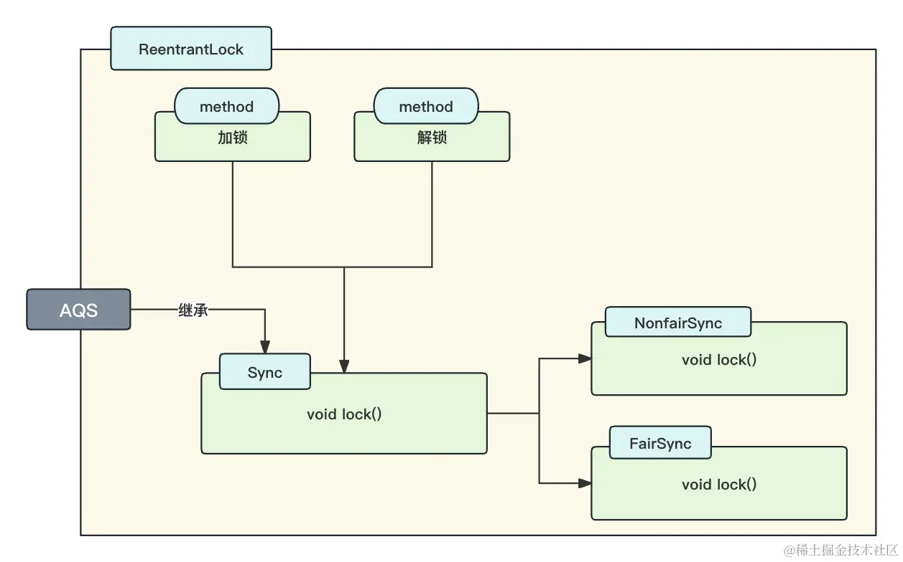
我们分析下上图，在 ReetrantLock 中存在加锁和解锁两个方法，这两个方法是借助 Sync 这个内部类来完成的。Sync 这个内部类实现了 AQS 抽象类，并实现了公平锁和非公平锁两种加锁方式！
简单来说，ReetrantLock 的加解锁功能其实是基于 Sync 的两个实现类来完成的。具体 Sync 的实现类做了什么，我们在后面进行分析。
我们先以公平锁为例。
基于前面所学，我们需要进入到 FairSync 中，查看它对于 Sync 的 lock 方法的实现：
final void lock() {
acquire(1);
}
可以看到，FairSync 的实现直接调用了 AQS 的 acquire 方法，且传递的参数是 1。我们进入到 AQS 的 acquire 方法：
public final void acquire(int arg) {
if (!tryAcquire(arg) && acquireQueued(addWaiter(Node.EXCLUSIVE), arg))
selfInterrupt();
}
在判断条件中，我们是能够看到三个方法的（tryAcquire、addWaiter、acquireQueued），下面针对这三个方法进行针对性的讲解。
1. tryAcquire
tryAcquire 会直接调用具体的实现，也就是公平锁的 FairSync#tryAcquire 方法。我们查看其源码：
protected final boolean tryAcquire(int acquires) {
//获取当前的线程
final Thread current = Thread.currentThread();
//获取当前的加锁状态 在ReentrantLock中，state=0的时候是没有加锁，state=1的时候是加锁状态
int c = getState();
if (c == 0) {
// 没有人占用锁的时候，因为是公平锁，所以优先判断队列中是否存在排队的
// 如果没有排队的，直接使用CAS进行加锁，将0 替换为 1，
if (!hasQueuedPredecessors() &&
compareAndSetState(0, acquires)) {
// 将当前线程设置到exclusiveOwnerThread变量，表示这个线程持有锁
setExclusiveOwnerThread(current);
//返回加锁成功
return true;
}
}
//我们在前面讲过，ReentrantLock是可重入锁，当前面逻辑加锁失败，则判断是不是当前线程持有的锁，如果是当前线程持有锁，则符合可重入规则
else if (current == getExclusiveOwnerThread()) {
//将state 累加 由 1 变成 2
int nextc = c + acquires;
if (nextc < 0)
throw new Error("Maximum lock count exceeded");
setState(nextc);
return true;
}
//如果存在排队任务，或者CAS变换state的值失败，则证明当前不能加锁，直接返回false加锁失败
return false;
}
上面代码的注释能够印证出我们前面所学的，公平锁、可重入锁、CAS 的特性。
我们使用一个图来理解这个流程：
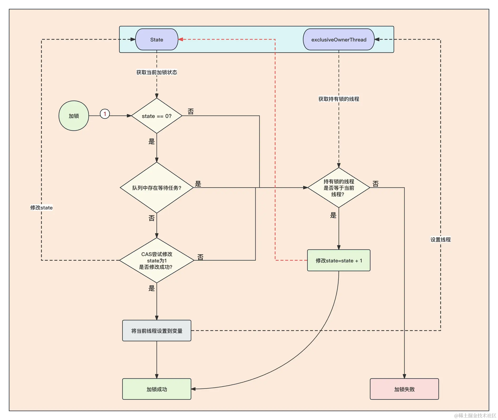
可以看到，其实所谓的加锁其实就是操作 State 变量的值！
2. addWaiter
按照 Java && 的逻辑，!A && B，当 A 成立后，会开始判断 B，也就是说，当 tryAcquire 方法加锁失败返回 false 后，就会执行 acquireQueued 方法，对照方法就是 acquireQueued(addWaiter(Node.EXCLUSIVE), arg)。
线程加锁失败后，会开始进行入队操作，也就是 addWaiter 方法。AQS 的队列与传统队列不同，AQS 的队列是一个双向链表，排队的线程都是用 next 指向下一个节点任务。head 节点可能为空，因为当第一个任务入队的时候，会初始化 head 节点，head 节点内线程数据为空，但是 head 节点的 next 会指向第一个等待线程，它的结构如下：
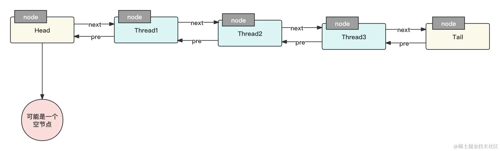
当一个任务入队的时候，它会将入队节点设置为 tail，将原本的 tail 节点设为当前节点的下一级节点，具体的操作我们看源码：
private Node addWaiter(Node mode) {
//创建一个node节点 排它锁的mode = null
Node node = new Node(Thread.currentThread(), mode);
// 获取当前的尾节点
Node pred = tail;
if (pred != null) {
//将当前节点的上一个节点设置为尾节点
node.prev = pred;
// cas替换 将当前节点设置为tail节点
if (compareAndSetTail(pred, node)) {
//将当前的尾节点的下一节点设为当前追加的节点
pred.next = node;
return node;
}
}
//针对第一个任务初始化head节点操作
enq(node);
return node;
}
上述代码的操作就是一个任务追加的全过程，当一个任务想要追加的时候，需要先获取当前队列中的 tail 节点，然后将当前需要追加的节点的上一节点指针设置为 tail 节点，将 tail 节点的下一节点指针设置为当前节点，然后将当前追加的节点设置为 tail 节点，至此完成双向链表的追加操作。
至于空 head 节点的初始化，这里需要介绍一下，不然后续实现中你不知道 head 哪里来的。我们需要关注 addWaiter 方法中的 enq(node);，因为第一次节点入队，因为 tail 为 null ，实际的入队操作是由 enq 方法来做的。
private Node enq(final Node node) {
for (;;) {
//获取尾节点
Node t = tail;
//当尾节点为空（第一次设置）
//第一次的话，因为还没有追加过节点，所以tail肯定为空
if (t == null) {
//使用cas创建一个线程数据为空的node，放到head中
if (compareAndSetHead(new Node()))
//因为此时只有一个节点，所以这个空节点即是头也是尾
tail = head;
} else {
//后续就和addWaiter方法一样了，主要是吧当前节点追加到这个空的head节点后面。
node.prev = t;
if (compareAndSetTail(t, node)) {
t.next = node;
return t;
}
}
}
}
当第一个等待线程进入到队列的时候，实际的入队操作是由 enq 方法来做的，enq 方法初始化了 head 节点 、tail 节点，并将当前节点追加到 tail 节点后面。
3. acquireQueued
当入队操作完成之后，我们就要将当前线程挂起了，具体就是在 acquireQueued 中来做的。我们先分析源码：
final boolean acquireQueued(final Node node, int arg) {
boolean failed = true;
try {
boolean interrupted = false;
for (;;) {
//获取当前节点的前置节点
final Node p = node.predecessor();
//如果当前节点的前置节点是head节点的时候，当前节点就排在第一个，所以这里会去尝试获取一次锁，万一锁被释放了，
//这里直接就获取到了，不需要调用系统级的阻塞。
if (p == head && tryAcquire(arg)) {
//如果获取到了锁，则将当前的节点设置为头节点
setHead(node);
//将原先的头节点的后置节点设置为null ，为了jvm gc考虑的，保证原先的头节点能够被及时回收
p.next = null;
failed = false;
return interrupted;
}
//如果没有拿到锁，则开始检查并更新获取失败节点的状态。如果线程阻塞，返回true
if (shouldParkAfterFailedAcquire(p, node) && parkAndCheckInterrupt())
//检查是否被中断，如果被中断则返回true， 由selfInterrupt()方法进行当前线程的中断操作
interrupted = true;
}
} finally {
if (failed)
cancelAcquire(node);
}
}
到这里，这个方法我们也分析得差不多了。它的功能很简单，主要就是如果自己排在 head 节点之后，就尝试获取下锁做一次二次检查，检查上一个节点是否已经释放了锁，万一不需要阻塞就可以直接获取到锁，就可以节省一部分性能。
我们需要再来分析一下 shouldParkAfterFailedAcquire 和 parkAndCheckInterrupt，这样整个加锁的动作就被我们分析完了。
shouldParkAfterFailedAcquire 方法
private static boolean shouldParkAfterFailedAcquire(Node pred, Node node) {
//获取前置节点状态
int ws = pred.waitStatus;
//当前置节点状态为等待信号唤醒的时候
if (ws == Node.SIGNAL)
//直接放心大胆的阻塞，因为明显前置节点还在执行任务或者阻塞的状态
return true;
if (ws > 0) {
do {
//开始遍历整条链路，将取消的任务全部剔除掉，保证队列的连续性
node.prev = pred = pred.prev;
} while (pred.waitStatus > 0);
pred.next = node;
} else {
//初始化前面的节点为 Node.SIGNAL 等待唤醒的状态
compareAndSetWaitStatus(pred, ws, Node.SIGNAL);
}
return false;
}
这里针对节点状态（waitStatus）做出一个说明。
- 默认为 0，表示初始状态。
Node.CANCELLED(1)：表示当前结点已取消调度。当 tmeout 或被中断（响应中断的情况下），会触发变更为此状态，进入该状态后的结点将不会再变化。Node.SIGNAL(-1)：表示后继结点在等待当前结点唤醒。后继结点入队时，会将前继结点的状态更新为 SIGNAL。Node.CONDITION-2)：表示结点等待在 Condition 上，当其他线程调用了 Condition 的 signal() 方法后，CONDITION 状态的结点将从等待队列转移到同步队列中，等待获取同步锁。Node.PROPAGATE(-3)：共享模式下，前继结点不仅会唤醒其后继结点，同时也可能会唤醒后继的后继结点。
了解了这些状态之后，shouldParkAfterFailedAcquire 方法总共做了三件事。
Node.CANCELLED 的时候，证明前置节点被取消等待锁了，此时开始遍历整条双向列表，重置链路状态，将已经取消的全部删除掉。Node.SIGNAL）。parkAndCheckInterrupt 方法
当 shouldParkAfterFailedAcquire 方法返回 true 的时候，证明此时加锁条件不满足，可以阻塞了。于是，开始调用系统内核进行阻塞：
private final boolean parkAndCheckInterrupt() {
LockSupport.park(this);
return Thread.interrupted();
}
逻辑十分简单，LockSupport.park(this); 的源码不做具体分析，已经涉及到了操作系统，该方法的具体作用如下：
park 方法将导致当前线程进入等待状态，暂停执行。线程会在这里等待，直到被显式地唤醒。park 方法可以关联一个对象。在这里，this 参数表示将当前线程与当前对象关联起来。这意味着，如果其他线程调用 LockSupport.unpark(this) 方法并传入相同的对象，那么被关联的线程将被唤醒。LockSupport 类还提供了 unpark 方法，可以用于显式地唤醒被 park 阻塞的线程。通过关联对象，可以选择性地唤醒具体的线程。LockSupport.park(this) 是用于阻塞当前线程的方法，它通常与 LockSupport.unpark 配合使用，实现线程之间的协同操作。这种方式相比于传统的 wait 和 notify 机制更加灵活，因为LockSupport可以直接与线程关联，而不用处于同一个对象监视器（对象监视器类似 synchronized(o) 里面那个 o，就是对象监视器的对象）。
总的来说，acquireQueued 主要任务就是将等待的队列调用系统阻塞方法进行阻塞，等待唤醒。
此时阻塞之后，for 循环被阻塞，等待解锁成功后，循环继续，就会重新进入到判断前置节点是否是 head 节点，如果是就尝试获取锁的逻辑中。
我们至此针对于加锁操作分析了它的主要源码，我们使用图来总结一下，看一个简化版的加锁逻辑：
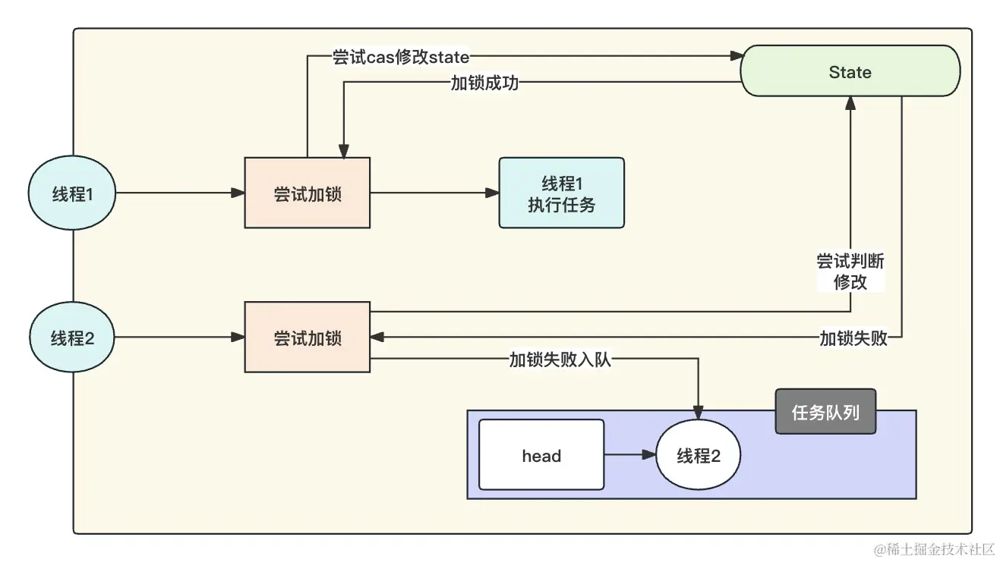
简单来说，加锁无非就是通过 CAS 去改变 State 的值，等于 0 且能改变成功就加锁成功，如果改变失败，就入队后阻塞。详细流程图如下：
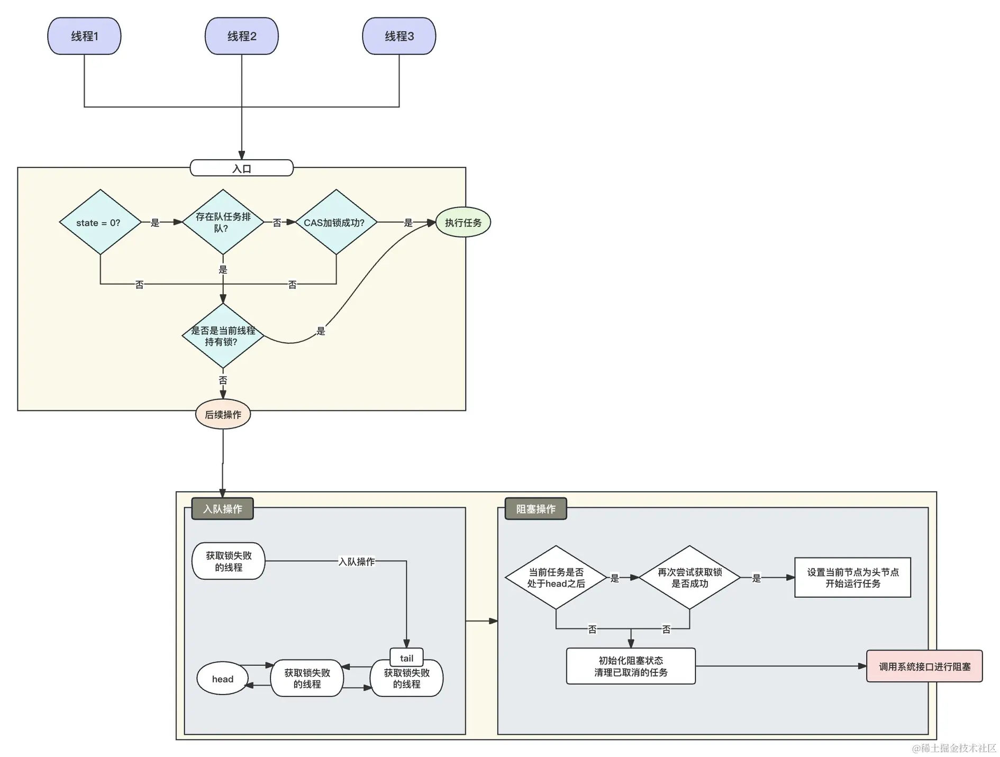
在上文分析了 AQS 进行加锁的原理以及源码，接下来我们将介绍解锁的原理。
我们可以直接进入到java.util.concurrent.locks.AbstractQueuedSynchronizer#release中：
public final boolean release(int arg) {
//尝试释放锁，当为可重入锁的时候，不将锁全部释放为0 会返回false
if (tryRelease(arg)) {
//释放锁成功后 获取头节点
Node h = head;
if (h != null && h.waitStatus != 0)
//唤醒head节点后的节点
unparkSuccessor(h);
//返回释放锁成功
return true;
}
return false;
}
可以看到，当释放锁成功后，会尝试调用 unparkSuccessor 唤醒等待队列中 head 之后的节点。这里先分析解锁成功后的动作：
unparkSuccessor 的源码：private void unparkSuccessor(Node node) {
//获取head节点当前的状态
int ws = node.waitStatus;
//如果节点的状态是 Node.SIGNAL
if (ws < 0)
//使用CAS将状态更改为初始化的0
compareAndSetWaitStatus(node, ws, 0);
//获取head节点的下一个节点
Node s = node.next;
//判断当前的节点是否被取消
if (s == null || s.waitStatus > 0) {
s = null;
//任务如果被取消，则再次遍历链表，剔除失效的任务
for (Node t = tail; t != null && t != node; t = t.prev)
if (t.waitStatus <= 0)
s = t;
}
if (s != null)
//调用系统级命令进行解锁操作
LockSupport.unpark(s.thread);
}
我们在前文分析过，等待队列中的节点都调用了 LockSupport.park(this) 进行了阻塞，这里如果能够解锁成功后就需要接触对应线程的阻塞，传递对应的线程将对应的线程进行取消阻塞，使线程能够真正执行。
接下来分析是如何解锁的，我们带着两个问题看这个源码：
我们进入到 java.util.concurrent.locks.ReentrantLock.Sync#tryRelease 方法中：
protected final boolean tryRelease(int releases) {
//将当前的状态 - 1
int c = getState() - releases;
//如果解锁的线程与持有锁的线程不是一个 直接报错
if (Thread.currentThread() != getExclusiveOwnerThread())
throw new IllegalMonitorStateException();
boolean free = false;
//当加锁次数-1后等于0
if (c == 0) {
//设置解锁成功
free = true;
//将持有锁的线程设置为null
setExclusiveOwnerThread(null);
}
//使用cas 变更当前state的值
setState(c);
return free;
}
我们就上面两个问题根据源码给出答复。
ReentrantLock 是可重入锁，一个线程多次获取锁，state 的数量会大于 1，当解锁的时候，必须当前线程解锁次数 = 加锁次数才能解锁成功，否则解锁失败。至此，公平锁的解锁逻辑我们也分析完了，看下解锁的整体流程：
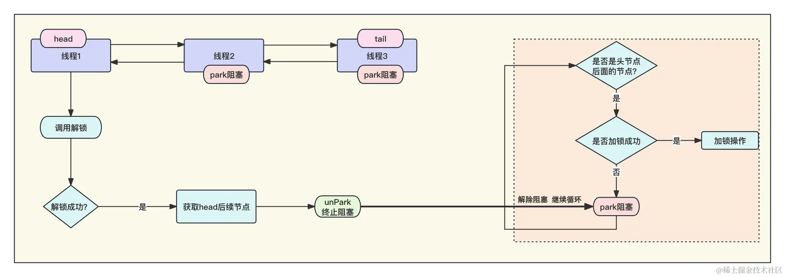
解锁成功后，会调用 head 节点后的等到任务的 unPark 解锁线程，使得阻塞的线程重新开始循环获取锁的操作，直到获取锁成功。
我们在本章节中根据源码详细分析了 ReentrantLock 的公平锁对于 AQS 的应用，对于加锁和解锁操作重点就是操作 AQS 中的 state 状态，可重入锁的情况下，相同线程每加一次锁都会对 state 进行加一操作，每一次解锁都会执行减一操作。当 state 为 0 的时候，证明是无锁状态。
加锁成功后，后续所有获取锁的任务都会进入到等待队列中的双向列表中，同时调用 park 进行线程阻塞，等待解锁成功后调用 unPark 进行终止阻塞，重新执行加锁逻辑。
在上一章节，我们很详细地结合源码讲解了 ReentrantLock 公平锁对于 AQS 的应用原理。
有了这个基础之后，本章节我们将对 ReentrantLock 非公平锁和 CountDownLatch 这两个的 AQS 的源码做一个具体的分析。
我们之前学习过 ReentrantLock 非公平锁与公平锁的区别在于，非公平锁不会强行按照任务等待队列去等待任务，而是在获取锁的时候先去尝试使用 CAS 改变一下 State，如果改变成功直接返回加锁成功不用排队，如果改变失败则进入等待队列。
我们简单看一下非公平锁的源码。
如何寻找非公平锁的加锁实现呢？我们回顾一下上一节课，加锁解锁其实是由 AQS 的实现来做的，而 ReentrantLock 中对于 AQS 的实现是 Sync 内部类，Sync 实现了两种加锁方式：非公平锁和公平锁，结构关系如下：
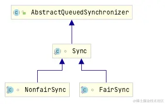
通过这个结果关系，我们能够知道，非公平锁的加锁逻辑在java.util.concurrent.locks.ReentrantLock.NonfairSync#lock。
final void lock() {、
//尝试使用CAS修改state的值，修改成功后就加锁成功
if (compareAndSetState(0, 1))
setExclusiveOwnerThread(Thread.currentThread());
else
//开始加锁
acquire(1);
}
从源码中可以看到，非公平锁一进来就会直接尝试获取一次锁，不会进行太多的判断，这也符合非公平锁的定义，使用 CAS 修改如果成功了，就加锁成功，否则会执行 acquire 的加锁逻辑。
我们在上节课中分析，acquire 方法最终会调用到本身实现的 tryAcquire：
protected final boolean tryAcquire(int acquires) {
return nonfairTryAcquire(acquires);
}
进入到 nonfairTryAcquire 的逻辑：
final boolean nonfairTryAcquire(int acquires) {
final Thread current = Thread.currentThread();
int c = getState();
if (c == 0) {
//直接尝试CAS加锁
if (compareAndSetState(0, acquires)) {
setExclusiveOwnerThread(current);
return true;
}
}
//可重入锁
else if (current == getExclusiveOwnerThread()) {
int nextc = c + acquires;
if (nextc < 0) // overflow
throw new Error("Maximum lock count exceeded");
setState(nextc);
return true;
}
return false;
}
在这里可以看到，它的加锁逻辑与公平锁很相似，但是与公平锁不同的是：
我们从源码中就能够直接看出来所谓的公平锁和非公平锁的实现方式的区别。非公平锁的解锁方式与公平锁的解放方式一致，不做重复介绍。
我们使用一个流程图来彻底解释非公平锁的实现逻辑：
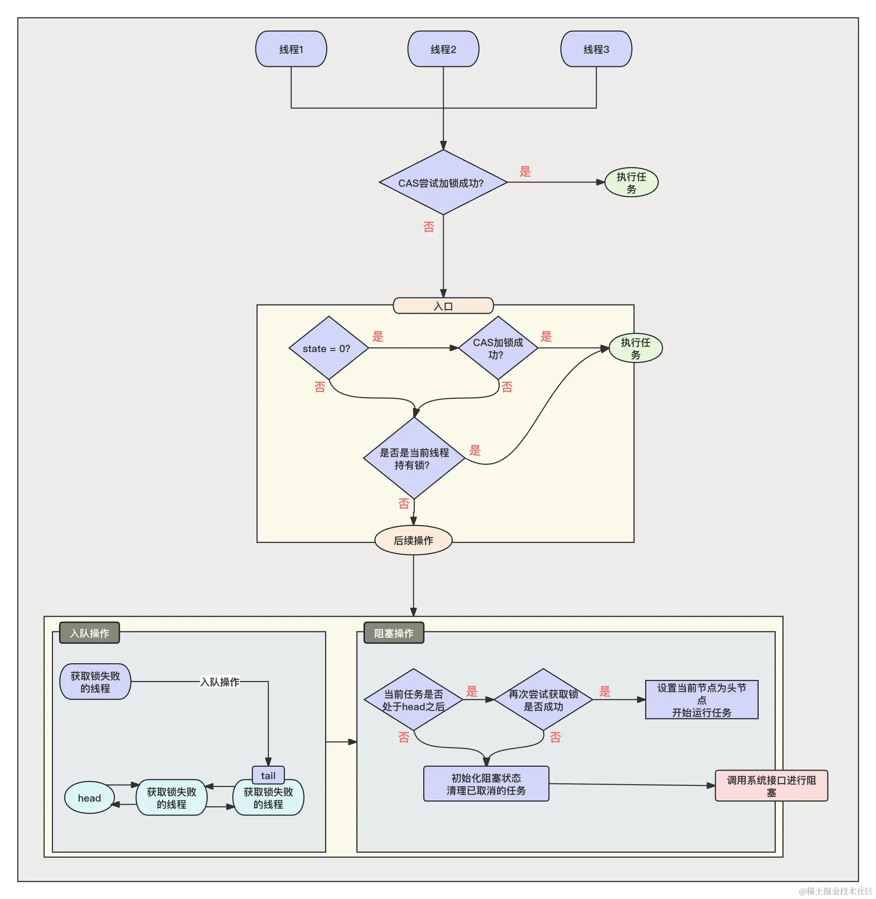
与 ReentrantLock 相同的是，我们同样可以在 CountDownLatch 中寻找到 AQS 的实现类 Sync。没错，CountDownLatch 的实现也是基于 AQS 来做的。
在学习其实现原理前，先回顾一下 CountDownLatch 的使用：
public class CountDownLatchTest {
public static void main(String[] args) throws InterruptedException {
CountDownLatch countDownLatch = new CountDownLatch(10);
for (int i = 0; i < 10; i++) {
new Thread(() ->{
try {
System.out.println("线程：" +Thread.currentThread().getName() + "开始执行。");
Thread.sleep((long) (Math.random() + 10000));
System.out.println("线程：" +Thread.currentThread().getName() + "执行完成.");
} catch (InterruptedException e) {
e.printStackTrace();
}finally {
countDownLatch.countDown();
}
}).start();
}
System.out.println("开始等待10个线程都完成任务...");
countDownLatch.await();
System.out.println("线程全部执行完毕");
}
}
可以看到，在初始化 CountDownLatch 的时候，我们传递了 10，然后开启了 10 个线程执行任务，每一个线程执行完毕之后都会调用 countDownLatch.countDown(); 来进行递减操作。我们在主线程调用 countDownLatch.await(); 来等待 CountDownLatch 变为 0 后，它会解除阻塞继续向下执行！
所以，我们分析 CountDownLatch 对于 AQS 的使用应该从以下几个方面进行：
我们按照问题的顺序逐个分析。
进入到初始化的源码中：
public CountDownLatch(int count) {
if (count < 0) throw new IllegalArgumentException("count < 0");
this.sync = new Sync(count);
}
从源码中看到，初始化的时候，它将我们传递的数量，传递到了 Sync，上文我们了解到，Sync 是 AQS 的实现子类，所以我们从源码层面上证明了 CountDownLatch 的实现一定与 AQS 有关。
我们进入到 Sync 中查看它是如何运用这个 count 的：
Sync(int count) {
setState(count);
}
可以看到，Sync 只做了一件事，就是将 count 保存到了 AQS 的 state 中，比如我们传递的参数是 10，那么此时 AQS 中 state 的值也是 10。
了解了初始化方法之后，我们知道了此时 state 的值为 10，那么我们进入到 await 中，查看它是如何来进行阻塞线程的：
public void await() throws InterruptedException {
sync.acquireSharedInterruptibly(1);
}
可以看到，阻塞也是借助 AQS 来做的，我们继续：
public final void acquireSharedInterruptibly(int arg)
throws InterruptedException {
if (Thread.interrupted())
throw new InterruptedException();
//尝试获取锁
if (tryAcquireShared(arg) < 0)
//获取失败则对任务进行入队和阻塞
doAcquireSharedInterruptibly(arg);
}
我们先分析 tryAcquireShared：
java.util.concurrent.CountDownLatch.Sync#tryAcquireShared
protected int tryAcquireShared(int acquires) {
return (getState() == 0) ? 1 : -1;
}
注意，此时 state 的数量为 10，所以这里应该返回的是 -1。我们继续看 doAcquireSharedInterruptibly ：
private void doAcquireSharedInterruptibly(int arg)
throws InterruptedException {
//创建一个节点 将节点加入到等待队列
final Node node = addWaiter(Node.SHARED);
boolean failed = true;
try {
for (;;) {
//获取当前节点的前置节点
final Node p = node.predecessor();
//如果前置节点是头节点
if (p == head) {
//再次尝试判断state的值是否为0
int r = tryAcquireShared(arg);
if (r >= 0) {
//如果state的数量为0 则r = 1, 开始讲当前节点设置为头节点 并清理废弃节点
setHeadAndPropagate(node, r);
//清理已经执行完的节点
p.next = null;
failed = false;
//返回尝试成功
return;
}
}
//阻塞
if (shouldParkAfterFailedAcquire(p, node) &&
parkAndCheckInterrupt())
throw new InterruptedException();
}
} finally {
if (failed)
cancelAcquire(node);
}
}
我们分析上述源码，当 state 的值不为 0 的时候，证明 CountDown 还没有释放完毕，此时应该阻塞，先将当前节点加入到等待队列，然后同 ReentrantLock 一样，在阻塞之前也会先判断自己是不是 head 的下一个节点，如果是的话会再次尝试判断一下 state 是不是等于 0 了，如果此时等于 0 了，就不用阻塞了，可以直接返回。
此时如果 state 依旧不为 0，则开始与 ReentrantLock 一样调用 park 进行阻塞等待唤醒。
事实上，await 阻塞的逻辑十分简单。我们总结来说，就是当程序调用 await 方法的时候，会判断 state 的值是不是 0，如果不是 0 就阻塞，是 0 就直接返回。
我们使用一张图来解释一下这个流程：
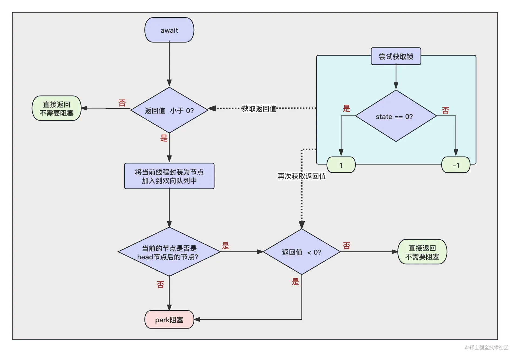
至于为什么会存在一个队列，我们之前在介绍 CountDownLatch 的时候介绍了一种“多等一”的场景（开发人员等待产品经理 PRD 的场景），每一个线程都会调用 await 等待，这里多个等待的任务就会进入到队列中。
直接进入到源码：
public void countDown() {
sync.releaseShared(1);
}
CountDownLatch 的 countDown 也是基于 AQS 来做的，我们进入到 AQS 的实现类java.util.concurrent.CountDownLatch.Sync#releaseShared中：
public final boolean releaseShared(int arg) {
if (tryReleaseShared(arg)) {
doReleaseShared();
return true;
}
return false;
}
我们这里分为两步源码进行解读了。
先行分析 tryReleaseShared（注意，arg 的值默认为 1）java.util.concurrent.CountDownLatch.Sync#tryReleaseShared：
protected boolean tryReleaseShared(int releases) {
for (;;) {
//获取当前的state的值
int c = getState();
//如果此时state的值为0，证明CountDownLatch已经被释放了，所以也没必要解锁释放队列中的任务了，直接返回false
if (c == 0)
return false;
//将当前的state的值减1
int nextc = c-1;
//cas将当前减1的值替换到state中，如果替换失败，因为本逻辑是一个死循环，所以替换失败会重新再来一遍逻辑
if (compareAndSetState(c, nextc))
//当state - 1 = 0的时候，证明需要唤醒等大队列中的任务了，所以返回true，否则不需要唤醒任务，返回false
return nextc == 0;
}
}
tryReleaseShared 的逻辑也是比较简单的，主要就是针对于 state 进行 -1 操作，当减 1 完成后，如果 state 的值等于 0，证明 CountDownLatch 的计数已经完成了，需要将此时 await 阻塞在队列中的任务唤醒，于是当 tryReleaseShared 返回 true 之后，doReleaseShared 将唤醒任务：
private void doReleaseShared() {
for (;;) {
Node h = head;
if (h != null && h != tail) {
int ws = h.waitStatus;
if (ws == Node.SIGNAL) {
if (!compareAndSetWaitStatus(h, Node.SIGNAL, 0))
continue;
//唤醒head节点的下一个节点的阻塞
unparkSuccessor(h);
}
else if (ws == 0 &&
!compareAndSetWaitStatus(h, 0, Node.PROPAGATE))
continue;
}
if (h == head)
break;
}
}
doReleaseShared 方法会获取当前等待队列中的头节点，然后调用 unparkSuccessor 方法将 head 节点的下一节点解除阻塞，进而完成对于 await 的唤醒。
我们使用一张图来简单解释一下 countDown 方法：
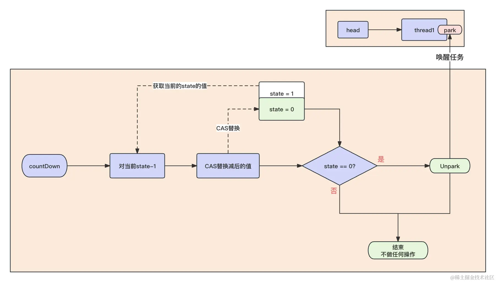
总结来说，countDown 方法主要就是对 AQS 中 State 的值进行 -1 操作，当 State 的值为 0 的时候，就开始唤醒等待队列中的任务。
在本章节中我们对前面所学的 ReentrantLock 非公平锁和 CountDownLatch 进行了深入源码的分析，其本质还是对于 state 的操作。你可以尝试分析一下我们前面所学的 Semaphore 对于 AQS 的使用，看一下它是如何做到基于“许可证数量”来进行控制任务数量的。
在下一章节中，将带领大家学习一个较难的 ReentrantReadWriteLock 对于 AQS 的实现，希望大家认真熟悉上一章节和本章节对于 AQS 的分析，为下一章节打下基础。
我们在前几节课中学习了 ReentrantLock 或者 CountDownLatch 的 AQS 应用原理，本节将继续学习相比前两种稍微复杂一点的 ReentrantReadWriteLock。
它相对复杂的原因有以下几点：
在本节课中，我们还是以 ReentrantReadWriteLock 中更为好理解的公平锁作为切入点进行深入分析。
刚刚我们在上面说过，ReentrantReadWriteLock 使用一个 state 维护了两个状态。在学习之前，我们需要先去学习如何使用一个 32 位的 int 值来表示两种状态，主要是对于 Java 位运算的知识点。
我们前几节课了解到，AQS 中 state 主要是为了记录加锁的次数或者计数次数，但是在 ReentrantReadWriteLock 中存在读锁（共享锁）和写锁（独占锁）两种，那么此时只有一个 state 肯定是无法满足的，因为 state 是一个 int 值，我们知道 int 在 Java 占 32 位字节，所以我们考虑将 32 位分为高 16 位和低 16 位，如下图所示：
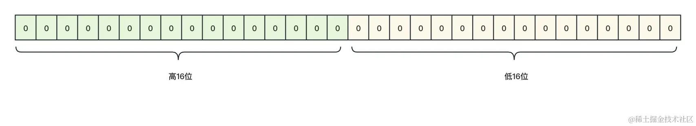
我们可以使用高 16 位存储共享锁，低 16 位存储独占锁，这 32 位最终表示为 10 进制就是一个数字，比如上图表示的就是 0。
那么我们如何计算来单独获取到共享锁或者独占锁的数值呢？
在 Java 中存在一种位运算 & 运算，这种运算模式下，它将两个操作数的每个对应位进行与运算，如果两个对应位都是 1，则结果位为 1，否则为 0，运算顺序如下图所示：
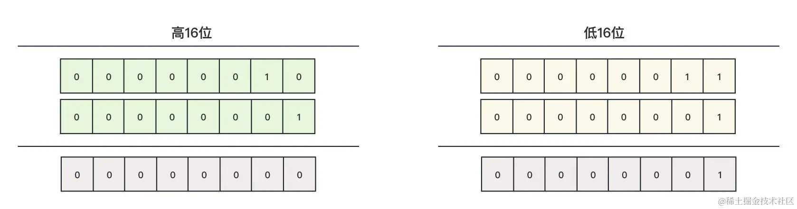
上图就是 & 运算的过程，只有全为 1，最终结果才为 1，如果我们使用低 16 位存储独占锁，那么独占锁的最大数量是低 16 位全部为 1 也就是 65535。
我们假设使用一个低 16 位全部都是 1 的二进制与 state 作 & 运算，那么我们是不是就能够得到低 16 位的数值呢？
可能没有了解过位运算的同学会懵，没关系，我们用图来表示：
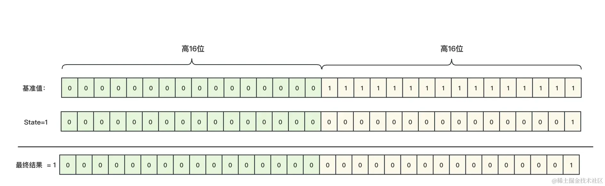
也就是说，只要通过低 16 位全是 1 的值与 state 进行 & 运算，我们就能得到低 16 位的值，当然因为 16 位数据最大只能表示 65535，所以如果 state 的值大于 65535，那么计算就会出问题。所以，我们需要规定，独占锁的数量必须小于等于 65535！
我们看一下，ReentrantReadWriteLock 计算独占锁的规则，先不要管代码在哪里，后面会统一说明：
static final int SHARED_SHIFT = 16;
//得出的结果就是65535 低16位全为1
static final int EXCLUSIVE_MASK = (1 << SHARED_SHIFT) - 1;
static int exclusiveCount(int c) {
return c & EXCLUSIVE_MASK;
}
我们简单说明一下 EXCLUSIVE_MASK 的运算方式，<<这个符号就是左移运算符，目的是将一个数据向左边移动 16 位，空缺位置补 0，然后再进行 -1 操作。
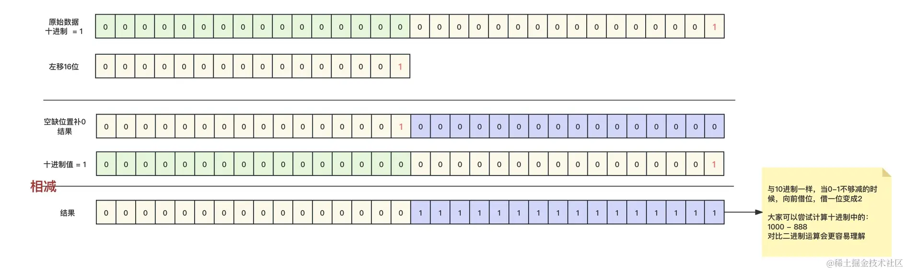
注意，因为这个不是本节课的重点，这里的位运算只是为了让新手更加容易理解，事实上进行 -1 操作的时候，二进制运算中会转换为（xxx + -1）来进行运算，这涉及到了补码的知识点。如果大家想学习，可以在网上查找资料学习，这里不做太多的讲解。
在上述的代码中，c 就是 state，而 EXCLUSIVE_MASK 就是基准值（低 16 位全为 1 的数据），通过 state 与基准值进行位运算，我们就能够得到低 16 位的值，也就是独占锁的数量值。
我们上文说到 state 采用了低 16 位来存储了独占锁，所以从 0 ~ 65535 的数据位置已经被独占锁全部占用，所以高 16 位存储共享锁就需要从 65536 来计算，也就是在二进制中至少需要第 17 位也就是高 16 位的最后一位存在数据才能存储共享锁的数量级。
如图所示，我们分别表示共享锁的数量为 1、2、3：
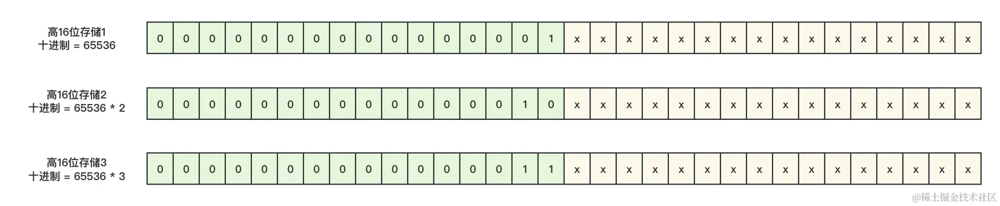
从上图可以看到，如果我们想要获取高 16 存储的实际的数值，需要将低 16 位的干扰排除掉，然后计算就能得到十进制的数据，所以我们需要用到另外一个计算符 >>>，这个符号在 Java 中可以将二进制数据无符号右移，缺少的位置补充为 0，如图所示：
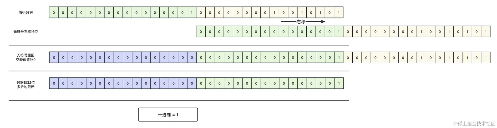
我们通过无符号右移 16 位，就能够完全抛弃掉低 16 位对我们运算的影响，从而达到计算共享锁数量级的目的。
如果我们想要对高 16 位进行 +1 操作呢？此时因为我们操作的是高 16 位，所以直接对 state + 1 是不行的，每一次对高 16 位 +1 都需要在实际的十进制中增加 65536 的数值。
依旧是使用一张图来证明演算过程，我们现在对高 16 位进行 +1 操作：
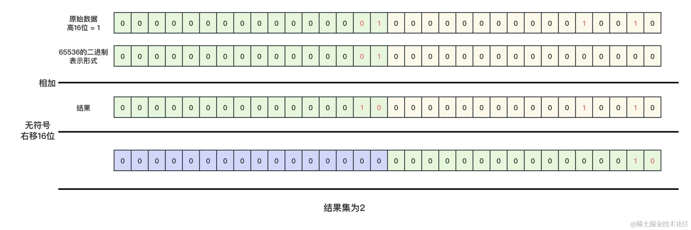
至此，我们学习了，如果想要计算高 16 位的值，需要将数据无符号右移 16 位来得到共享锁的数量级；如果想对当前共享锁的数量级数量 +1 ，则需要对 state + 65536。
我们来看下 ReentrantReadWriteLock 对这个的应用。
获取共享锁的数量级：
static final int SHARED_SHIFT = 16;
static int sharedCount(int c) {
return c >>> SHARED_SHIFT;
}
可以看到，这里计算共享锁数量级方法的过程是计算高 16 位，计算过程与我们上文分析的一致。
对共享锁的数量级 +1 操作：
static final int SHARED_SHIFT = 16;
static final int SHARED_UNIT = (1 << SHARED_SHIFT);
compareAndSetState(c, c + SHARED_UNIT)
这里可以看到，对于共享锁的数量级的修改是直接使用 CAS 修改为当前的 state + 65536，计算过程与我们上文说的一致。
至此，我们已经学习了在 ReentrantReadWriteLock 中如何通过一个 state 来维护两个锁的数量值，我们来分别分析一下共享锁和独占锁的加解锁的过程。
这里还是以公平锁为例进行分析，非公平锁你在闲暇之余可以根据这几章的所学来分析一下。
直接进入到 java.util.concurrent.locks.ReentrantReadWriteLock.Sync#tryAcquireShared，源码的寻找过程跟前几章的寻找过程一致：
protected final int tryAcquireShared(int unused) {
//获取当前的线程
Thread current = Thread.currentThread();
//获取当前的state的值
int c = getState();
//判断是否存在独占锁
if (exclusiveCount(c) != 0 &&
getExclusiveOwnerThread() != current)
return -1;
//获取共享锁
int r = sharedCount(c);
//是否需要排队等动作 共享锁的数量是否小于65535 cas修改高16位是否成功
if (!readerShouldBlock() &&
r < MAX_COUNT &&
compareAndSetState(c, c + SHARED_UNIT)) {
//首次加锁
if (r == 0) {
//记录首次的线程 （优化）
firstReader = current;
//首次线程的加锁数量级 （优化）
firstReaderHoldCount = 1;
} else if (firstReader == current) {
//如果还是首个线程 则直接累加，此时还没有竞争呢
firstReaderHoldCount++;
} else {
//存在线程竞争 则使用ThreadLocal缓存一个HoldCounter加锁的计数器
HoldCounter rh = cachedHoldCounter;
if (rh == null || rh.tid != getThreadId(current))
cachedHoldCounter = rh = readHolds.get();
else if (rh.count == 0)
readHolds.set(rh);
//计数器累加操作
rh.count++;
}
return 1;
}
//当上面共享锁加锁失败，则开始循环迭代加锁
return fullTryAcquireShared(current);
}
有了前面的知识其实很好理解这段代码，我们在学习 ReentrantReadWriteLock 的时候学习过它的特性，读写锁存在互斥性，即读锁和写锁不能同时共存，所以首先需要根据位运算来计算低 16 位是否存在写锁，如果存在直接加锁失败，如果不存在则继续。
在确认此时没有写锁后，根据位运算计算高 16 位的读锁的数量，当判断不需要排队和读锁的数量不超过 65535 并且 CAS 修改成功的情况下，开始执行读锁的加锁逻辑，主要有以下几个步骤：
fullTryAcquireShared 方法主要是进行兜底的操作，当发现线程需要排队、加锁次数超过 65535、CAS 加锁失败的时候进行兜底，内部工作机制如下：
new Error("Maximum lock count exceeded")。我们使用一个流程图来描述整个过程：
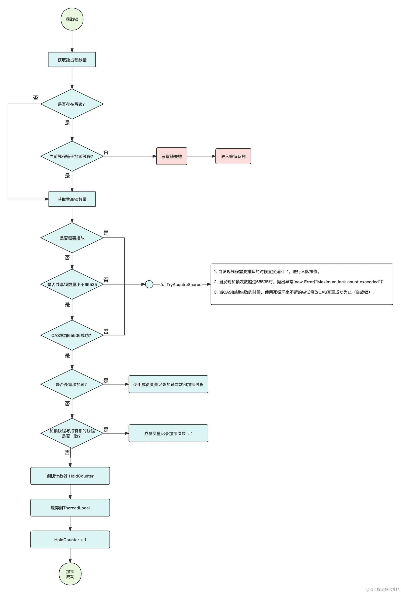
总结来说，共享锁的加锁逻辑就是先判断是不是存在写锁，存在写锁就直接加锁失败入队，不存在就加锁成功并修改 state 的高 16 位数据，并在每一个线程维护一个计数器，来计算每一个线程加锁的次数。
共享锁的解锁比较简单，解锁过程简单来说无非就是将累加器中的累加次数 -1，同时将 state 中的高 16 位 -1（state - 65536），然后再通知等待队列中的任务进行解除阻塞。
源码位置：java.util.concurrent.locks.AbstractQueuedSynchronizer#releaseShared。
public final boolean releaseShared(int arg) {
if (tryReleaseShared(arg)) {
doReleaseShared();
return true;
}
return false;
}
这里我们还是分两部分进行解析 tryReleaseShared 和 doReleaseShared。
tryReleaseShared
java.util.concurrent.locks.ReentrantReadWriteLock.Sync#tryReleaseShared
protected final boolean tryReleaseShared(int unused) {
Thread current = Thread.currentThread();
//如果当前解锁线程是首个加锁的线程，证明没有竞争直接修改局部变量即可
if (firstReader == current) {
if (firstReaderHoldCount == 1)
firstReader = null;
else
firstReaderHoldCount--;
} else {
//存在竞争 直接修改ThreadLocal中的累加器
HoldCounter rh = cachedHoldCounter;
if (rh == null || rh.tid != getThreadId(current))
rh = readHolds.get();
int count = rh.count;
if (count <= 1) {
readHolds.remove();
if (count <= 0)
throw unmatchedUnlockException();
}
--rh.count;
}
for (;;) {
int c = getState();
int nextc = c - SHARED_UNIT;
//使用CAS修改数据 CAS修改失败则开始自旋修改，直至修改成功
if (compareAndSetState(c, nextc))
//重入锁的情况下，加锁次数减少一次不会为0
return nextc == 0;
}
}
正如我们前面分析的，解锁逻辑总共就做了两件事：
我们在这一步也就基本上了解了，有一部分同学在学习加锁的时候疑惑的 HoldCounter 的意义，它就是为了记录某一个线程的加锁次数，以方便在后续解锁的时候，释放重入锁进行计数。HoldCounter 与 state 不同的是，HoldCounter 记录的是单个线程持有读锁的次数，而 state 记录的是整个锁的状态，包括共享锁的持有次数和排他锁的持有信息。
doReleaseShared
在上一步释放锁成功后，会尝试将等待队列中的任务进行唤醒，具体方法如下：
java.util.concurrent.locks.AbstractQueuedSynchronizer#doReleaseShared
private void doReleaseShared() {
for (;;) {
//获取头节点
Node h = head;
if (h != null && h != tail) {
int ws = h.waitStatus;
if (ws == Node.SIGNAL) {
//初始化状态waitStatus为0
if (!compareAndSetWaitStatus(h, Node.SIGNAL, 0))
continue;
// 将head节点的下一个节点解除阻塞
unparkSuccessor(h);
}
else if (ws == 0 && !compareAndSetWaitStatus(h, 0, Node.PROPAGATE))
continue;
}
if (h == head)
break;
}
}
这一块代码主要的作用就是将 head 节点后面的节点调用 unPark 方法进行解除阻塞，以达到让等待队列中的任务能够继续执行的目的。
这里我们将共享锁（读锁）的加解锁做了一个详细的介绍，事实上，它的加解锁方式与 ReadWriteLock 的根本区别就是对于共享锁的加锁，在没有写锁的情况下，会直接加锁成功，同时在 state 中维护读锁的加锁数据。存在写锁，则直接加锁失败入队。
我们在上文详细学习了读锁的加解锁操作，下面我们开始正式分析写锁的加解锁的操作。
代码位置在：java.util.concurrent.locks.AbstractQueuedSynchronizer#acquire。
public final void acquire(int arg) {
if (!tryAcquire(arg) &&
acquireQueued(addWaiter(Node.EXCLUSIVE), arg))
selfInterrupt();
}
这里可以看到，它的加锁方式与 ReentrantLock 一样，我们只需要重点关注 tryAcquire 方法在 ReentrantReadWriteLock 中的实现就行了，其他方法在前面分析过，不再重复讲解。
先思考一下，如果是你，你该对写锁如何加锁？
首先，它是一个独占锁，所以我们需要先判断 state 的低 16 位是不是已经存在独占锁了，如果已经存在独占锁了，那么我们就需要判断是不是重入锁！如果 state 中已经存在独占锁了，而且也不是重入锁，那么直接加锁失败，将任务放到任务队列中就可以了。
其次，如果没有独占锁，因为 16 位字节的限制，所以独占锁的限制不能超过 65535 个，如果超过了就直接报错。
然后在既没有独占锁占用又没有超过最大值的情况下，我们直接就 state + 1，然后返回加锁成功就可以了。
那么，我们一起来看一下源码中是如何做的。
源码位置：java.util.concurrent.locks.ReentrantReadWriteLock.Sync#tryAcquire。
protected final boolean tryAcquire(int acquires) {
//获取当前的线程
Thread current = Thread.currentThread();
//获取当前State的值
int c = getState();
//计算低16位的值
int w = exclusiveCount(c);
//如果 state!=0 证明state存在读锁或者写锁
if (c != 0) {
//如果w = 0 证明State中存在读锁 不存在写锁，读写不能共存，所以直接加锁失败
//如果w != 0 这个名State中存在写锁，此时需要判断是不是重入锁，不是重入锁也直接失败
if (w == 0 || current != getExclusiveOwnerThread())
return false;
//如果没有读锁，那么判断写锁数量是否超过最大值，超过直接报错
if (w + exclusiveCount(acquires) > MAX_COUNT)
throw new Error("Maximum lock count exceeded");
//经过上面的判断，这里就符合w!=0 而且符合重入锁的规则，直接向上累加加锁次数就可以了
setState(c + acquires);
return true;
}
//如果state == 0 证明即不存在写锁也不存在读锁，此时需要判断等待队列中是否存在任务，不存在而且CAS能够修改成功就返回加锁成功，否则加锁失败
if (writerShouldBlock() ||
!compareAndSetState(c, c + acquires))
return false;
setExclusiveOwnerThread(current);
return true;
}
从代码注释中可以看到，代码中的设计原理与我们之前设想的基本一致。还是老规矩，我们使用一张流程图来说明问题：
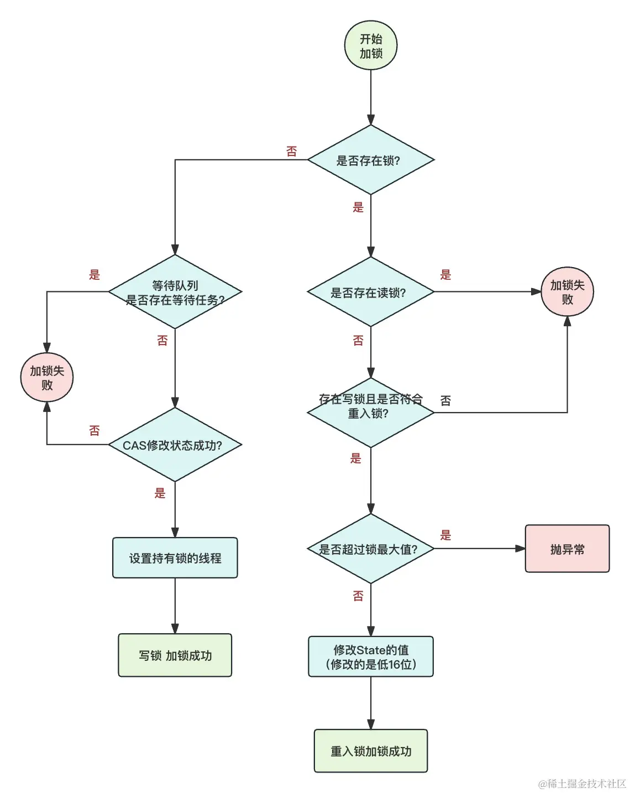
了解了写锁的加锁步骤之后，解锁步骤能猜出来：
猜测完毕后，我们来看实际的源码。
源码位置：java.util.concurrent.locks.AbstractQueuedSynchronizer#release。
public final boolean release(int arg) {
if (tryRelease(arg)) {
Node h = head;
if (h != null && h.waitStatus != 0)
unparkSuccessor(h);
return true;
}
return false;
}
同样的，代码我们都分析过，我们这里只重点分析 tryRelease。
源码位置：java.util.concurrent.locks.AbstractQueuedSynchronizer#tryRelease。
protected final boolean tryRelease(int releases) {
//判断解锁线程是不是加锁线程 不是就直接报错
if (!isHeldExclusively())
throw new IllegalMonitorStateException();
//state - 1
int nextc = getState() - releases;
//判断重入锁是否解锁成功
boolean free = exclusiveCount(nextc) == 0;
if (free)
//加锁线程置空
setExclusiveOwnerThread(null);
//cas设置state
setState(nextc);
return free;
}
可以看到，与我们的猜测基本一致，比较简单，这里不再画图说明。
本节课我们从源码角度学习了 ReentrantReadWriteLock 的写锁和读锁的加解锁原理，也从源码角度上说明了 ReentrantReadWriteLock 是如何通过 AQS 中一个 state 来控制两个锁的状态的。通过这一节课的学习，我们也了解到了读写锁互斥、写锁互斥的原理，相当于对我们前面的所学做了一个验证！
大家闲下来的时候，也可以自己分析一下非公平锁的源码，看看你是否已经搞明白 ReentrantReadWriteLock 对于 AQS 的使用！